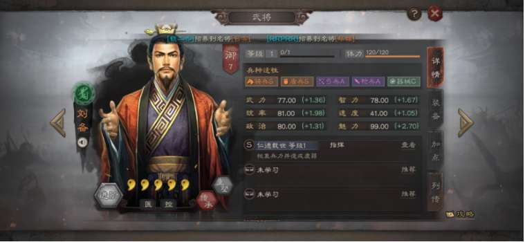

《三国志战略版》游戏简介
以下內容參考如下
游戏概述
《三国志战略版》是一款SLG（Simulation Game）类型的手游，以三国时期为背景，玩家在游戏中扮演一方诸侯，通过策略和谋略争夺天下。游戏以其深厚的历史背景、丰富的策略玩法和高度的玩家互动性著称。
游戏周期
《三国志战略版》采用赛季制模式，每个赛季通常持续三个月，分为多个阶段，每个阶段都有其特定的目标和挑战。游戏的核心玩法围绕土地的争夺展开，玩家需要占领地块来扩张领土、获取资源、推进战争和宣示主权。
赛季制的魅力
打破固有僵化态势
赛季制允许游戏打破原有的势力平衡，将多个S1赛季的区服合并为S2赛季，使得同盟之间的实力更加均衡，竞争更加激烈。这为玩家提供了全新的博弈机会，无论是选择与前同盟和解还是加入新的同盟，每个玩家都可以决定自己的道路。
凝聚更多活跃玩家
随着游戏的推进，每个区服的活跃玩家数量会逐渐减少。通过合并多个S1区服的玩家，S2赛季能够保证游戏的活跃度，并为玩家提供结识新朋友的机会。
树立全新游戏目标
在天下一统的局面下，许多玩家在赛季后期会感到无所事事。开启全新的S2赛季，让霸业进度重置，为所有玩家提供了新的挑战和目标。
有序增加游戏内容
对于新手玩家，游戏内容的逐步解锁有助于他们逐步熟悉游戏。更复杂的武将、战法和游戏机制会在后续赛季中有序加入，而不是一开始就全部呈现。
PK赛季是什么？
PK赛季是《三国志战略版》中的一种特殊赛季，通常从第四个赛季开始。在PK赛季中，游戏引入了更多的变化和挑战，如不同的剧本、特殊的规则和新的游戏机制。这些赛季提供了不同于标准赛季的游戏体验，增加了游戏的多样性和可玩性。
固定3个赛季简介
S1赛季
- 简介：S1赛季是玩家的起始赛季，玩家在这里学习游戏的基本规则和策略，体验从无到有建立自己势力的过程。
- 特点：基础教学，逐步解锁游戏内容，让新手玩家逐步熟悉游戏。
S2赛季
- 简介：S2赛季是多个S1赛季区服合并后的新赛季，玩家将面临更加激烈的竞争和全新的挑战。
- 特点：势力重新洗牌，玩家可以选择加入新的同盟或与旧同盟继续合作，竞争更加激烈。
S3赛季
- 简介：S3赛季继续深化游戏策略，玩家需要更加精细地管理自己的领土和资源，同时应对来自其他玩家的挑战。
- 特点：策略深化，玩家需要更加注重同盟间的合作与对抗，以及资源的有效管理。
三国志战略版赛季总览
以下內容參考如下
S1
- 简介：新手期，抽到啥将随便玩，全区各州各盟各种背刺，分分合合，新人玩的还算不亦乐乎，玩家只要1赛季能坚持玩下来，后面赛季就能留下继续玩。
- 好玩指数：★★★★★
S2
- 简介：增加侠客军、增加S2限定武将，增加兵书，阵容进一步丰富，各种官匪对战，玩家进一步熟悉三战。
- 好玩指数：★★★★☆
S3
- 简介：增加S3限定武将、增加功勋商店，可换特技装备，增加锦帆军，象兵，虎卫军，青州兵，阵容更加进一步丰富。
- 好玩指数：★★★★☆
S4：PK1群雄割据
- 简介：马腾、袁绍、刘备、孙策4个势力，可以获得2个宝物，将武将的兵种属性直接提升为S级，武将池一下多了很多武将，各种黑科技阵容，三战从pk赛季才算正式开始，喜欢的可以选择多玩几次整训剧本。
- 好玩指数：★★★★★
S5：PK2天下争锋
- 简介：曹操VS孙刘，上三州和下三州的南北对战，中途不可以叛变，不用外交，不用担心背刺，玩家比较省心，第一次玩比较有趣，再玩就没意思了。霸业值多的一方为胜利方阵营，阶段贡献排名前1-300名玩家霸业奖励，不受同盟控制，散人玩家可自己肝到前300拿霸业，散人或月卡玩家重点关注。
- 好玩指数：★★★☆☆
S6：PK3英雄露颖
- 简介：玩法跟S3类似了，增加同盟秘籍，所以锁城防止抢大龙，侠客军可拿霸业。
- 好玩指数：★★☆☆☆
S7：PK4赤壁之战
- 简介：玩法类似天下争锋，增加水战，地图更大，可在地块上根据风向放火，火可以顺风蔓延，前线基本是各种火烧连营。和天下对比，选赤壁更好玩。霸业值多的一方为胜利方阵营，霸业值双方相同均失败。阶段贡献排名前1-300名玩家霸业奖励，不受同盟控制，散人玩家可自己肝到前300拿霸业。
- 好玩指数：★★★☆☆
S8：PK5军争地利
- 简介：增加地形、指令，属于尝试丰富玩法的剧本，不是太好玩。
- 好玩指数：★☆☆☆☆
S9：PK6兴师伐乱
- 简介：增加西凉军团，基本上只有霸业盟进虎牢关打吕布，别的盟战败基本就躺平了，体验不到打吕布，有水淹、火烧、个别武将新增登庸令可以改阵营，玩一次就好。
- 好玩指数：★★★☆☆
S10：PK7北定中原
- 简介：从这个剧本开始，赛季剧本内容开始复杂起来，除了武将，还得研究好剧本特色内容，才能如虎添翼。北定剧本最好玩的是个性系统，新增逢山开路，遇水叠桥。个性系统比较实用，强健180的体力很过瘾，巾帼对女性武将加成比较大，伐乱对讨伐加成让白板就能穿巨戟士。
- 好玩指数：★★★★★
S11：PK8官渡之战
- 简介：新增战械，战械系统应该是目前三战最复杂的内容。6个州分别有不同的属性加成，每个玩家战械仅有一队，一般是选择最强的队伍，再用战械进一步增强。曹操、袁绍不能结盟，有4个州有阵容2+1效果加7%属性，可以玩一些黑科技阵容。不能在其他州迁城，被俘虏可以出生州重振。6个武将太史慈、甘宁、贾诩、张辽、赵云、魏延可登庸令改【群】阵营，能搭配不少黑科技阵容。
- 好玩指数：★★★★★
S12：PK9王师秉节
- 简介：新增信符，可理解为一只队伍多一个辅助技能。不同的队伍可以选择不同的信符，一般是一只队伍带同一套信符，一套6个部位信符全升到橙色。战败方很惨，被平推到出生州，对方能直接迁城到你出生州，全盟被俘。
- 好玩指数：★★☆☆☆
S13：PK10英雄集结
- 简介：新增招降名将，名将可学习特性和指令，是融合了前几个赛季的大杂烩，对阵容有小小增强辅助。赛季商店每个玩家可以从6个战法技能里选择学习2个。
- 好玩指数：★★☆☆☆
S14：PK11兵战四时
- 简介：新增四季，春夏秋冬每个季节学习不同的事件、提案、计策，冬季在部分区域的河流，会结冰。结冰地面可以行军、占领、连地，不可建筑、迁城。踏雪袭营可直接把结冰附近的敌方主城拔城。战备系统新增4个宝物，4选1，比较实用的是魏公子兵法。
- 好玩指数：★★☆☆☆
S15：PK12襄樊之战
- 简介：三战第三个年度“大剧本”，六大出身文人、农夫、官吏、兵卒、工匠、商人，每一个出身有四个特技，一旦选择出身无法更换。水寨船只改装、船只指令，可迁城水寨周围1格，地图自带天气预报，一下雨洼地变淹地。淹地上建筑耐久降低50%，建筑功能失效无法升级，城池九宫八卦阵失效，闭城持续时间缩短50%，仅有船只可在淹地作战。
- 好玩指数：★★★★★
S16：PK13云起龙襄
- 简介：拜师系统，君王殿达到八级，玩家就可以建造举贤阁，可选自己已有的武将，拜师后，徒弟后相当于复制师傅，冠军枪、芦苇盾剧本强势队伍，黑科技阵容也可以搭配出不少。
- 好玩指数：★★★★★
S17：PK14天师举义
- 简介：大汉阵营和黄巾军阵营。汉室：袁绍、朱儁、皇甫嵩全兵种变成S属性，4个技能可选技能。黄巾军：张角、张宝、张梁能全兵种变成S属性，4个技能可选技能。可召唤与武将同等级的义军，持续15分钟，帮你打仗。拜将印可统御-1，21御可玩。每日可双倍打野3次。
- 好玩指数：★★★★☆
S18：PK15陈仓之战
- 简介：军令台每天刷新卡令，“打牌”增加各种增益状态。剧本可玩的四大亮点：1、登庸令。2、精锋矢阵。3、鉴往知来。4、贴标签。剧本可组合的黑科技阵容更加丰富，墩盾，神火盾等队伍都可直接玩了。区服报名后玩家不能自选阵营，系统根据区服报名人数由系统直接分配蜀阵营、魏阵营。资源州中间有官道可铺路，官道不能迁城。霸业由霸业值高的阵营贡献值前300名玩家获得，不受同盟控制，散人玩家可重点关注此本自己肝到前300拿霸业。
- 好玩指数：★★★★★
S19：PK16潼关之战
- 简介：预计2024年1月底春节前上线，SP马超、SP许褚应该要出了。
- 好玩指数：信息未提供
赛季1
内容内容参考如下
- 【攻略】S1賽季各國最全陣容以及開荒
- 三国志战略版S1新手教程 从入门到精通
- 三国志战略版S1赛季介绍
- 《三国志战略版》开荒攻略 开荒队伍推荐
- [攻略]三國志．戰略版(Romance of the Three Kingdoms)中文版攻略(附介紹)
- 盘点S1武将分级 & 最强top10阵容推荐
三国志战略版 S1赛季（一赛季）剧本介绍
赛季特色
自有选州、组建同盟、建立国家、攻取洛阳，争夺霸业。如果是新手第一次玩三战，S1、S2、S3前三赛季都要体验，S1赛季是所有新手玩家从0开始需要经历的第一剧本。S1剧本是现在所有大多数剧本的基础地图，新手玩家可以自由选择六个州落州，称之为出生州，六个州中间有三个州资源比较丰富，称之为资源州，地图最中间是司隶，洛阳城所在，乃兵家必争之地，获得霸业首要条件占领洛阳。
用最简短的话来描述S1怎么玩：
落州、抽将、3个武将组合阵容，打地发育，升级城建，加入同盟，跟随同盟打城，开资源州关口，进资源州，用最强的阵容和别的州的对手PK较量，进司隶打洛阳，最终目标拿霸业奖励，中间会遇到各种同盟背叛、被俘虏、合盟，最后活跃和高战力的玩家被整合在1个最强盟里。
一、阵容
三国志战略版最核心的是橙色武将，只有抽到这个橙将，才能组合阵容上阵，或拆解战法，配将不会可以抄别人的成型阵容，但武将和战法没有这游戏就没法有太好的体验了。
- 尽量同一个国家武将组成1队，有10%国家队属性加成。
- 尽量选择兵种属性S的武将组一队。“兵种适性”属性影响武将佩戴该兵种出战时的属性，适性分为“C、B、A、S”四种，在战斗中当前兵种的适性为C级时，武将属性将调整为原来的70%;适性为B级时，武将属性调整为原来的85%;适性为A级时，武将属性调整为100%;适性为S级时，武将属性调整为原来的120%。
- 武将尽量相互搭配、输出、控制、回血等技能相辅相成。
二、打地
- 打一块地，守军重置为5分钟，即玩家要在5分钟之内打赢野地的守军。6级地开始守军为2队，第一队可以侦查，第二队系统随机。
- 打完守军之后还要在该地块停留5分钟，美其名曰“占领”，即5分钟后该地才归属玩家。
- 将领体力上限120，每3分钟回复1点体力，进攻一块野地需要消耗15点，算上行军和占领，进攻一块野地需要一个小时才能恢复之前状态，如果损失较大，造兵时间更长，作战间隔相应拉长。
- 主城造兵有固定公式，具体为1兵=10木头+10铁矿+20粮食，因此可以大致估算自己能征多少兵。
- 战法不能拆卸，只能遗忘，即拆下战法，战法回归1级，玩家返还升级战法所需战法点的80%。
- 武将除了拆成技能，将领觉醒、升阶都可进行免费重塑，两次重塑之间cd为10天。
- 打地，尤其是4级地开始，之前先侦查一下，确定兵种克制，兵种有枪骑盾弓四种，侦查尽管需要5分钟，但能让打地变得更加轻松愉快。
- 新手期为玩家进服48小时内，新手期福利如下：战法100%返还，但记得在新手期快要结束时将战法搭配固定。
三、资源
游戏里的资源分为“石料”、“铁矿”、“粮食”、“木材”四种，如何能够获得更多的资源。
资源来源一：领地和屯田
领地和屯田可以生产大量的资源，其优点就是量大、稳定性足。
-
领地
- 领地等级越高收获的资源产量也越大，主公要做的就是占领更多的领地，并且量力而行去打地。在打地的时候可以先侦查土地守军的兵种，然后派出克制的部队出战能有效减低战损。
- 占领土地时也要考虑主公当前的资源种类分配问题，什么缺就多占领那种土地，比如说主公在开荒期会比较缺少石料资源，所以占领的时候可以多占领石料土地，良好的分配可以节省发育时间。
-
屯田
- 屯田需要消耗策书，在开荒期和前期还没涉足到装备时和战役时，推荐主公所有策书都用于屯田加速城建发育。
- 高等级的土地屯田的收益会更高，所以主公最好是以高战损打下一块越级的地来屯田，不需要担心战损的消耗，因为屯田的差距偏大，很快便能回本。
- 到了游戏中期，主公还可以在城建时集中对某一种资源升级，当资源升到20时会激活特殊效果，大幅提升该资源的屯田收益。
资源来源二：城建与委任
城建和委任是可以额外增加生产资源量，其优点就是最稳定，不会被任何事物干扰。
-
城建
- 城建是每个主公接触游戏时就懂得的玩法，在城建建筑中，升级“农场”、“采石处”、“伐木场”、“冶铁台”可以增加各种资源的产量。
- 升级同样需要消耗资源，就像是自产自用一样，建筑每5级都会迎来一次消耗的大提升，所以升级时要注意5、10、15、20、25级都是一个分水岭，建议主公优先将四种建筑升到10级开启委任官职。然后再选其中一种建筑优先升到20级解锁特殊效果，大幅提升该资源屯田的收益。
-
委任
- 委任可以小幅度提升资源资源产量的比例，其中主政官最为重要，可以增加所有资源的产量。而“木材官”、“冶铁官”、“采石官”、“粮草官”会单独增加对应的资源。
- 建议主公在委任时选择政治属性成长最好的武将委任为主政官，而其他四项可以选择有战法加成的武将或者政治较高的武将委任。这种方式分配出来的收益效果最佳。
资源来源三：打野
打野也能获得资源奖励，比如每天定点刷新的木牛流马，还有随机刷新的贼寇，击杀这些野怪都可以获得不错的资源奖励。要注意的是贼寇讨伐需要消耗1个策书，如果不是为了装备材料建议直接屯田收益会更高。
资源来源四：同盟
加入一个好的同盟也能获得各种资源的产量加成，当同盟攻占城池成功时，加成会逐步提升，当城池数量多起来后，加成将会达到无法忽视的高度。
四、同盟
同盟的作用：资源生产增益，多种玩法获得大量铜币，攻占盟友周围领地，广结同盟好友以及庇护。
同盟可以自己建立或加入他人同盟：你可以选择自己创建和小伙伴们打江山一起爽，或者加入别人的同盟一起爽！
同盟贡献和等级：贡献需要捐赠资源获得。贡献越多，等级越高。等级越高，大家享受到的黑科技增益和小伙伴们就越多！捐献资源前提也记得保证自己的发育。
同盟攻城：攻城上榜后，可以在城池信息攻城榜处留下自己的名字，还可以获得铜币奖励。参与攻城的所有玩家都可以获得金铢奖励。
同盟科技：等级越高，享受到的科技越多。士气增益、耐久上限、解锁瞭望塔、军乐台等功能哟！
同盟外交：友好，中立，敌对。简单明了而又复杂的外交舞台能够展现大家的聪明才智。不管是策反，利诱，结盟还是背叛，都将会是这个舞台上最精彩的故事！
立国：同盟等级30级后可操作的选项！
俘虏：非盟友玩家之间可以互相攻击，当主城耐久被打至0时，玩家主城沦陷，成为攻击方所在联盟的俘虏。这时候若我们没有盟友就只能憋屈的缴纳赎金自救。若加入同盟，同盟的小伙伴就能够帮忙攻城解救，无须缴纳赎金。要注意的一点是攻击方必须有联盟才能俘虏别的玩家，如果未加入联盟，可以攻击，但不好意思，把耐久磨没了也是白磨。俘虏的好处还有一个，那就是可以免费借地。
同盟系统最关键的功能！攻略掠地，真正的争霸天下！在同盟里，你可以和大家一起攻城，甚至和其他同盟拉起一场战争！盟与盟之间的战争，州与州之间的战争！热血男儿当自强，率兵打仗争天下！
最后，经历S1赛季的战斗，相信三国志战略版大家已经入门了，后面更加精彩的剧本内容等待体验。
三国志战略版 S1 开局攻略
一、入门攻略
1. 主公选择
赛季开局提供4种主公类型：明主、贤主、英主、霸主。
回答路线参考：
- 明主：11133
- 贤主：33333
- 英主：11111
- 霸主：11121
主公属性对比
| 类型 | 奖励道具 | 属性加成 |
|---|---|---|
| 明主 | 三文矛 | 武力 +4，统率 +6 |
| 贤主 | 50000铜币 | 速度 +6 |
| 英主 | 1300战法点 | 智力 +6 |
| 霸主 | 大宛马、服方尊 | 速度 +4，武力 +6 |
推荐选择： 贤主或英主
- 贤主提供50000铜币，可换1000战法点及蓝将，甚至可能获得紫将。
- 英主提供战法点，适合战法升级需求。
2. 开荒武将推荐
- 买开局号：推荐赵云、张飞、刘备、夏侯惇。
- 首充开局：
- 68元：孙坚 + 孙策
- 6元：孙坚 + 关平
- 0氪党：关平 + 任意紫将/蓝将（开荒速度稍慢）。
3. 开荒节奏
- 将战法点优先用于开荒武将，提升效率。
- 武将到5级解锁第二战法，可先用B级战法过渡（需传承蓝将并演练）。
- 武将5级、兵力1000后开始打3级地，优先升级武将和获取资源。
- 武将10级后分配属性点，侦察周围4级地并准备开荒。
- 开荒期间打木牛流马资源道具，并合理分配资源与兵力。
- 武将20级后解锁第三战法与装备系统，准备开5级地。
- 主城升7级君王殿，确保队伍能力过渡至高级土地。
- 武将30级主力队伍即可开6级地，优先打资源地。
4. 前期发展
- 跟随主线任务
- 开荒时期，建议各位主公可以紧跟主线任务。
- 主线任务已经梳理了最合理的升级路线，一开始跟着主线升级设施，可以最大限度减少资源的浪费。
- 加入同盟
- 加入同盟后会有同盟资源产量增益，对前期的发展会有较大帮助。
- 委任内政官
- 随着任务的进行，委任功能会开放。
- 有些武将自带内政战法，委任这些武将作为内政官时，可以有效提升城内各类资源的产量。
- 名声、势力值
- 名声决定了可攻占土地的上限。
- 名声每增加100点，领地上限可以增加1块。
- 势力值是实力的象征，可以通过占领高级领地、建造个人建筑等方式提升。
- 策书
- 策书可用于屯田、讨伐贼寇、建立营帐等，策书每小时回复一个。
- 前期资源匮乏的情况下，不建议使用策书讨伐野怪，应尽量屯当前最高等级的资源田。
5. 资源获取
一、资源是否可以进行买卖
在游戏中，四项基础资源（木材、石料、粮食、铁矿）无法通过金锥和玉璧进行购买。
玩家可以购买策书，策书具有多种功能，包括屯田、筑城、讨伐、营帐和箭塔。每个玩家每天最多可以购买三次策书。
二、基础资源主要获取方式
-
资源建筑
游戏中，主城和分城均拥有四个资源建筑，分别是农场、采石场、伐木场和冶铁台。每个资源建筑能够提升相应的资源产量。建议在前期资源充足的情况下，根据任务指引升级相应的资源建筑。
-
资源地
资源地是游戏中获取资源的最基本手段，每占领一块资源地，都能根据其等级提升相应的资源产量。不同等级的资源地提供不同的产量，具体如下：
资源地等级 木材 铁矿 石料 粮食 1级 200 200 200 200 2级 300 300 300 300 3级 400 400 400 400 4级 600 600 600 600 5级 1300 1300 1300 1300 6级 1500 1500 1500 1500 7级 1700 1700 1700 1700 8级 1900 1900 1900 1900 9级 2100 2100 2100 2100 10级 2300 2300 2300 2300 从表格中可以看出，5级资源地的资源产量相比4级有显著提升。前四级的资源产量差距较小，而5级资源地则应尽量占领以提升资源产量。至于6至10级的资源地，尽管资源产量有所提升，但相对较为有限，建议根据实际需求进行攻占。
三、资源是否可以进行抢夺
游戏中无法直接抢夺他人资源。如果你对其他玩家的资源地发起进攻并获胜，可以占领该资源地，从而增加自己的资源产量。如果对其他玩家的主城发起进攻并获胜，可以俘虏对方，但无法获取对方仓库中的资源。即使对方选择缴纳资源解除俘虏，资源也将由同盟获取，而非个人。
四、资源用完了如何获取
-
集市交易
如果缺少某一单一资源而其他资源充足，可以通过升级君王殿至5级解锁集市功能。在政厅点击贸易，可以依照一定比例将其他资源转化为所需的资源。
-
屯田
选择合适的资源地，并派遣一支闲置队伍进行屯田。每次屯田消耗3本策书，时间为10分钟，可以获得与资源地类型相对应的资源。例如，石料资源地的屯田只会产出石料。资源地等级越高，屯田获得的资源越多。
-
等待
根据资源产量，资源会自动产出。玩家可以等待自然产出。
-
木牛流马
木牛流马每天在8点、14点和20点刷新，玩家可通过战胜木牛流马获得一定的资源和预备兵。如果资源不足，切记不要忘记去截击木牛流马。
-
讨伐贼寇
在霸业达到一定阶段后，地图上会刷新一些贼寇，玩家可以消耗一本策书进行讨伐。战胜5级贼寇可以获得10000资源，但奖励资源的类型是随机的。
二、进阶攻略
-
升级节奏：
- 20~30级：扫荡5级地
- 30~40级：扫荡6级地
- 35~49级：扫荡7级地
- 40~49级：扫荡8级地
-
加入同盟：
- 同盟玩法能增强互动性，包括打城、迁城、对抗等活动。
-
俘虏解脱方式：
- 缴纳资源
- 同盟解救
- 紧急撤离（放弃所有领地）
-
前期资源管理：
- 6级地建造币厂，升到2-3级即可。
- 每日铜币强征以加速战法升级。
-
藏兵技巧：
- 通过调整队伍位置藏兵
假设您的主城有 5 个军舍位置，而您的主力队伍有 3 队。 将这 3 队的主将分别移动到最后两个位置的副将位上，这样当敌人攻打您的主城时，主力队伍不会被直接攻击到。
- 通过驻守终止藏兵
在主城中，将部队设置为“驻守”状态，然后点击“终止驻守”。 此时，队伍会停留在主城外表面上看仍在主城范围内，但实际上不会参与主城战斗，敌人也无法直接攻击到这些部队。
三、S1赛季主流阵容推荐

四、S1结束前需做的准备（备战S2）
-
囤积资源：
- 满红紫卡/蓝卡
- 3000金珠用于换战法点，1000金珠用于妙升建筑。
-
抽卡与改名：
- 霸业割据包：8000金珠（20次抽奖，10次保底1橙）。
- 改名：500玉璧（赛季开始前3天可改名）。
-
赛季重置内容：
- 玉璧、金珠、装备、材料、武将、战法保留。
- 其余内容（战法点、铜币、资源等）重置。
-
赛季环境变化：
- S2由3~4个区合并，土地资源更加紧张。
- S1末期可多打野怪，准备装备。
-
核心事项：
- 转区：花费500金珠可在合并区间转区。
- S2限定武将：如孙尚香、司马懿、张辽，仅通过成就奖励或活动获取。
- 为S2兑换战法点准备足够武将。
一、前言
游戏的核心玩法在于后期的PVP，同盟，配将等玩法，良好的开荒，能帮助主公有一个良好的资源基底，方便快人一步。当新手玩家进入游戏时，做完新手任务后可能就不知所措了。在这里给大家明确我们游戏前期目的，就是保证自己的队伍能低损攻占五级地，尽快提升君王殿至7级（简称七本），然后有资格建造军营（单武将可携带更多兵力），我们的开荒就结束了。在未能开5以及七本之前，是新手最难度过的时期，在这里教大家在新手保护期48小时内如何快速完成开荒目标。
二、开荒准备
想要加快开荒节奏、平稳过渡到七本，我们需要做以下准备：
- 存一些玉璧或金铢，用于加速建筑升级和抽取开荒武将。
- 大约两天的充足业余时间：因为在前两天拥有新手保护，会为开荒提供便利。
PS：提升名声到一定的节点会开放以下两种事件，合理使用可以加速开荒进程。
- 【屯田】（名声到3500开放）消耗3策书来获取资源。建议屯4级地或5级地，3级地以下屯田获得的资源偏少。
- 【木牛流马】（名声到4000开放）击败后可获得资源与预备兵数量，每天早上8点，下午2点，晚上8点刷新。
三、开荒思路
在教学阶段，主公将获得关平、曹休和孙乾三位武将，合理使用可显著提升开荒效率。
关平：属性全面，骑兵、盾兵、枪兵适性均为A级，非常适合开荒。被动战法“奋突”有概率提升攻击并对敌军造成高额伤害，是前期攻占高级地块的优先选择。
曹休：武力属性较高，适合作为战法传承武将。传承战法“挥砍”满级后对单体造成125%兵刃伤害。
孙乾：辅助型武将，提供增益效果，适合作为初期的辅助角色。
占地思路
-
打空地、一级地和二级地随便上队伍基本无伤，但也别过多打低级地，武将5级左右开三级地，合理运用体力（武将自带120体力，新手期出征一次扣8点，非新手期15点）。
-
勤用侦查（推荐3级地开始侦查），探兵力兵种，根据骑→盾→弓→枪→骑的克制顺序合理调整兵种。
-
部队每出征一段距离，就会失去部分士气，士气决定了战斗时造成的伤害，队伍停留休息会逐渐恢复士气，回主城或者调动进己方营帐会回满士气，所以尽量不要攻占太远距离的野地，若迫不得已，先行军至地皮上，待体力恢复再战。
-
若领地已满或暂时无地可打（没有低级野地或打不赢高级地），可先放弃低级地，或者反复扫荡低级地提升武将经验，合理运用体力。
-
普通阵容注意兵种克制，尽可能多兵力去开，降低损失，5级地9000兵力，强力阵容推荐5000兵力开，普通阵容6000兵力，再带一队3000兵力补刀以防万一；占地翻车在前期太伤，新手期虽然60％资源返还，但你比别人又慢了一步。
4级地守军5400

5级地守军9000
若获得强力的开荒将代替孙坚孙策，如夏侯惇，乐进，太史慈等，自带战法稳定且可一开场便能触发的，可降低一部分兵力开四级地或无级地。
城建升级思路
开荒期领地少，资源有限，为了尽快七本，一切跟着任务走（只做主线任务，副线加同盟也可提高资源产量，其余副线不做）。差什么资源就多占领对应资源产量的土地，其中石料只会用于升级建筑，粮食只会用于征兵。不断扫荡低级地，提升武将等级，高级将领能带更多的兵，不让体力浪费，根据任务主线走，第一天结束（开荒12小时算）时君王殿能升至6级，开5级地（优先石头地）；7级需要28w8的石料，需将仓库升级至9级（30w容量），期间不断开5级地、屯田高级石头地，新手期结束前一定能开军营。
1.切记不要胡乱升级建筑，只跟任务里面的主线走；附上开启七本之前各大建筑升级表。
内政：仓库9级农场/采石场/伐木场/冶铁台7级民居7级。
军事：军舍3级征兵处3级武/谋/防/速3级点将台1级。
2、除主力队以外，可养一至两队战斗力稍弱的副队，用于铺路、屯田或拦截木牛流马；主力队不要浪费体力来做这些事情。
四、资源用完了如何获取
1.屯田
选择相应的资源地，随便派遣一支闲置的队伍，消耗三本策书进行屯田。屯田一次消耗10分钟，10分钟后可以获得与该资源地类型相同的资源，即石料资源地屯田只会产出石料，而非其他资源。资源地等级越高，屯田所获得的资源越多。
2.等待
依据资源产量，每小时会产出相应的资源。只需要耐心等待一段时间，就能获得资源，然后利用资源发展兵力。
3. 木牛流马
木牛流马于每天8点、14点、20点刷新，战胜能获得一定的资源和预备兵。如果资源缺少，切记别忘了去拦截木牛流马。
4.讨伐贼寇
霸业到达一定阶段后，地图上面会刷新出来部分贼寇，消耗一本策书可以对他们进行讨伐。5级贼寇战胜可以获得10000资源，但是类型随机。故而这种获取方式不是很值得提倡，毕竟不一定会获得需要的资源。
5.贸易
如果是缺少单一资源，其他资源充足的情况下，那么能在君王殿升至5级时，解锁集市。然后点击政厅，再点击贸易。然后就可以依据一定比例，将相应的资源进行转换，以获取所需的资源进行利用。
试炼
每天晚上0点会刷新试炼，试炼会随机给到一些资源，难度越高给的资源越多。
五、新手开荒战法推荐
六、开荒武将推荐
孙坚：★★★★☆

评价：
1，属性基础高，成长也不低（从五级地开始，谋略输出见长的野地武将逐渐变多，一些高武力低智商的武将，如吕布张飞之流，相对统率、智力均衡发展的孙坚，简直是脆皮鸡）
2，兵种适应性优秀多变；
3，战法瞬发，基础50%战法发动概率，群体伤害，嘲讽锦上添花；
综述：平民开荒的最佳选择。
张飞：★★★★★

评价：
1.速度属性优秀，高于大多输出武将，弱智；
2.兵种适应性高；
3.被动战法输出稳定，全体伤害，附加的破防效果前期不明显（此时很多武将防御都不高），后期的破防潜力可圈可点。张飞前四回合中，每两回合必定造成一次全体伤害，在关键回合拥有更稳定的伤害，但是要注意一点：关平的自带战法“奋突”持续时长为一回合，而高速的张飞指挥战法释放，是快于关平的奋突以及大多武将带的落凤，它们持续时间都低于两回合，不足以形成张飞破防的前提；后期关羽、张飞的配合可以完美兼容二者的战法，“盛气凌敌”战法几乎与张飞是绑定使用的。
4.五虎的缘分以及强度都挺高，预计桃园组合将是蜀国最强力的国家队。
综述：开荒稳定，后期转型纵享丝滑，6御相比7御更加适合作为开荒武将。除了弱智，算得上完美的武将，即便到后期，能和大哥、二哥组成桃园组合，依旧是爸爸级别的优先度。
刘备：★★★★★

评价：
1.完美的兵种适应性，优秀的三维，速度略低，不适合做先手控制，更适合后手辅助。
2.核心战法“仁德载世”，是跨级打地的根本——刘备虚弱和治疗本身就非常不错，百分百的发动概率更是完美，符合开荒求稳的核心诉求。
综述：开荒最强辅助，没有之一。尤其在攻打6级以上土地时作用更加明显，后期也可组成桃园、奶枪等强势阵容，有的话一定要练起来。
法正：★★★★★

评价：
1.兵种适应性在初期可以说是百搭，甚至在攻城队没有出来的时候，法正顶上也可以。
2.奶量高，高速的免伤buff强，35%的看脸几率不及刘备稳定。
注意：很多的新人玩家在选择奶妈或者回血战法时（对，点名你——A级战法自愈），容易忽视武将的基础速度和战法类型，战法类型会决定释放顺序:被动＞指挥＞主动＞普攻＞突击。低速肉盾，例如孙坚、曹仁携带自愈可抗伤然后回血，但是像夏侯惇，70+的速度，携带回血战法就尴尬了。
综述：性价比极高的选择，前期开荒小助手。
李典：★★★☆

评价:
1.前期开荒最强指挥战法，直接提升全队三个人的14-28武力，智力值，也就是说每个武将的普攻，技能带来的伤害会有至少10%以上的提升。
2.需要注意的是，指挥战法在武将溃灭后将无法提供增益效果，所以改版之前给李典分配1个兵就行的打法现在实用度变低了，建议多带几个兵，增加生存能力。
综述：3统御值的武将，全队增益效果，能帮助开荒队带来质的提升。
七、开荒阵容推荐
（1）固定伤害+奶型开荒
为什么会说固定伤害呢？因为主动战法几率问题，比如吕布开荒，吕布不放战法，那就战损高的很，如果放战法了二回合解决战斗。所以这个时候固定伤害战法可以把开荒稳定性大大提高比如说，张飞燕人咆哮就是很好的例子。

（2）兵刃伤害+奶型
开荒的核心就是兵刃伤害、普攻伤害。因为每个将都会进行普攻，而且野地的将基本没有缴械战法（二赛季不知道有无改变），所以侧重于兵刃伤害的将开荒是十分好的选择，比如太史慈、马超。


（3）免控+奶型
赵云自身免控，可以用来做完美的输出将，无惧任何Debuff可以打出十足的输出。

（4）新手平民型
适合所有新手的阵容，挥砍战法可在曹休传承出来。
八、其它事项
推荐大力培养的四星武将
- 弓兵：韩当、潘璋、蒋钦、徐盛、张任、朱儁
- 枪兵：张绣、皇甫嵩、张梁、丁奉
- 盾兵：郭淮、文聘、逢纪
签到获得武将解析
- 庞德：主要是为了拆战法暂避其锋，庞德自身算一个三流武将，但是他的传承战法是妥妥的T1级别。
- 李典：最佳工具人武将，3御武将中只有5星武将蔡文姬能跟他争一争开荒期工具人的位置了。
- 纪灵：看情况拆战法或者当材料。
- 甄姬：全游戏第二高魅力的武将，其本身的内政作用大于传承战法。
- 袁绍：良心武将，群弓阵容的代表性武将，非常适合平民。袁绍+朱儁基本上就构成群弓体系了，平民玩家一定要练起来。
强力开荒队
一、刘备+张飞（赵云）+李典（蔡文姬）
- 觉醒前（13御）：刘备主将盛气凌敌；张飞（赵云）横扫千军
- 觉醒后（7本16御）：刘备主将盛气凌敌+陷阵营；张飞（赵云）横扫千军+纵兵劫掠（落凤、瞋目横矛）；李典（蔡文姬）御敌屏障+陷阵营（刘备或赵云可以改杯蛇鬼车）
点评：这队S1当之无愧的开荒王，一个能奶一个能输出，开荒方面张飞比赵云稳定。总体思路是单将分别刷3过任务，等4本13御合体，这里要求体力及武将等级基本相同。6本15御的时候，可以带2御工具人挂兵种和阵法开6。后期转型桃园或者众蜀枪。
二、赵云+张飞+李典（蔡文姬）
- 觉醒前（12御）：赵云主将横扫千军；张飞盛气凌敌
- 觉醒后（6本15御）：张飞主将盛气凌敌+横扫千军；赵云杯蛇鬼车（智）+落凤；李典（蔡文姬）御敌屏障+陷阵营
点评：张飞主将更好打出破甲，赵云杯蛇输出兼回复，新手开荒期全智加点。总体思路是单将分别刷3过任务，3本12御之后合体。这队后期转型五虎枪、刘张赵等。
单刷开荒队
一、赵云单刷
- 觉醒前：赵云援救
- 觉醒后：赵云援救+后发制人
点评：赵云属性点可以全加智力，主要就是靠援救奶起来。能不能打完全看援救有没有触发出来，这里切记单刷云不带任何武将，工具人也只能带1兵。开荒无限平没关系，单刷经验多。
二、夏侯惇单刷
- 觉醒前：鲁莽
- 觉醒后：鲁莽+后发制人
点评：十分需要鲁莽，触发后配合主战法及后发制人输出，等于有输出有奶。
黑科技队
袁绍+朱儁+李典（蔡文姬）
- 觉醒前（12御）：袁绍百炼成钢（文武双全）；朱儁坐守孤城（无当飞军）
- 觉醒后（6本15御）：袁绍百炼成钢（文武双全）+天降火雨（骑虎难下）；朱儁坐守孤城+百炼成钢（或任意谋略输出）；李典（蔡文姬）御敌屏障+援救（可不觉醒）
点评：这队之所以黑科技，武将获取难度相对较低，百炼成钢是一个非常好的A级提升四维的战法，演练还能两人使用，朱儁自带战法稳定输出，强度比不上前面开荒的，但也能平稳度过新手期7本。
武将解析
T3：在特定队伍出场，时而起到特殊作用
魏（5）：于禁、邓艾、曹纯、张合、庞德
蜀（4）：马超、陈到、徐庶、王平
吴（3）：马忠、黄盖、孙策
群（10）：貂蝉、兀突骨、田丰、高顺、马腾、文丑、华雄、颜良、李儒、公孙瓒
在S1这个战法稀缺的舞台，这类武将要么功能性弱，要么就是兵种
除非确实缺将缺兵种，不然轮不到他们出场
大部分会轮为材料将，小部分留着往后赛季换重要事件战法
T2：重要武将，战场熟面孔
魏10人：曹仁、程昱、夏侯惇、许禇、徐晃、典韦、夏侯渊、郭嘉、乐进、钟会
蜀6人：黄忠、关羽、赵云、张飞、法正、黄月英
吴5人：吕蒙、程普、甘宁、孙坚、周瑜、
群10人：于吉、华佗、许攸、蔡文姬、张角、袁绍、祝融、孟获、董卓、吕玲绮
这一批是核心输出以及重要辅助。
上不了T1并不是说他们容易抽，强度不够，而是输出将能平替的范围比较多，影响不会是毁灭性的。当然，武将之间的联动会让阵容变得更高效，如关羽张飞赵云的五虎、许褚典韦的虎卫、于吉张角的妖仙
许攸：即便到最新赛季，许攸的战法也是极特殊的存在，S1并不是他发光发热的地方
程普：属于万金油，只需要存在就能产生作用，无所谓阵营，混搭变亦可
吕蒙：吕蒙兵种适应提升后，”万金油”属性也愈发明显。唯一的毛病是控制需要主动触发
祝融：是一个十分稳定的大奶妈，问题是兵种和阵营。大佬不喜欢，但平民应该多注意。
董卓：经过数次调整，董卓已经成为十分合格的辅助。祝融+孟获+董卓的藤甲组合，虽然达不了TOP10，但稳定的指挥伤害和治疗，足够平民玩家吃福利。
T1：核心，作用难以替代
魏1人：曹操
蜀2人：诸葛亮、刘备
吴2人：陆逊、太史慈、孙权
群2人：吕布、左慈
上到这个层次的大佬，也会是往后赛季的核心，建队基石
这个层次大部分是辅助，以输出位上到这等级的武将必定是不凡之人
如陆逊、吕布，他们分别承载着吴、群两阵营大部分武将的登场希望
与他们联动就是他们在这个时段的存在价值之一
曹操：魏国的脊梁，越是想方设法替代他，越是发现他不可替代，强队里永远少不了他
太史慈：魔武双修，因地制宜，可C可辅。任版本如何变，太史永远值得你信赖。
陆逊：三战亲儿子，绝大多数T0队伍的成就者。少了他，你都不知道拿藤甲怎么办哦
孙权：真伤王者，小身板蕴藏无限力量。你可以在很多白给战报中对他嗤之以鼻，但永远不要真正低估他，不然你会再次厌烦为什么没有他。
吕布：三势吕，无论平富，玩家们永远的神。
诸葛亮：只有细翻战报才能领略丞相的伟大与不凡
刘备：刘关张三兄弟相互成就，稳定的奶
左慈：规避流，经久不衰，与士别同用，天然一流防御
非常重要的紫卡
【朱儁】
请不要怀疑，这个武将比大部分橙将还厉害！
稳定3000+的伤害，满红后智力和统率都能点到200+，从S1-S10一直活跃在战场一线，被很多人认定为平民之光，我觉得一点毛病没有。官方更是为此除了橙将版的SP朱儁，不得不说，不愧是汉末名将。平民必备，红他
【郭淮】
为什么郭淮没排第一，一个原因，魏国盾太多了，一般根本轮不到他上场，不过外号"小曹操"的郭淮，实力不容小觑，自带减伤战法持续四个回合，并且物理魔法双减伤，在魏盾缺一的情况下，拿上去顶岗是没问题的，经典全紫魏盾，文聘曹彰郭淮，在一二赛季也可以作为补充队伍，进行干扰攻击。御敌是挂着A和S级战法
【张任】
实用度排名次于朱儁郭淮，在紫将中属于前列，堪比二流橙将的存在，其一是因为容易红，其二是其战法非常好用，再加上朱儁，袁绍，简称扒皮弓，是一赛季平民玩家必不可少的队伍。白眉+纵兵，谁用谁懂他的香！
阵容搭配
蜀
| 阵位 | 武将 | 战法 | 替换战法（排名不分先后） |
|---|---|---|---|
| 蜀枪 | 诸葛亮 | 夺魂/杯蛇 | 八門/四面/兵無/风聲/兵无/料事/坐守 |
| 赵云 | 破阵/卧薪 | 所向/纵兵/落风/横扫/轻勇 | |
| 张飞 | 盛气/横扫 | 落风/纵兵/轻勇 | |
| 天下枪 | 诸葛亮 | 夺魂/杯蛇 | 八門/四面/兵無/风聲/料事/坐守 |
| 赵云 | 破阵/横扫 | 卧薪/纵兵/落风/横扫/輕勇 | |
| 刘备 | 八门/白眉 | 暂避/御敌/盛气/坐守 | |
| 桃园盾 | 刘备 | 暂避/陷阵 | 刮骨/杯蛇/御敌/坐守/盛气/藤甲 |
| 张飞 | 盛气/横扫 | 纵兵/轻勇 | |
| 关羽 | 盛气/纵兵 | 御敌/白眉 | |
| 五虎盾 | 赵云 | 破阵/卧薪 | 所向/纵兵/落风 |
| 张飞 | 盛气/横扫 | 落风/纵兵/轻勇 | |
| 关羽 | 盛气/纵兵 | 御敌/大戟/白眉 | |
| 蜀盾 | 刘备 | 暂避/藤甲 | 刮骨/杯蛇/陷陣/盛氣/坐守/御敌 |
| 张飞 | 盛气/横扫 | 落风/纵兵/轻勇 | |
| 黄忠 | 破阵/奋突 | 落风/纵兵/轻勇 | |
| 大戟枪 | 赵云 | 破阵/奋突 | 卧薪/纵兵/落风/轻勇 |
| 马超 | 大戟/兵锋 | 强攻(大戟必备) | |
| 关羽/张飞 | 盛气/横扫 | 落风/纵兵/轻勇/不辱 |
魏
| 阵位 | 武将 | 战法 | 替换战法（排名不分先后） |
|---|---|---|---|
| 魏骑 | 曹操 | 暂避/刮骨 | 杯蛇/坐守/御敌 |
| 程昱 | 四面/士别 | 妖术/风声/沉沙/诱敌 | |
| 夏侯惇 | 唇枪/文武 | 千里/守而/魅惑/绝地/挑衅 | |
| 魏骑 | 曹操 | 暂避/刮骨 | 杯蛇/坐守/御敌 |
| 程昱 | 四面/士别 | 妖术/风声/沉沙/诱敌 | |
| 夏侯渊 | 强攻/暴戾 | 百骑/手起 | |
| 魏盾 | 曹操 | 暗潮/刮骨 | 杯蛇/坐守/诱敌 |
| 夏侯渊 | 强攻/暴戾 | 白眉/手起 | |
| 许褚/荀彧 | 群盾/盛气/刮骨 | 暗潮/盛气 | |
| 小魏盾 | 郭嘉 | 群盾/刮骨 | 后发/绝地 |
| 典韦 | 群盾/盛气 | 暗潮 | |
| 徐晃/荀彧 | 群盾/刮骨 | 后发/绝地 |
吴
| 阵位 | 武将 | 战法 | 替换战法（排名不分先后） |
|---|---|---|---|
| 甘太程 | 甘宁 | 横扫/避实 | 轻勇/纵兵/落风/万箭 |
| 太史慈 | 折戟/白马 | 暴戾 | |
| 程普 | 白马/盛气 | 守而/魅惑/唇枪/无当/千里 | |
| 嘟嘟 | 周瑜 | 夺魂/刮骨 | 落雷/坐守/风助 |
| 陆逊 | 暗潮/土则 | 文武/无当/汉天 | |
| 吕蒙 | 八门/无当 | 白马 | |
| 孙太陆 | 孙权 | 一骑/卧薪 | 暴戾 |
| 太史慈 | 折冲/弯弓 | 暴戾 | |
| 陆逊 | 八门/刮骨 | 无当/暂避/风助/士别 | |
| 孙太程 | 孙权 | 一骑/卧薪 | 暴戾 |
| 太史慈 | 折冲/弯弓 | 暴戾 | |
| 程普 | 白眉/白马 | 暗潮/凤助/土则 | |
| 赤壁弓 | 周瑜 | 尊锋/刮骨 | 坐守/落雷/凤助 |
| 黄盖 | 白眉/盛敌 | 合围/自愈/坐镇 | |
| 甘宁 | 避实/万箭 | 轻勇/左右/落风 | |
| 小吴弓(零氪) | 徐盛 | 左右/避实 | 暗潮/暴戾 |
| 蒋钦 | 纵兵/落风 | 短兵/不辱 | |
| 韩当 | 不辱/短兵 | 轻勇/暗潮/暴戾 |
群
| 阵位 | 武将 | 战法 | 替换战法（排名不分先后） |
|---|---|---|---|
| 群弓(零氪) | 袁绍 | 文武/暗潮 | 天降/屠肌/左右/御敌/百炼 |
| 张任 | 破阵/纵兵 | 不辱/万箭/暴敛/避实 | |
| 朱儁 | 八门/无当 | 四面/士别/风声/坐守/暂避/白马 | |
| 群弓 | 吕布 | 一骑/暴戾 | 克敌/手起/矢志 |
| 朱儁 | 八门/无当 | 白马/诱敌/风声/四面 | |
| 华佗/左慈 | 刮骨/御敌 | 坐守/暂避 | |
| 白马弓 | 吕布 | 一骑/暴戾 | 手起/矢志 |
| 公孙瓒 | 纵兵/落风 | 轻勇/不屈/左右 | |
| 张任 | 破阵/万箭 | 轻勇/左右/不辱 | |
| 董卓盾 | 董卓 | 绝地/文武 | 神上使/骑虎 |
| 兀图骨 | 锋失/错锐 | 御敌 | |
| 蔡文姬 | 御敌/刮骨 | 坐守/暂避/夺魂/杯蛇 | |
| 仙人盾 | 张角 | 藤甲/御敌 | 妖术/风声(藤甲必备) |
| 于吉 | 士别/四面 | 妖术/风声 | |
| 左慈 | 刮骨/御敌 | 坐守 | |
| 华夏吕 | 吕布 | 一骑/百骑 | 暴戾/手起/失志 |
| 夏侯渊 | 兵锋/暴戾 | 弯弓/折冲 | |
| 华佗 | 御敌/虎豹 | 白马/措锐/锋矢 |
蜀
一、天下枪（奶枪）
- 武将: 诸葛亮 + 赵云 + 刘备 (或法正)
- 战法:
- 诸葛亮: 夺魂挟魄, 杯蛇鬼车
- 赵云: 破阵摧坚, 卧薪尝胆 (或所向披靡)
- 刘备 (或法正): 白毦兵, 八门金锁阵
- 加点: 诸葛亮全智力，刘备全智力，赵云全武力 或 20速度+30武力
- 核心战法: 八门金锁阵 + 夺魂挟魄 + 破阵摧坚
- 特点: S1 赛季开荒和打架都非常强势的 T0 级别队伍。加点可根据个人喜好调整，但打架时增加速度总不会错。
二、桃园盾
- 武将: 刘备 + 关羽 + 张飞
- 战法:
- 刘备: 陷阵营, 暂避其锋
- 关羽: 盛气凌敌, 纵兵劫掠 (或白眉)
- 张飞: 破阵摧坚, 横扫千军
- 加点: 刘备全智力，关羽全速度，张飞 20速度+30武力
- 核心战法: 盛气凌敌 + 横扫千军 + 暂避其锋 + 陷阵营
- 特点: 桃园盾可以克制 S1 赛季所有的弓兵阵容，如果环境合适，可以优先选择。
三、三切桃园（盾/枪/骑）
- 武将: 刘备 + 关羽 + 张飞
- 战法:
- 刘备: 盛气凌敌, 暂避其锋
- 关羽: 横扫千军, 纵兵劫掠 (或白眉)
- 张飞: 破阵摧坚, 洛凤
- 加点: 刘备全智力，关羽全速度 或 20速度+30武力，张飞 35速度+15武力
- 核心战法: 盛气凌敌 + 横扫千军 + 暂避其锋
- 特点: S1 赛季骑兵可能不太适合，但一切都要看区服环境。不带特殊兵种的桃园最大特性是可以切换兵种打克制，战场随机应变更为灵活，整体战法衔接控制链 + 减防 + 队伍减伤及稳定回复。
四、蜀盾
- 武将: 刘备 + 张飞 + 黄忠
- 战法:
- 刘备: 陷阵营, 盛气凌敌
- 张飞: 破阵摧坚, 横扫千军
- 黄忠: 白眉 (或鲁莽), 纵兵劫掠 (或所向披靡)
- 加点: 刘备全智力，张飞 20速度+30武力，黄忠全武力
- 核心战法: 盛气凌敌 + 横扫千军 + 陷阵营
- 特点: 这队如果想极致提升刘备的保护能力，可以考虑将盛气凌敌替换为暂避其锋，但要根据保护张飞还是黄忠来调整武力加点。黄忠发挥正常一切皆有可能。张飞加点速度确保先手破阵。
五、五虎枪
- 武将: 赵云 + 关羽 + 张飞
- 战法:
- 赵云: 破阵摧坚, 卧薪尝胆 (或纵兵劫掠)
- 关羽: 横扫千军, 所向披靡 (或白眉)
- 张飞: 盛气凌敌, 洛凤
- 加点: 赵云全武力，关羽 20速度+30武力，张飞 35速度+15武力
- 核心战法: 卧薪尝胆 + 横扫千军 + 盛气凌敌
- 特点: 这里列举的是最强的五虎枪阵容。张飞加点速度确保先手破甲，关羽不怕发挥不稳定的可以带所向披靡追求极致输出，整体思路是控制 + 减防。
六、大蜀枪
- 武将: 诸葛亮 + 张飞 (或关羽) + 赵云
- 战法:
- 诸葛亮: 夺魂挟魄, 杯蛇鬼车 (或八门金锁阵)
- 张飞 (或关羽): 盛气凌敌, 横扫千军
- 赵云: 破阵摧坚, 卧薪尝胆 (或所向披靡)
- 加点: 诸葛亮全智力，张飞 20速度+30武力，赵云 20速度+30武力
- 核心战法: 夺魂挟魄 + 卧薪尝胆 + 盛气凌敌 + 横扫千军
- 特点: 大蜀枪和五虎枪类似，都是打控制链。张飞稳定输出，破甲缴械。相比关羽，张飞发挥更稳定，有盛气凌敌对战吴弓也不落下风。
七、诸葛枪
- 武将: 诸葛亮 + 关羽 + 张飞
- 战法:
- 诸葛亮: 夺魂挟魄, 杯蛇鬼车
- 关羽: 横扫千军, 白眉 (或所向披靡)
- 张飞: 盛气凌敌, 破阵摧坚
- 加点: 诸葛亮全智力，关羽 20速度+30武力，张飞 35速度+15武力
- 核心战法: 夺魂挟魄 + 横扫千军 + 盛气凌敌 + 破阵摧坚
- 特点: 这队变种较多，在没有赵云的情况下，诸葛亮带两个五虎或刘备类的辅助都能称得上诸葛枪。诸葛亮 + 关羽 + 张飞是最强的诸葛枪组合，其他变种可在缺少武将时选择。
八、蜀弓
- 武将: 诸葛亮 + 黄忠 + 刘备 (或法正)
- 战法:
- 诸葛亮: 夺魂挟魄, 杯蛇鬼车
- 黄忠: 白眉, 万箭齐发
- 刘备 (或法正): 无当飞军, 八门金锁阵
- 加点: 诸葛亮全智力，黄忠全武力，刘备全智力
- 核心战法: 八门金锁阵 + 万箭齐发 + 夺魂挟魄
- 特点: 黄忠爆发起来伤害可观。这队弓兵在 S1 赛季躲开桃园盾和魏盾后比较吃香。
九、蜀智
- 武将: 诸葛亮 + 法正 + 徐庶
- 战法:
- 诸葛亮: 夺魂挟魄, 杯蛇鬼车
- 法正: 八门金锁阵, 无当飞军
- 徐庶: 四面楚歌, 克敌制胜
- 加点: 诸葛亮、法正、徐庶全智力
- 核心战法: 八门金锁阵 + 无当飞军 + 夺魂挟魄
- 特点: 如果有更好的选择，诸葛亮还是优先去组其他蜀国队伍。S1 的蜀智经常打平，但大多数情况不会吃亏。
十、蜀枪变种
- 武将: 赵云 + 刘备 + 张飞
- 战法:
- 赵云: 破阵摧坚, 卧薪尝胆 (或所向披靡)
- 刘备: 盛气凌敌, 八门金锁阵
- 张飞: 洛凤, 横扫千军
- 加点: 赵云 10速度+40武力，刘备全智力，张飞 20速度+30武力
- 核心战法: 盛气凌敌 + 横扫千军 + 八门金锁阵 + 卧薪尝胆
- 特点: 这队特别提一下，S1-S2 开局刘张或刘赵开荒都是很好的选择，有刘备张飞就优先刘张开。整体思路是张飞先手破阵破甲，赵云补伤害 + 控制。这队生存能力强，且可以盾枪双切。张飞的另一种带法是 文武双全 + 绝地反击；赵云 破阵 + 横扫。
十一、蜀法枪
- 武将: 诸葛亮 + 赵云 + 陈到 (或法正)
- 战法:
- 诸葛亮: 夺魂挟魄, 杯蛇鬼车
- 赵云: 破阵摧坚, 横扫千军
- 陈到: 盛气凌敌, 八门金锁阵
- 加点: 诸葛亮全智力，赵云 20速度+30武力，陈到全智力
- 核心战法: 盛气凌敌 + 横扫千军 + 八门金锁阵
- 特点: 这队与奶枪有些类似，是缺少刘备或者刘备去组桃园时的变种阵容。战法可以根据自身调整，强度接近 T1 级别。
魏解析
一、魏藤甲盾 (1)
- 武将: 徐晃 (或许褚) + 曹操 + 典韦
- 战法:
- 徐晃 (或许褚): 轻勇飞燕 (或暴敛四方), 骑虎难下
- 曹操: 藤甲兵, 刮骨疗毒
- 典韦: 折冲御侮 (或魅惑), 锋矢阵
- 加点: 曹操全智力，徐晃 (或许褚) 全武力，典韦全统率
- 核心战法: 锋矢阵 + 刮骨疗毒 + 骑虎难下 + 藤甲兵
- 特点: S1 赛季魏国非常强力的队伍，只要避开火攻就能发挥优势。徐晃相比许褚更稳定且上限更高。
二、魏骑 (1)
- 武将: 曹操 + 程昱 + 夏侯惇
- 战法:
- 曹操: 暂避其锋, 刮骨疗毒 (或坐守孤城)
- 程昱: 白眉, 四面楚歌 (或熯天炽地)
- 夏侯惇: 唇枪舌战 (或挑衅), 文武双全 (或绝地反击)
- 加点: 曹操全智力，程昱全智力，夏侯惇全武力
- 核心战法: 暂避其锋 + 刮骨疗毒 + 唇枪舌战 (或挑衅)
- 特点: 这队魏骑在 S1 强度很高，甚至可以克制部分蜀枪。加点可适当增加速度，以便在内战中先手。曹操的战法特性完美发挥，主要保护程昱的谋略输出和夏侯惇的物理输出，同时曹操的回复能力可以提供额外续航。
三、魏铁骑
- 武将: 夏侯渊 + 夏侯惇 + 郭嘉
- 战法:
- 夏侯渊: 强攻, 暴戾无仁 (或一骑当千)
- 夏侯惇: 唇枪舌战, 文武双全 (或绝地反击)
- 郭嘉: 坐守孤城, 西凉铁骑
- 加点: 夏侯渊全速度或30速度20武力，夏侯惇全武力，郭嘉全智力
- 核心战法: 暴戾无仁 + 西凉铁骑 + 唇枪舌战
- 特点: 夏侯渊可以依靠连击打出高概率控制。也可以考虑将双突击战法替换成其他组合。这队有其他变种阵容，如果没有夏侯惇，郭嘉的西凉铁骑可以换成虎豹骑。
四、魏藤甲盾 (2)
- 武将: 曹操 + 徐晃 + 许褚 (+ 曹仁)
- 战法:
- 曹操: 藤甲兵, 刮骨疗毒
- 徐晃: 骑虎难下, 轻勇飞燕
- 许褚: 暴敛四方, 不辱使命 (或纵兵劫掠)
- (曹仁): 魅惑, 御敌屏障
- 加点: 曹操全智力，徐晃全武力，许褚全武力。(曹仁全统率)
- 核心战法: 藤甲兵 + 刮骨疗毒 + 骑虎难下
- 特点: 在缺少典韦、锋矢阵的情况下可以组成，但稳定性不如藤甲盾 (1)，且容易被诸葛亮克制。在缺少武将的情况下，曹仁也可以上场。
五、魏骑 (2)
- 武将: 程昱 + 夏侯惇 + 郭嘉
- 战法:
- 程昱: 白眉, 四面楚歌 (或熯天炽地)
- 夏侯惇: 唇枪舌战 (或挑衅), 文武双全 (或绝地反击)
- 郭嘉: 暂避其锋, 刮骨疗毒 (或坐守孤城)
- 加点: 程昱全智力，夏侯惇全武力，郭嘉全智力
- 核心战法: 暂避其锋 + 刮骨疗毒 + 唇枪舌战
- 特点: 在曹操被用于组建魏盾的情况下，这套是魏国其他武将组成魏骑的较好选择。郭嘉能很好地保护主将，夏侯惇负责拉仇恨，拖延回合以让程昱打出无视防御的输出。
六、小魏盾
- 武将: 郭淮 + 文聘 + 曹彰
- 战法:
- 郭淮: 长者之风/净化/坐守孤城/藤甲兵/陷阵营
- 文聘: 暴敛四方/强攻
- 曹彰: 纵兵劫掠/轻勇飞燕
- 加点: 郭淮全智力，文聘全武力，曹彰全武力
- 核心战法: 暂避其锋 + 刮骨疗毒 + 唇枪舌战
- 特点: 郭淮辅助增益我军群体，曹彰、文聘主输出+控制，这又与大魏盾的套路不谋而合。当拥有许褚/典韦/乐进/徐晃/于禁等魏盾主力后可先替下文聘，后替下曹彰。
总结:
魏国 S1 阵容较为单一，核心武将是曹操。一二队是魏国的招牌队伍，可根据区服环境和个人喜好进行选择。
吴解析
一、大都督
- 武将: 周瑜 + 陆逊 + 吕蒙
- 战法:
- 周瑜: 夺魂挟魄 (或落雷), 风助火势 (或刮骨疗毒/坐守孤城)
- 陆逊: 机略纵横 (或白眉), 熯天炽地
- 吕蒙: 白马义从, 天降火雨
- 加点: 周瑜、陆逊全智力，吕蒙 10速度+40智力
- 核心战法: 夺魂挟魄 + 风助火势 + 白马义从
- 特点: S1 赛季都督队的战法并不完整，且夺魂挟魄会与诸葛亮冲突。打藤甲队好用，打其他队伍看战法爆发。
二、孙权弓
孙权弓 (1)
- 武将: 孙权 + 太史慈 + 程普
- 战法:
- 孙权: 卧薪尝胆, 一骑当千
- 太史慈: 折冲御侮, 弯弓饮羽 (或兵无常势)
- 程普: 唇枪舌战 (或千里驰援), 白马义从
- 加点: 孙权全武力，太史慈全武力或全智力 (兵无)，程普全统率
- 核心战法: 卧薪尝胆 + 白马义从
孙权弓 (2)
- 武将: 孙权 + 太史慈 + 吕蒙
- 战法:
- 孙权: 卧薪尝胆, 克敌制胜
- 太史慈: 折冲御侮, 兵无常势 (或弯弓饮羽)
- 吕蒙: 无当飞军, 八门金锁阵
- 加点: 孙权全智力，太史慈全智力或全武力 (弯弓)，吕蒙全智力
- 核心战法: 卧薪尝胆 + 八门金锁阵 + 无当飞军
- 特点: 这两队孙权弓的区别在于武将和战法的差异，导致加点也不同，根据实际情况选择，都是 T1 级别以上的队伍。
三、甘太程
- 武将: 甘宁 + 太史慈 + 程普 (或吕蒙/黄盖)
- 战法:
- 甘宁: 避实击虚, 万箭齐发
- 太史慈: 折冲御侮, 弯弓饮羽
- 程普: 千里驰援, 白马义从 (或八门金锁阵)
- 加点: 甘宁全武力，太史慈 15速度+35武力，程普全统率
- 核心战法: 万箭齐发 + 折冲御侮 + 白马义从 (或八门金锁阵)
- 特点: 甘宁 + 太史慈是队伍主体，程普是最适合的工具人，其他工具人战法基本不用换。太史慈加点要比甘宁快，以便先手打出抵御 + 破甲。
四、吴法刀
- 武将: 孙权 + 太史慈 + 陆逊
- 战法:
- 孙权: 卧薪尝胆, 克敌制胜
- 太史慈: 折冲御侮, 兵无常势
- 陆逊: 无当飞军, 暂避其锋 (或熯天炽地)
- 加点: 孙权、太史慈、陆逊全智力
- 核心战法: 卧薪尝胆 + 无当飞军 + 克敌制胜
- 特点: 这队被称为法刀的原因是其谋略输出和物理输出双修。如果选择暂避其锋，可以保护孙权和陆逊，同时孙权的控制 + 太史慈的抵御恢复，陆逊的高成长下也不怕输出和防御不足。这队 S1 赛季打任何队伍都可以，不带火打藤甲队也不难看（当然最好还是打克制）。如果可以组两队 (都督、孙权吴弓)，就不要组这队了。
总结:
如果说 S1 赛季魏国的核心是曹操，那么吴国的核心就是太史慈，他的双破甲战法 + 保主将抵御能力是不可或缺的。都督队在后面赛季才会大大增强，三战里吴国属于越后越强的那种 (S2-S3)。
群解析
一、平民群弓
- 武将: 袁绍 + 朱儁 + 张任 (或公孙瓒)
- 战法:
- 袁绍: 文武双全 (或百炼成钢), 万箭齐发 (或天降火雨)
- 朱儁: 无当飞军, 克敌制胜 (或坐守孤城)
- 张任: 纵兵劫掠, 不辱使命
- (公孙瓒): 落凤, 纵兵劫掠
- 加点: 袁绍全武力 (万箭) 或全智力 (火雨), 朱儁全智力，张任全速度。(公孙瓒全速度)
- 核心战法: 无当飞军
- 特点: S1 赛季的平民黑科技。朱儁带兵种稳定输出 5000+，这队武将强度不高，但朱儁的自带 A 级战法却胜似 S 级。袁绍需要文武双全/百炼成钢加持，张任全速控制，整体效果较好。
二、太师骑
- 武将: 吕布 + 李儒 + 华雄
- 战法:
- 吕布: 一骑当千, 暴戾无仁 (或百骑劫营)
- 李儒: 八门金锁阵 (或诱敌深入), 暂避其锋 (或坐守孤城)
- 华雄: 纵兵劫掠, 虎豹骑
- 加点: 吕布全武力，李儒全智力，华雄 20速度+30武力
- 核心战法: 一骑当千 + 八门金锁阵 + 暂避其锋
- 特点: 这队强度在 T1.5 - T2 之间。华雄是工具人挂件 (可全速)，李儒的八门金锁阵减伤，主战法降低敌方武力和统率。吕布输出全看突击爆发，但战法特性导致 S1 赛季在没有保护的情况下容易暴毙。
三、群盾
- 武将: 董卓 + 田丰 + 蔡文姬 (或左慈)
- 战法:
- 董卓: 文武双全 (或神上使), 绝地反击
- 田丰: 藤甲兵 (或陷阵营), 锋矢阵
- 蔡文姬: 刮骨疗毒, 御敌屏障
- 加点: 董卓全武力 (或统率)，田丰全智力，蔡文姬全智力
- 核心战法: 锋矢阵 + 藤甲兵 + 绝地反击 + 刮骨疗毒
- 特点: 这队的核心是锋矢阵 + 藤甲兵，保护董卓输出和副将生存。蔡文姬的战法高发动和减伤让这队能撑到 5 回合之后。需要注意的是避开火，且这队不如魏盾稳定，属于没得选择之下的选择，打起来容易打平。
四、袁华吕
- 武将: 袁绍 + 华佗 + 吕布
- 战法:
- 袁绍: 文武双全, 万箭齐发 (或骑虎难下)
- 吕布: 折冲御侮, 一骑当千
- 华佗: 暂避其锋, 刮骨疗毒
- 加点: 袁绍全武力 (或统率)，吕布全武力，华佗全智力
- 核心战法: 折冲御侮 + 刮骨疗毒 + 暂避其锋
- 特点: 这队用到的核心战法较多，强度不会太高，但也有一定的输出能力。只有群雄武将时可以考虑。
五、华夏吕
- 武将: 吕布 + 夏侯渊 + 华佗
- 战法:
- 吕布: 一骑当千, 暴戾无仁
- 夏侯渊: 兵锋, 折冲御侮
- 华佗: 白马义从, 暂避其锋
- 加点: 吕布全武力，夏侯渊 5速度+45武力，华佗全智力
- 核心战法: 暴戾无仁 + 折冲御侮 + 白马义从 + 暂避其锋
- 特点: S1 赛季还不错的队伍，但没有国家属性加成，强度也不算太高，打一般的蜀枪还算可以。
总结:
群雄在 S1 赛季是武将最多的，但整体阵容强度最低。如吕布有很多变种，但强度都不高，不像 S3 赛季三势阵出来后吕布就起飞。毕竟 S1 太史慈是吴国核心，郭嘉留在魏国也比组杂牌军好。
赛季2
内容内容参考如下
S2赛季的一些基本变化与注意事项
1. 地图与土地守军
- S2赛季地图与S1一样，格局和格数没有变化，土地守军大幅加强，所以打地记得侦查。
- 新手期48小时内行动一次只要8体力，武将下阵可以返预备兵，洗战法后战法点也是100%退还！所以48小时新手期是黄金发育期！
2. 开局抽卡
- 开局可以抽霸业（割据，历战）卡包是限时48小时，抽一次398金猪，可以抽20次，10次保底一橙将，20抽就是保底2个橙将。
- （霸业卡包和赛季成就卡包开服后需要在邮件里领，领完后才开始限时48小时，所以你想晚点抽的话，邮件可以晚点再领）。
3. 改名与头像框
- 重名的系统免费送一张改名卡，如果自己花钱改名需要500玉璧，开服后三天内可以改名。
- （想免费改名的可以在合区公告出来前在自己上下区建个同名的小号，要记得每天上去玩几下不然会被系统收回）。
- 头像框需要等到S3赛季，在S3功勋商店花500金猪更换。
4. 战法事件玩法
- 战法那里多了一个事件玩法，消耗指定武将获得战法（记得开服前把需要换的事件战法的紫卡，蓝卡都锁了，避免误操作给转化掉了）。
5. 名声与创建联盟
- 初始名声3000，需要刷500声望，要达到3500及20块地才可以创建联盟。
6. 兵书系统
- S2赛季新推出了兵书系统，完成霸业英雄集结（四级城被攻陷开启），一般48小时新手期结束后当天下午会开启。
- 武将30级可以解锁兵书，橙色武将解锁需要10张紫卡，紫色武将解锁需2张紫卡，第一本兵书开启需6w铜币，第二本需要3w铜币。
- 所以一个橙将需要10张紫卡和9W铜币开启兵书！（S2赛季紫卡需要很大，记得多准备点）
- PS：兵书系统开启后，第一格的兵书选项（作战、虚实、军形、九变）在20级就可以开启，开启后武将每进阶1次可使自身造成的伤号及治疗效果提高2%，受到的伤害降低2%。
- 这对于满红号来说提升很大，记得练二队三队的时候20级就先开启第一格的兵书选项！
7. 转服规则
- S2一般由3~4个服组成的区，土地资源比较紧张，开荒期就更重要了。
- 赛季末结算前可以花500金珠转服！可以向你一组的服务器间互相转服（比如S2由100服，101服，102服组成的，那么赛季末101服的可以申请转服到102或者100服）如果对方服务器爆满，那就不能转服了，所以大家决定好转服的话，一开启转服就要马上转。
- S2结束后匹配到的服务器会重新分开，S3会重新匹配新的对手（所以S2的对手在S3是不会碰面的，但是S4开始是有可能重新匹配到一起的，到时候再有仇报仇，有怨报怨）。
8. S2赛季武将
- S2的武将后面赛季是抽不到的，就是几乎绝版了。（后面成就卡包会出，但只是有机会抽到一个）。
9. 冲榜奖励活动
- S2没有7天冲榜奖励活动了，攻城略地3000金珠奖励和一骑当千活动还在。
10. 功勋商店
- S3赛季开始新增功勋商店（可以用功勋换道具特技，战法点，粮食）！
- 在S2赛季中，获取战功、参与攻城、抢占领土、拆除耐久、完成成就等行为，都将折算成功勋在S3赛季初发放。
- （功勋没用完可以累积到下赛季）具体的计算比例由于计算公式比较复杂，目前还未公布，不过根据自身跟盟友提供的数据可以推测一些，10万战大概等于100点功勋（超过100万战功给功勋就很少，有可能战功换功勋的上限就是100万），10000成就大概等于100点功勋，还有翻地，攻城，拆除耐久值也会增加很多功勋，所以平民玩家战功不够的话就尽量多参与攻城活动，多翻翻地，拆拆耐久值。
- 基本功勋至少也有600多。
11. 开区准备
- S2开区需要准备的金猪A，7960金珠用于抽霸业，割据卡包B，2000~3000金猪用于双倍战法转化C，准备1000左右金猪留着秒升科技建筑。
12. 新增武将
- S2新增武将：司马懿，张辽，庞统，孙尚香，张纮，马云禄，张姬，陈宫。
开荒前准备
1. S2 开局保留与重置内容详解
保留内容
- 玉璧、金銖数量
- 装备、材料
- 武将（包括进阶数和觉醒状态）
- 战法、战法演练进度
重置内容
- 名声
- 资源
- 铜币
- 战法点
- 城建设施等级
- 同盟关系
- 任务、试炼、成就
- 首储奖励
2. 武将与重塑说明
武将保留与重置规则
- 保留：
- 所有抽到的武将，包括其进阶数和觉醒状态。
- 重置：
- 武将等级、经验、配点、自带战法等级、已学习战法。
注意： 新赛季需要重新培养武将，但进阶和觉醒状态保留。重塑可以恢复用于进阶的武将，尤其是 S2 赛季开始后部分战法需通过兑换获得的情况。
重塑机制
- 重塑后的武将等级不变，但每次重塑有 10 天冷却时间。
- 需提前重塑重要武将以便兑换战法。
3. 战法点储备与使用
战法点储备技巧
- 进入 S2 赛季时，战法点将 全部重置，建议在赛季结束前开始囤积。
- 建议：
- 不要急于转化武将以获取战法点。
- 进阶三星武将（尽量变成三红勾玉）来节省武将栏位。
武将上限为 200 个，多余的三星武将建议直接进阶。
赛季前准备
- 提前 1 个月 开始囤积三星武将和铜币。
- 赛季末尽量花光所有铜币，避免浪费。
4. 金銖储备与使用
储备建议
-
S2 赛季开局有 霸业卡包：
- 单次抽取消耗 398 金銖。
- 可抽 20 次，每次必得良将或名将。
- 满抽需 7960 金銖（基本保底 2 橙将，提早抽到可收手）。
-
如果战法点不足，也可使用金銖转化战法点。
-
月卡党建议：
- 在赛季种田期停止半价武将抽卡，积攒金銖。
5. 赛季奖励注意事项
赛季奖励的条件可以通过以下路径查看：
主页面 → 更多 → 霸业 → 右下角【赛季说明】。
基本条件
- 君王殿需升至 10 等。
6. 开荒重点内容整理
武将（战法点）储备
- 锁定换事件战法和重要武将：避免误操作被转化。
- 金猪转化战法点推荐：
- 铜币转化：约 1w7-1w9 战法点。
- 金猪转化：约 3w4-3w8 战法点（基本满足 4 个 5 星 10 级战法需求）。
推荐锁定武将
- 李典、郭淮、张宝、朱儁（四星神将）。
- 张任（与袁绍、朱儁搭配，适合平民群弓组合）。
- 各类内政武将、事件战法武将、器械 S 紫卡。
7. 装备、战马、宝物储备
装备准备
- 推荐打野：
- 8 级野怪：50% 爆紫色材料。
- 9 级野怪：100% 爆紫色材料。
- 10 级野怪：100% 爆紫色材料，5% 概率爆装备图纸。
- 战马与宝物获取：
- 每天坚持训马和寻访，积累橙马和宝物。
注意： 同一装备特技在同一武将身上只能生效一次。 可以参考下述战报截图

8. 优秀的开荒技能
S 级技能
盛气凌敌、横扫千军、陷阵营、八门、杯蛇、瞋目横矛、破阵、夺魄、暂避、兵无常势。
A 级技能
传檄宣威（新）、御敌屏障、落凤、纵兵劫掠、坐守孤城、轻勇飞燕、暴敛四方。
9. 事件战法列表


开荒武将推荐
输出类：
- 赵云，张飞，甘宁，太史慈，乐进，马超，夏侯渊，孙坚，夏侯惇
奶妈辅助类：
- 刘备，曹操，华佗，法正，蔡文姬，祝融，左慈
低统御第三人（工具人）选择：
- 2御白卡，李典，张宝，蔡文姬，左慈，华佗，郭淮，黄月英，法正 （工具人的定义是只需要带一个兵，带上阵法或兵种技能，死了也没损失，只是会分摊些经验） （改版后武将死亡后，指挥战法会失效，不过阵法跟兵种的依然有效）
开荒前考虑
开荒前请考虑好要转型的阵容，比如你一队要用桃园队，就直接刘备张飞开荒，打算玩奶枪（刘备赵云诸葛亮）就用刘备赵云开荒，千万别开到中途再转阵容，那样会非常伤，很拖节奏！
1. 刘备+张飞（最稳的开荒队伍）
- 20级前，刘备：盛气或陷阵，张飞：横扫千军
- 20级后，刘备：盛气+陷阵（杯蛇，八门） 张飞：卧薪（落凤，瞋目横矛）+横扫
- 后面打六级地带3御武将蔡文姬＞李典＞张宝（蔡文姬跟李典哪个红度更高就上哪个）
- 刘备：夺魄+杯蛇。张飞：卧薪（落凤，瞠目横矛）+横扫 蔡文姬：盛气+陷阵（想省战法点的话，刘备跟蔡文姬的技能可以调换一下，这样成型后，刘备的战法可以不用再调）
- 后期可以考虑上赵云或者关羽，
- 19御可以直接上赵云，开荒稳定性比上关羽好。
- 20御上关羽可以直接成型桃园队，不过开荒效率会比上赵云慢。（因为要憋20御大概会比赵云晚一天时间成型）
- 成型后，刘备：盛气+陷阵。张飞：落凤+横扫 赵云：破阵+卧薪（所向）上关羽就带白眉+所向
2. 刘备+赵云（开荒效率仅次于刘备张飞，后期20御直接上诸葛亮，转型奶枪）
- 20级前，刘备：杯蛇或盛气 赵云：横扫千军
- 20级后，刘备：杯蛇+盛气 赵云：卧薪尝胆（落凤）+横扫
- 后面打六级地上3御武将蔡文姬＞李典＞张宝（看红度选择，满红李典跟白板蔡文姬就选李典）
- 刘备：夺魄+杯蛇，赵云：卧薪尝胆（落凤）+横扫 蔡文姬：盛气+八门（骑兵）
- 刘备：夺魄+杯蛇，赵云：卧薪尝胆（落凤）+横扫 李典：盛气+陷阵（盾兵）
- 憋到20御直接上诸葛亮，组成奶枪，前期开荒跟打架都十分凶猛！
- 诸葛亮：夺魄+杯蛇，赵云：卧薪尝胆（落凤）+横扫，刘备：八门+白毦兵（枪兵）
3. 赵云+张飞（双输出）
- 20级前，赵云：横扫千军，张飞：盛气
- 20级后，赵云：卧薪（破阵）+杯蛇（赵云由于1技能智力加成很高，完全可以当个奶妈使用）
- 张飞：盛气+横扫
- 7本可以上法正，带陷阵营。组盾兵队，陷阵营这个技能很适合开荒。
- 赵云：卧薪（破阵）+杯蛇 张飞：落凤+横扫 法正：盛气+陷阵（盾兵）
- 19御后，可以选择上诸葛亮或关羽。
4. 甘宁+太史慈（双输出）
- 20级前，甘宁：横扫千军，太史慈：折冲或兵无。
- 20级后，甘宁：横扫（轻勇飞燕，万箭齐发）+避虚 太史慈：折冲+兵无（弯弓+手起刀落）太史慈记得要1速
- 工具人带张宝（刮骨+无当）
- 后期转型吴弓（上孙尚香，程普，都行）
5. 袁绍+朱儁（7本上陈宫）
- 20级前，袁绍：杯蛇，朱儁：无当飞军
- 20级后，袁绍：夺魄（勇者，避虚）+杯蛇，朱儁：无当+整装待发（坐守，御敌）
- 工具人带张宝（盛气+八门）
- 7本上陈宫就成型了，越早成型越早打高级地
- 袁绍：夺魄（勇者，避虚）+杯蛇，朱儁：无当+整装待发（坐守，御敌）
- 陈宫：士别三日+八门（暂避）
6. 夏侯惇（单刷）
- 由于版本更新，现在武将死亡后指挥战法会失效，所以现在工具人不适合带指挥战法了，可以带兵种跟阵法。所以S2时候夏侯惇的工具人就是马腾（带1个兵）
- 20级前带鲁莽（合军聚众，自愈），20级后带鲁莽+后发制人；马腾（带1个兵）带八门
- 白板 5级开3级地，14级开4级地22级开5级地，34级10兵营开6级地（记得带工具人，16级后下工具人开4级地，多点经验,25级后下工具人开5级）。
- 满红 5级开3级地，12级开4级地，20级开5级地，32级10兵营开6（15级下工具人开4，23级下工具人开5），夏侯惇加点推荐加统率。
- 夏侯惇开荒的缺点是转型困难，优点是对战法跟战法点要求低，省资源，就算翻车了兵损失也不大。推荐打满5级地后再打5块6级地，过1W势力任务后再打满5级地。开始憋8本，升统御。期间可以用夏侯惇低损带二队扫荡5级地练级，二队也可以扔练兵场练级。这样是最快速成型队伍的方法。
7. 赵云（单刷）
- 20级前带援救（等级高了带后发制人），20级后带援救+后发制人
- 赵云开单刷方式可以参考夏侯惇，只是效率会比夏侯惇差些。
其他开荒队伍
其他开荒队伍可以上一个辅助+输出（刘备+太史慈，刘备+乐进，刘备+马超。曹操+乐进，曹操+张飞或赵云，张飞+法正） 或者双输出队伍（赵云+乐进，赵云+太史慈，孙坚+张飞，） 不过要提醒大家无论你用什么阵容开荒，都要考虑到后期转型的问题，搭配的时候尽量选择一个后期转型的核心来进行搭配阵容。 还有就是单刷开荒体系（夏侯惇，赵云），本人是不太推荐单刷，因为单刷对开局打架帮助不大，但是如果你没有其他更好的开荒选择，那单刷其实也是不错的选择，至少开荒进度不会落后太多。
直上7本攻略
1.攻略目标
帮助玩家S2赛季实现40小时内升级7本，升级兵营，快速提升战力，达到尽早低损耗开5级地的目的。不管是零氪、微氪还是大氪、土豪，都可以尽快达到7本。
2.主要内容
本攻略结合本人S2开荒实战经历，通过主线任务资源爆仓，节约升级仓库的资源，从而达到快速升级7本的目的。
各等级野地兵力情况如下表：

要想快速升级7本，前期节约资源，非常重要，1兵=10木10铁20粮，翻车一次就会导致7本进度推后几小时。
本攻略以讨论快速7本为主，阵容为辅。
前期开荒阵容：桃园、夏侯惇、赵云、自己看着办，不是该攻略重点。
开荒严格控制战损，600兵2级地，1200兵3级地，尽量使用克制兵种，战损尽量控制在100兵以内，6本升级完之前，以3级地为主，战损低的话，是不太缺粮的，所以优先拿木石铁，严格按主线任务走。
每天的策书必买，1队4000兵左右稳开4级地，建议先开1块4级石，然后屯石头。打满3级地之后1队2队组队低损耗扫荡3级地，为低损耗打4级地做准备。
开荒第24小时之后，战力可以的，低损耗（损兵300以内）打满10块4级地。
以下为7本前需要达成的相关指标，编号不代表先后顺序，大家可以根据自己的实际情况灵活调整。
第八章到第九章的执行情况详见下表，奖励情况从左至右依次为名声、金铢、木材、铁矿、石料、粮食、铜币。

7本所需石头情况见下表：

按部就班完成第八章、第九章、第十章的主线任务。但是需要注意卡在6本和6级仓库囤满石头。
具体操作是，保持6级仓库，一直囤石头，囤到仓库满。第八章开始，石头奖励不领，一共可以领取134000石头，可以满足升级7本石头需求，可以节约两级仓库所需资源。
为了防止手残党误点任务，第3天的试炼任务先不要做，可以补充一点资源。这里所说的“第3天”是指登陆账号登陆服务器第38小时左右。例如本次第一批S2开服是2019年12月5日上午10点，准点进服务器开荒，这里第三天就是指2019年12月7日凌晨0点之后。
3.改进方向
土豪可以使用类似思路，尽早打下1块5级或者6级石头后，屯地，可以远低于40小时达到7本。关于阵容搭配，请参考智囊团推出的其它攻略。
阵容搭配
蜀
| 队伍 | 武将 | 战法 | 兵书 | 替换战法(排名不分先后) |
|---|---|---|---|---|
| 蜀弓 | 诸葛亮 | 夺魂/杯蛇 | 避其/守势 | 八门/四面/兵无/风声 |
| 庞统 | 太平/士别 | 后发/鬼谋 | 无当/白眉/四面/熿天/营垒 | |
| 法正 | 八门/无当 | 援其/百战 | 坐守/无当/暂避/御敌 | |
| 蜀枪 | 诸葛亮 | 夺魂/杯蛇 | 避其/守势 | 八门/四面/兵无/风声/诱敌 |
| 赵云 | 破阵/卧新 | 攻其/鬼谋 | 所向/纵兵/落凤 | |
| 张飞 | 盛气/横扫 | 胜益/胜战 | 落凤/纵兵/轻勇 | |
| 天下枪 | 诸葛亮 | 夺魂/杯蛇 | 避其/守势 | 八门/四面/兵无/风声 |
| 赵云 | 破阵/所向 | 攻其/鬼谋 | 卧薪/纵兵/落凤 | |
| 刘备 | 八门/白毦 | 援其/励军 | 暂避/挫锐/御敌 | |
| 桃园盾 | 刘备 | 暂避/陷阵 | 援其/励军 | 刮骨/杯蛇/挫锐/御敌/坐守/盛气 |
| 张飞 | 落凤/横扫 | 胜益/胜战 | 纵兵/轻勇 | |
| 关羽 | 盛气/破阵 | 后发/鬼谋 | 御敌/纵兵/勇者 | |
| 五虎枪 | 赵云 | 破阵/所向 | 以治/鬼谋 | 卧薪/纵兵//轻勇/落凤 |
| 张飞 | 盛气/落凤 | 胜益/胜战 | 纵兵/轻勇 | |
| 关羽 | 勇者/横扫 | 后发/鬼谋 | 大戟/御敌 | |
| 蜀枪 | 诸葛亮 | 夺魂/杯蛇 | 避其/守势 | 八门/四面/兵无/风声 |
| 庞统 | 太平/士别 | 后发/鬼谋 | 白眉/四面/熿天/营垒 | |
| 赵云 | 破阵/所向 | 攻其/鬼谋 | 卧薪/纵兵/轻勇/落凤 |
魏
| 队伍 | 武将 | 战法 | 兵书 | 替换战法(排名不分先后) |
|---|---|---|---|---|
| 魏骑 | 曹操 | 军民/刮骨 | 援其/励军 | 杯蛇/坐守/御敌/挫锐/暂避 |
| 程昱 | 太平/士别 | 以治/将威 | 白眉/兵无/四面/勇者/诱敌/沉沙 | |
| 夏侯惇 | 唇枪/文武 | 三里/铁甲 | 守而/魅惑/绝地 | |
| 司马盾 | 司马懿 | 用武/士别 | 攻其/将威 | 四面/落雷/杯蛇/沉沙 |
| 曹操 | 暂避/藤甲 | 临敌/驰援 | 军民/御敌/刮骨/坐守 | |
| 华佗/曹仁 | 锋矢/刮骨 | 援其/励军 | 军民/刮骨/御敌/坐守 | |
| 爆头骑 | 张辽 | 暴戾/鬼神 | 一股/藏刀 | 百骑/一骑/暗藏/手起 |
| 夏侯渊 | 虎踞/百骑 | 一鼓/胜战 | 强攻/暴戾/鬼神/百骑/兵锋 | |
| 郭嘉 | 八门/虎豹 | 临敌/励军 | 西凉/锋矢/暂避/御敌 | |
| 魏盾 | 徐晃/许褚 | 轻勇/骑虎 | 攻其/鬼谋 | 暴敛 |
| 典韦 | 锋矢/气凌 | 三里/铁甲 | 绝地/后发 | |
| 曹操 | 藤甲/刮骨 | 援其/励军 | 御敌/暂避/军民 |
吴
| 队伍 | 武将 | 战法 | 兵书 | 替换战法(排名不分先后) |
|---|---|---|---|---|
| 甘太程 | 甘宁 | 横扫/避实 | 以治/鬼谋 | 破阵/轻勇/纵兵/落凤/万箭 |
| 太史慈 | 折冲/弯弓 | 胜益/武略 | 暴戾 | |
| 程普 | 白马/盛气 | 临敌/驰援 | 守而/魅惑/无当/唇枪 | |
| 嘟嘟 | 周瑜 | 夺魂/刮骨 | 攻其/占卜 | 落雷/坐守/风助/智计 |
| 陆逊 | 太平/无当 | 顺天/将威 | 风助/士别/勇者/兵无/文武 | |
| 吕蒙 | 火炽/八门 | 顺天/神机 | 白马/屠几/无当 | |
| 孙太陆 | 孙权 | 一骑/卧薪 | 一鼓/胜战 | 暴戾 |
| 太史慈 | 折冲/弯弓 | 胜益/胜战 | 暴戾 | |
| 陆逊 | 八门/刮骨 | 大谋/鬼谋 | 无当/暂避/太平 | |
| 孙太程 | 孙权 | 一骑/卧薪 | 一鼓/胜战 | 暴戾 |
| 太史慈 | 折冲/弯弓 | 胜益/胜战 | 暴戾 | |
| 程普 | 千里/白马 | 无战/铁甲 | 八门/守而 | |
| 周太程 | 周瑜 | 夺魂/刮骨 | 攻其/占卜 | 落雷/坐守/风助/智计 |
| 太史慈 | 折冲/兵无 | 胜益/胜战 | 弯弓/暴戾 | |
| 程普 | 军民/御敌 | 守而/守势 | 八门/挫锐 | |
| 香太程 | 孙尚香 | 强攻/鲁莽 | 胜益/胜战 | |
| 太史慈 | 折冲/弯弓 | 胜益/胜战 | 暴戾/兵无 | |
| 程普 | 白马/千里 | 无战/铁甲 | 守而/魅惑/无当/唇枪 | |
| 甘太香 | 甘宁 | 避实/万箭 | 大谋/鬼谋 | 破阵/轻勇/纵兵/落凤 |
| 太史慈 | 折冲/弯弓 | 胜益/胜战 | 暴戾/兵无 | |
| 孙尚香 | 强攻/鲁莽 | 胜益/胜战 | ||
| 甘太陆 | 甘宁 | 横扫/避实 | 以治/鬼谋 | 破阵/轻勇/纵兵/落凤/万箭 |
| 太史慈 | 折冲/弯弓 | 胜益/分险 | 暴戾/兵无/弯弓 | |
| 陆逊 | 白马/盛气 | 大谋/鬼谋 | 无当/暂避/太平/八门 | |
| 陆太程 | 陆逊 | 太平/士别 | 大谋/鬼谋 | 无当/风助 |
| 太史慈 | 折冲/兵无 | 蛮勇/文韬 | 暴戾/弯弓 | |
| 程普 | 白马/军民 | 临敌/驰援 | 御敌 |
群
| 队伍 | 武将 | 战法 | 兵书 | 替换战法(排名不分先后) |
|---|---|---|---|---|
| 仙人盾 | 于吉 | 用武/士别 | 攻其/将威 | 杯蛇/四面/妖术 |
| 张角 | 太平/藤甲 | 疾战/鬼谋 | 四面/妖术/军民 | |
| 左慈 | 御敌/刮骨 | 援助/励军 | 挫锐/暂避 | |
| 董卓盾 | 董卓 | 绝地/文武 | 攻其/将威 | 神上使/骑虎难下 |
| 兀突骨 | 锋矢/军民 | 守而/守势 | 御敌/挫锐 | |
| 蔡文姬 | 刮骨/御敌 | 援其/励军 | 暂避/坐守 | |
| 吕布白马弓 | 吕布 | 一骑/鬼神 | 一鼓/胜战 | 暴戾/手起 |
| 公孙瓒 | 落凤/万箭 | 以治/鬼谋 | 盛气/横扫 | |
| 张任 | 破阵/纵兵 | 以治/鬼谋 | 轻勇/横扫/不辱/左右 | |
| 碰瓷弓 | 吕布 | 一骑/鬼神 | 一鼓/胜战 | 暴戾/手起 |
| 朱俊 | 无当/御敌 | 攻其/将威 | 暂避/挫锐/士别/四面 | |
| 华佗 | 八门/刮骨 | 援其/励军 | 坐守/暂避/挫锐 | |
| 群弓 | 袁绍 | 文武/万箭 | 疾战/鬼谋 | 夺魂/天降/屠几/左右/御敌 |
| 陈宫 | 克制/兵无 | 奇正/文韬 | 四面/营垒/风声/士别 | |
| 朱儁 | 八门/无当 | 临敌/励军 | 四面/士别/风声/坐守 |
赛季3
内容内容参考如下
S3三势陆的四种开荒方案
三势陆开荒的难点在于初始开荒队的选取以及如何转型。在开局前就要确定好开荒方案！
这里提供了四种开荒方案供大家参考。
第一种方案（打工流）
- 开局先用刘备张飞或赵云（13御）开荒，快速到7本，然后升练兵场，把陆逊+左慈+法正扔进去练兵，练到6次到20级就可以直接开6级地（陆逊带太平士别三日法正夺魄杯蛇蔡文姬三势阵白马）。期间升下3兵营。19御上诸葛亮。打工流的意思是前期先用其他好开荒的武将（刘备张飞）过度一下，让需要的阵容能快速成型。这是比较保险的方法，满红白板都可以用，操作简单易懂。
第二种方案（火牛开荒团队推荐）
- 开局用陆逊+法正开荒，五本上蔡文姬成型（14御），陆逊带无当，法正带士别三日或盛气，蔡文姬带三势阵。10级开4级地，15级开5级地。20级后陆逊带太平风助法正夺魄杯蛇蔡文姬三势阵白马。然后打满5级地，24小时内升7本，建练兵场，练左慈到20级。就可以低损开6。然后19御上诸葛亮，成型队伍。第二种比第一种的优势是成型时间更早，等级更高，那样就能更早开高级地，劣势是前期过度比刘备张飞难，战损会更大点。战法能点满的情况下推荐用这方案。
第三种方案
- 开局用陆逊+蔡文姬+李典（13御）开荒。带无当+士别三日+三势阵打4级地。然后7本后把蔡文姬和李典换成左慈和法正（左慈法正练兵到20级，如果法正是白板，李典满红，那李典可以不用换，只需把蔡文姬换成左慈，李典等19御换诸葛亮），就基本成型了。就可以开6级地，35级以后就可以开7级地了。19御上诸葛亮。陆逊带太平士别三日左慈带白马+三势法正（李典）带夺魄杯蛇（李典智力也还可以）。这种开局是3将，所以开三开4会更顺，开5战损会比第二种高些，如果法正是白板，蔡文姬3红以上李典满红，可以用这种开荒思路。
第四种方案（不推荐）
- 就是直接用陆逊+左慈（12御）开荒，这种开荒适合满红，战法需要点满，不然前期打4级地战损大，还要对野怪难度有很大的了解，不然容易翻车，心态容易搞炸。这个方案风险大，普通玩家不好操作，所以不推荐，不过方案测试过确实可行，攻略也蛮写出来，供大家参考。（白板有刘备张飞的话，就老老实实用刘备张飞开荒吧）
四种开荒方案详细攻略
第一种方案开荒攻略（刘备张飞开局）
- 开局跟着任务先做主线，升一级军舍用来铺路刘备张飞各单挑打2级升到7级单挑3级地，刘备带后发张飞带陷阵营或者后发，一直分开单刷3级地到10级（不冲榜觉得麻烦可以四本后直接合体低损开3级地）
- 四级地：4本双10级后合体打4级地刘备（陷阵或盛气）+张飞（横扫）按刘备张飞野地难度表依照顺序开注意兵种克制，一直打四级地直到20级。（前面几块4级地可以用碰瓷队贾诩跟吕蒙先撞几百兵再上会更稳）
- 五级地：20级把最好的装备给刘备张飞，刘备优先统率跟智力装备，张飞优先武力统率装备，20级刘备技能：盛气加陷阵营碰到克制兵种陷阵营换八门，20级张飞技能：瞋目横茅加横扫或者落凤加横扫千军，看刘备张飞五级地强弱表顺序打（白板队伍可以先上2御白卡工具人）
- 六级地：7本后马上建一级演武场，把陆逊，左慈，法正扔进去练兵，练到6次到20级，练兵的同时，升3兵营，并屯8000左右兵，（陆逊带 太平 士别三日 法正 夺魄 杯蛇 左慈 三势阵 白马 或者 陆逊带 太平 无当 法正 夺魄 杯蛇 左慈 三势阵 士别三日）20级成型后推荐再继续打5级地，等到5兵营再开6级地（满红20级3兵营的时候可以直接开6，求稳就等5兵营），25级前避免去打盾兵。（诸葛亮记得扔练兵场练到30级）
- 七级地：36级后可以开7级地，有兵书就更稳了。推荐在8本前开3块7级地（石头，木头，铁）屯田升8本19御后，上了诸葛亮再批量开7.（分城可以等19御后再建）
第二种方案开荒攻略（陆逊法正蔡文姬开局）
- 开局先跟着主线任务走，上陆逊法正（开局统御不够需要五本上蔡文姬）陆逊带无当，法正带盛气，满红直接撞三级地，侦查四级地。为了节省兵力，可以先侦查几块三级地，找克制打下，升到7级再随便撞3级地。
- 四级地：陆逊带无当，法正带士别三日或盛气，白板11级开4，满红10级开4级地（为了降低战损可以先上个2御白卡带八门）。先找曹洪枪打，有碰瓷队（贾诩+吕蒙）可以9级就开4级地。按照S3三势陆的野地难度表的顺序打地，5本后上蔡文姬（三势阵）。
- 五级地：满红15级后就可以开5级地，（白板17级）先找曹洪枪，用碰瓷队先撞700兵以上再上，这个时候要有耐心，没撞700兵以上先别上，避免翻车。熬到20级就起飞。
- 六级地：满红26级开6级地，满红可以在7本前打3块6级地（石头，木材，铁）屯田升7本3兵营（优先选6级石头打，如果6级地运气不好翻车一次就不建议再尝试，老老实实等7本3兵营后再开6）。白板就等3兵营后上左慈再开6级地。
- 七级地：36级后再开7级地，推荐在8本前开3块7级地（石头，木头，铁）屯田升8本19御后，上了诸葛亮再批量开7.
第三种方案开荒攻略（陆逊蔡文姬李典开局）
- 开局先跟着主线任务走，上陆逊蔡文姬或李典（蔡文姬和李典哪个红上哪个），陆逊带无当，另一个武将带盛气，为了节省兵力，可以先侦查几块三级地，找克制打下，升到7级再随便撞3级地，然后继续侦查4级地。
- 四级地：4本后上第三个武将成型队伍（陆逊无当，蔡文姬盛气或士别三日，李典三势阵）然后陆逊蔡文姬（或李典）10级后就可以开4级地。先找曹洪枪打，有碰瓷队（贾诩+吕蒙）可以先撞掉几百兵再上，能有效降低战损。按照S3三势陆的野地难度表的顺序打地。
- 五级地：满红15级后就可以开5级地，（白板17级）先找曹洪枪，用碰瓷队先撞700兵以上再上，这个时候要有耐心，没撞700兵以上先别上，避免翻车。熬到20级就起飞。
- 六级地：满红27级开6级地，满红可以在7本前打3块6级地（石头，木材，铁）屯田升7本3兵营（优先选6级石头打，如果6级地运气不好翻车一次就不建议再尝试，老老实实等7本3兵营后再开6）。白板就等3兵營後上左慈跟法正再開6級地。
- 七級地：36級後再開7級地，推薦在8本前開3塊7級地（石頭，木頭，鐵）屯田升8本19禦後，上了諸葛亮再批量開7.
- 八級地：8級地壹騎絕塵沖榜任務，妳滿紅35級後就可以嘗試打，不過要找第壹隊是槍兵的八級地或者第壹隊是藤甲盾的8級銅（有翻車的風險喲）。完成任務後繼續開7級地，穩定開八級地的話等諸葛亮40級再批量開。進資源州後，差不多45級了就可以直接開9級地。後面就隨意玩了。
第四种方案开荒攻略（陆逊左慈开局）
- 開局先跟著主線任務走，陸遜帶無當，左慈帶盛氣，直接撞三級地，偵查四級地。白板為了節省兵力，可以先偵查幾塊三級地，找克制打下，升到7級再隨便撞3級地。
- 四級地：陸遜帶無當，左慈帶士別三日，白板12級開4，滿紅10級開4級地。按照野地難度表的順序打地。為了保險可以準備個碰瓷隊（賈詡+呂蒙）先碰掉幾百上千兵再上，就會很穩了。這陣容最難熬的階段就是4級地！也有幾率翻車！五本時候可以上個2禦白卡帶八門（帶1個兵）減少點戰損。等級高了（比如15級）就可以下了白卡，雙將開，經驗更多
- 五級地：20級後陸遜帶太平 風助，左慈帶 無當 士別三日 。優先打曹洪槍兵，覺得戰損高可以帶個2禦白卡（八門）帶1個兵，六本後上李典 1個兵（三勢陣）就可以低損開五級地，這時候就熬過最難的階段了。把地全部換成5級地，然後升7本。 7本上法正（可以先扔練兵場練兩次到20級）
- 六級地：陸遜 30級 太平 +士別三日（風助火勢） 左慈 30級 白馬+三勢陣 法正 20級 奪魄+杯蛇（盛氣） 就可以開6級地了。
- 七級地：滿紅36級開7級地，白板37級開7級地比較穩。推薦在8本前開3塊7級地（石頭，木頭，鐵）屯田升8本19禦後，上了諸葛亮再批量開7.
- 八級地：8級地壹騎絕塵沖榜任務，妳滿紅35級後就可以嘗試打，不過要找第壹隊是槍兵的八級地或者第壹隊是藤甲盾的8級銅（有翻車的風險喲）。完成任務後繼續開7級地，穩定開八級地的話等諸葛亮40級再批量開。進資源州後，差不多45級了就可以直接開9級地。後面就隨意玩了。
總結
四種開荒方案，第一種最穩妥，前期的劉備張飛開荒大家都很熟悉，過度簡單，滿紅白板都適合。第二種方案適合半紅以上玩家玩，收益更高，在同水平的情況下第二天發育效率會比第一種的快，成型等級更高，就更早打高級地。第三種方案適合李典滿紅法正白板的情況下用，法正紅度高優先選第二種。第四種就是屬於風險大收益也大，雙將開前期如果運氣好，等級就能領先更多，不過4級地體驗真的不是很好哈，所以不推薦。
阵容搭配
蜀
| 队伍 | 武将 | 战法 | 兵书 | 替换战法(排名不分先后) |
|---|---|---|---|---|
| 蜀弓 | 诸葛亮 | 夺魂/杯蛇 | 避其/甲/守势 | 八门/四面/兵无 |
| 庞统 | 太平/士别 | 后发/鬼谋/将威 | 无当/白眉/四面/熿天 | |
| 法正 | 八门/无当 | 援其/百战/励军 | 坐守/刮骨/暂避/御敌/整装 | |
| 大蜀枪 | 诸葛亮 | 夺魂/杯蛇 | 避其/甲/守势 | 八门/四面/兵无 |
| 赵云 | 破阵/所向 | 以治/将威/鬼谋 | 卧薪/纵兵/落凤 | |
| 张飞 | 盛气/横扫 | 胜益/胜战/执锐 | 落凤/纵兵 | |
| 天下枪 | 诸葛亮 | 夺魂/杯蛇 | 避其/甲/守势 | 八门/四面/兵无/风声 |
| 赵云 | 破阵/所向 | 攻其/将威/鬼谋 | 卧薪/纵兵/落凤 | |
| 刘备 | 八门/白毦 | 援其/励军/掩虚 | 暂避/挫锐/御敌 | |
| 桃园盾 | 刘备 | 暂避/陷阵 | 援其/励军/掩虚 | 刮骨/杯蛇/挫锐/御敌/坐守 |
| 张飞 | 落凤/横扫 | 胜益/胜战/执锐 | 纵兵/轻勇 | |
| 关羽 | 盛气/破阵 | 后发/鬼谋/将威 | 纵兵/御敌 | |
| 五虎枪 | 赵云 | 破阵/所向 | 以治/鬼谋/将威 | 卧薪/纵兵/落凤 |
| 张飞 | 盛气/落凤 | 胜益/胜战/执锐 | 纵兵/大戟 | |
| 关羽 | 勇者/横扫 | 后发/鬼谋/将威 | 大戟/青州 |
魏
| 队伍 | 武将 | 战法 | 兵书 | 替换战法(排名不分先后) |
|---|---|---|---|---|
| 魏法骑 | 曹操 | 军民/刮骨 | 援其/励军/驰援 | 暂避/杯蛇/坐守/御敌/象兵 |
| 程昱 | 太平/士别 | 以治/鬼谋/将威 | 勇者/兵无/四面/风声/白眉/象兵 | |
| 贾诩 | 夺魂/杯蛇 | 以治/神机/鬼谋 | 伪书/士别/兵无 | |
| 司马盾 | 司马懿 | 用武/士别 | 避其/守势/防备 | 四面/杯蛇/沉沙/兵无 |
| 曹操 | 军民/藤甲 | 临敌/陷阵/防备 | 暂避/御敌/刮骨/坐守 | |
| 郝昭 | 锋矢/刮骨 | 援其/励军/救主 | 暂避/刮骨/御敌/坐守 | |
| 魏盾 | 徐晃/许褚 | 轻勇/骑虎 | 攻其/鬼谋/将威 | 暴敛 |
| 典韦 | 锋矢/气凌 | 三里/铁甲/守势 | 绝地/后发 | |
| 曹操 | 藤甲/刮骨 | 援其/励军/驰援 | 御敌/暂避/军民 | |
| 爆头骑 | 张辽 | 党峰/鬼神 | 一鼓/胜战/藏刀 | 百骑/一骑/暴戾 |
| 夏侯渊 | 虎踞/百骑 | 一鼓/胜战/执锐 | 强攻/暴戾/鬼神/百骑/弯弓 | |
| 郭嘉 | 横戈/虎豹 | 临敌/励军/救主 | 西凉/挫锐/锋矢 |
吴
| 队伍 | 武将 | 战法 | 兵书 | 替换战法(排名不分先后) |
|---|---|---|---|---|
| 甘太程 | 甘宁 | 横扫/避实 | 以治/鬼谋/神机 | 万箭 |
| 太史慈 | 折冲/当锋 | 以治/神机/妙算 | 暴戾/弯弓 | |
| 程普 | 锦帆/盛气 | 临敌/励军/驰援 | 白马/千里/魅惑/无当/唇枪 | |
| 嘟嘟 | 周瑜 | 夺魂/刮骨 | 攻其/占卜/将威 | 落雷/坐守/风助/智计 |
| 陆逊 | 太平/无当 | 顺天/鬼谋/将威 | 文武/风助/士别/勇者/兵无 | |
| 鲁肃 | 八门/奇计 | 借兵/刚柔/守势 | 白马/无当/御敌/暂避 | |
| 陆太程 | 陆逊 | 暂避/刮骨 | 奇正/文韬/执锐 | 夺魂/勇者/兵无/风助/太平/整装 |
| 太史慈 | 当锋/兵无 | 蛮勇/执锐/文韬 | 暴戾/弯弓/折冲 | |
| 程普 | 军民/锦帆 | 守而/守势/防备 | 八门/守而/千里/唇枪 | |
| 周太程 | 周瑜 | 夺魂/刮骨 | 攻其/占卜/将威 | 落雷/坐守/风助/智计 |
| 太史慈 | 折冲/当锋 | 蛮勇/文韬/分险 | 暴戾/弯弓/兵无 | |
| 程普 | 军民/御敌 | 无战/铁甲/守势 | 八门/守而/千里/唇枪/锦帆军 | |
| 孙太鲁 | 孙权 | 当锋/卧薪 | 胜益/胜战/执锐 | 克敌/一骑/兵无/暴戾 |
| 太史慈 | 折冲/兵无 | 蛮勇/执锐/文韬 | 弯弓/暴戾/克敌 | |
| 鲁肃 | 八门/锦帆 | 借兵/刚柔/守势 | 白马/奇计/御敌/暂避/无当 | |
| 香太程 | 孙尚香 | 强攻/鲁莽 | 胜益/胜战/武略 | |
| 太史慈 | 折冲/弯弓 | 胜益/胜战/武略 | 暴戾/兵无 | |
| 程普 | 白马/千里 | 无战/铁甲/守势 | 守而/魅惑/无当/唇枪 |
群
| 队伍 | 武将 | 战法 | 兵书 | 替换战法(排名不分先后) |
|---|---|---|---|---|
| 碰瓷吕 | 吕布 | 一骑/鬼神 | 一鼓/胜战/执锐 | 百骑/暴戾/手起 |
| 郭嘉 | 横戈/虎豹 | 临敌/驰援/救主 | 奇计/御敌/暂避 | |
| 黄月英 | 三势/虎豹 | 临敌/励军/掩虚 | 盛气/挫锐/西凉/锋矢 | |
| 三势吕 | 吕布 | 一骑/鬼神 | 一鼓/胜战/执锐 | 百骑/暴戾/手起 |
| 太史慈 | 折冲/当锋 | 胜益/胜战/分险 | 弯弓/兵无/暴戾/百骑 | |
| 黄月英 | 三势/虎豹 | 临敌/励军/掩虚 | 盛气/挫锐/西凉/锋矢 | |
| 三势陆 | 陆逊 | 太平/士别 | 大谋/鬼谋/将威 | 风助/文武/勇者/兵无 |
| 诸葛亮 | 夺魂/杯蛇 | 临敌/防备/守势 | 四面/兵无/当锋/士别/营垒 | |
| 左慈 | 三势/白马 | 援其/励军/散仙 | 无当/挫锐/御敌/暂避/刮骨 | |
| 三势贾 | 贾诩 | 伪书/士别 | 以治/神机/鬼谋 | 夺魂/杯蛇/四面/兵无/挟势/整装 |
| 赵云 | 破阵/所向 | 以治/鬼谋/鬼谋 | 卧薪/纵兵/落凤 | |
| 左慈 | 三势/象兵 | 援其/励军/散仙 | 御敌 | |
| 仙人盾 | 张角 | 太平/藤甲 | 疾战/鬼谋/将威 | 四面/勇者 |
| 于吉 | 用武/士别 | 借兵/守势/防备 | 妖术/风声 | |
| 左慈 | 锋矢/刮骨 | 援助/励军/散仙 | 挫锐 |
赛季游戏任务
第一章
- 君王殿达到两级
- 占领1块三级及以上的土地
- 建造农场和采石场
第三章
- 拥有100个预备兵
- 占领3块三级及以上的土地
- 建造伐木台和冶铁台
第四章
- 占领5块三级及以上的土地
- 仓库提升到三级
- 武将等级达到八级
- 势力值达到300
- 伐木场、冶铁台、农场、采石场达到三级
第五章
- 武将自身战法提升到五级
- 建造兵战武、防、速、谋
第六章
- 侦查中立土地一次
- 占领10块三级及以上土地
- 占领1块四级及以上土地
- 占领3块四级及以上的土地
- 君王提升到四级
- 将民居和民居等级提升到3级
第七章
- 武将等级达到十级
- 势力值达到800
- 军舍提升到三级
- 占领5块四级及以上土地
- 占领10块四级及以上土地
- 挑战任意难度试炼一次
第八章
- 民居、仓库、农场、冶铁台、伐木场、采石场、君王殿提升到五级
- 部队兵力3000
第九章
- 兵战武、防、速、谋提升到三级
- 征兵处提升到两级
- 占领15块四级及以上土地
- 势力值达到
第十章
- 民居7级、伐木场7级、冶铁台7级、农场7级、采石处7级
- 征兵处3级
- 部队兵力5000
- 君干殿6级
- 5级或者更高地
- 提升资源产量
- 扫荡任意块地
第十一章
- 君王殿提升到七级
- 建造军营，军营达到三级
- 征兵处提升到四级
- 武将等级达到二十级
- 占领5块五级及以上的土地
第十二章
- 军营提升到五级
- 民居、仓库、农场、冶铁台、伐木场、采石场提升到十级
- 征兵处提升到五级
- 占领10块五级及以上土地
- 自身势力值达到5000
第十三章
- 君王殿提升到八级且军营提升到十级
- 占领1块六级及以上土地
- 占领5块六级及以上土地
- 势力值达到1w
第十四章
- 君王殿提升到九级
- 占领1块七级及以上土地
- 占领5块七级及以上土地
- 占领1块八级及以上土地
- 势力值达到1.5w
第十五章
- 君王殿提升到十级
- 占领1块九级及以上土地
- 占领1块十级地
赛季武将盘点
S1：任何武将都千万千万千万不要随便拆，尤其是刘备曹操诸葛亮陆逊孙权！称得上有用的技能基本上就各类兵种，士别，夺魄，暂避，刮骨，杯蛇，破阵，兵无，八门，锋矢，魅惑（后续赛季太尉盾会用到），所向（许褚马超先留着，后续换技能很有用），横扫（关羽赵云都是神卡，拆谁都心疼），盛气（拆曹丕），折冲（拆典韦）。其余技能都不要拆，暂时就想到这么多，后续大家可以补充。
S2：唯一必换的就是太平。火炽原燎，根据需要换，一般是PK赛季姜维携带搭配关妹使用。剩下的像军民，乘敌，结盟都是没什么用的技能，拆用武不如司马懿多一红。再强调一下。刘备庞统司马懿孙尚香，千万不要拆。焚辎营垒算是不错的战法，可以换。
S3：整装待发必换，和御敌都算是神级功能性A技能，比大部分S都要好。当锋摧决必换，顶级破防技能。贾诩的伪书千万不要拆，PK赛季有焰逐风飞算平替（不过开荒碰瓷的话伪书确实很有用，但是挟权弄势也能凑合用）。凌统郝昭鲁肃更不要拆，横戈铁马和奇计良谋没一点用。三势阵和各种兵种根据自己需要去兑换。
PK赛季：大致说一下事件战法，可以换的有关羽的千里；SP关羽的非攻和掣刀；孙尚香夏侯渊的裸衣和铁骑驱驰；草船众望体系（根据自身队伍需求去换）；整装待发不比婴城差，主力队不含曹操且有两张以上曹操可以换婴城；潜龙阵的话算是一个比较有用的战法，各种黑科技强度也在线，有需要的话可以换。
S1：蜀国志
开局大卡包就能抽，四大金刚刘备关羽赵云诸葛亮，哪怕在PK赛季，这四张卡也都是屹立不倒的存在。这样的四张卡，放在S1，堪称是降维打击。
四张卡，排列组合，三个队伍，每个队伍都称得上S1的顶级强队。
诸葛 关羽 赵云：蜀枪，士别刮骨，盛气横扫，破阵所向。
诸葛 赵云 刘备：奶枪，夺魄杯蛇，破阵所向，士别刮骨。
刘备 关羽 赵云：蜀骑，士别刮骨，盛气横扫，破阵所向。
其中后两套带有刘备的，多穿能力比较强。另外，张飞可以作为替补，但队伍强度不算顶级，只能算上游队伍，比如桃源盾，诸葛张飞的蜀枪和刘备张飞赵云的蜀盾。
吴国方面，有一套顶级体系。
体系下是我认为的S1队伍天花板，周太陆，以及顶级强队孙太陆（不如前一队，而且还得拆孙权）。
周瑜 太史慈 陆逊：周太陆，夺魄刮骨，折冲兵无，士别无当。
孙权 太史慈 陆逊：孙太陆，卧薪兵无，折冲暴虐，八门刮骨。
但吴国方面比较慢热，需要等卡包，等到周太陆出场，黄花菜都凉了。
魏国和群雄方面，虎卫盾，魏法骑，仙人盾都算是上游队伍，不过多阐述了。
S2：西蜀之智
不夸张的说，在S2不存在游戏体验上能和蜀智抗衡的队伍。如果蜀智为T0，那么上述的S1队伍最多只能算T1。在战场上，一队顶配的满红蜀智，可以真正的做到横冲直撞，难有队伍可以抗衡。
蜀智：诸葛亮，夺魄杯蛇，惜兵爱民守势；庞统，太平士别，后发先至占卜；法正，盛气刮骨，援其必攻百战。
不要整什么共存，把士别给司马懿，把盛气给关羽，就一队顶配蜀智足矣。盛气完美的克制了蜀智所惧怕的各种突击队，使得队伍近乎没有短板。
S2只有蜀智称得上T0，其余上述S1的T0队伍下降为T1。
不过S2也有新的强队崛起：司马盾和三仙盾。这两队的评级也都均可达到T1。
司马盾：司马懿，士别用武，惜兵爱民守势；曹操，锋矢刮骨，临敌不乱掩虚；曹仁，魅惑藤甲，无战而胜铁甲。
司马盾S2苦于缺好的辅助，只能排到T1，在S3郝昭加入后算是半个完全体，在PK赛季有满宠加入后，算是正式进入全盛期。
三仙盾：张角，太平士别，疾战突围鬼谋；于吉，折冲藤甲，奇正相生藏刀；左慈，锋矢刮骨，援其必攻散仙。
S2有了太平和兵书加成，三仙的强度有所提升，在一众S1队伍中脱颖而出，成为S2的众多强队之一。
S3：毒士贾文和
放眼上述S1，S2的T0队伍，弓S法正算姜维的下位，弓A只能算下下位；张角缺天公；到了S3，郝昭算满宠的下位；鲁肃缺援助甲。上述的这些，都可以称为是PK赛季T0队伍的幼年版。
但在S3，出现了这么一支队伍，那就是魏法盾，看过我其他帖子的朋友可能了解我魏法盾的配置，队伍所需要的技能全部都能在S3找到，唯一的不足就是缺少了一个盾宝，对比上面所述的幼年版，这队称得上是青年版。这样的一支队伍，放在S3这个缺胳膊少腿菜鸡互啄的赛季，可以说是降维打击。
魏法盾：曹操，陷阵刮骨，援其必攻掩虚驰援；贾诩，夺魄当锋/兵无，奇正相生文韬执锐；郝昭，士别用武/风助，蛮勇非勇文韬执锐。
除了独一档的魏法盾可以尊为T0，其余强势队伍，均为T0.5，除了上述所提到的蜀智，三仙，还有S3新崛起的郝昭司马盾，三势陆以及贾诩和贾诩。
司马盾：司马懿，士别用武，惜兵爱民守势防备；曹操，军民/魅惑锋矢，临敌不乱掩虚驰援；郝昭，陷阵刮骨，援其必攻掩虚速战。
三势陆：陆逊，太平士别，胜而益强文韬执锐；诸葛亮，夺魄杯蛇，临敌不乱速战掩虚；左慈，三势刮骨，援其必攻散仙掩虚。
三势贾：贾诩，士别刮骨，惜兵爱民守势防备；赵云，破阵所向，胜而益强胜战执锐；左慈，象兵三势，援其必攻散仙掩虚。
魏法骑：曹操，象兵刮骨，援其必攻驰援掩虚；贾诩，夺魄杯蛇，惜兵爱民守势防备；程昱，太平士别，惜兵爱民守势防备。
值得一提的是，因为缺少援助甲的关系，鲁肃的加入并没有让S3的吴国崛起，反倒是当锋的到来，使得太陆体系有了非常大的提升，周太陆一跃从S2的T1跻身至S3的T0.5。
周太陆：周瑜，夺魄刮骨，临敌不乱速战掩虚；太史慈，当锋兵无，蛮勇非勇胜战文韬；陆逊，无当士别，惜兵爱民守势防备。
PK赛季武将组合
蜀


魏


吴


群

战法系统
战法是武将作战能力的核心，类似于武将的技能。在战斗中，武将会使用各种战法，产生不同的效果，如伤害、控制、恢复和增益等。不同战法的搭配可以产生完全不同的效果。
战法类型
战法共有七种类型，其中只有内政战法不能在战斗中使用。其他六种战法按照在战斗中的发动顺序，分别为：
战法|准备回合发动(被动战法→阵法战法→兵种战法→指挥战法)|作战回合发动(主动战法→突击战法)
如何获得战法
每个武将都有其独特的自带战法，这些自带战法不可被遗忘或替换。通过传承和演练，可以获得其他武将的传承战法，这些战法可供所有武将学习。
1. 传承战法
- 获取方式：消耗一名武将即可获得其传承战法。
- 查看方式：点击武将立绘右下角的传承按钮，进入传承界面查看传承战法的出处及演练需求。
2. 演练战法
- 初始传承战法的演练度为30%，需要消耗武将进行演练，提升演练度。演练度达到100%后，其他武将可以学习该战法。
如何学习战法
除了自带战法外，武将还可以学习最多两个传承战法。学习这两个传承战法需要解锁第二和第三个战法槽。
1. 第二战法槽
- 解锁条件：武将达到5级时解锁第二个战法槽。
2. 第三战法槽
- 解锁条件：武将觉醒后解锁第三个战法槽。武将需要满足以下条件才能觉醒：
- 武将等级达到20级
- 自带战法达到10级
- 消耗2个同星武将进行觉醒
如何强化战法
武将战法的等级越高，对战力的提升越大。提升战法等级需要消耗战法点，战法点主要通过转化武将获得。武将可以通过招募或寻访获得。
- 在战法转化界面，选择想要转化的武将后，点击铜币转化或金珠转化即可。使用金锥转化可以获得两倍的战法点。
- 在招募界面下方有铜币转化低级武将的选项，可以通过设置，自动将招募到的武将转化为战法点。
战法总览
主动（兵刃）
兵刃攻击说白了就是物理攻击伤害。普通攻击也归类于物理攻击。
- 物理伤害公式：
自身总武力/统率值 = （武将自身面板数值 + 装备 + 城建科技加成 + 缘分加成）x 兵种系统 x 兵种相克系数 + 战斗中实时加成
[（武将自身总武力值-敌人自身总统率值）/150+1] x (带兵数/20)* x 战法伤害率 x 暴击加成 = 实际输出
*兵力的算法只是个大概。真正带兵数与伤害的关系应该是个函数公式，兵力越多，伤害提升比例越小；反之，兵力越少伤害也不至于降低到微不足道。 因此，自然而然兵刃攻击都建议给武力值高的武将佩戴。
横扫千军(S)
| 标题 | 内容 |
|---|---|
| 发动率 | 40% |
| 所需武将 | 赵云、关羽 |
| 战法说明 | 对敌军全体造成50% → 100%兵刃伤害，若目标已处于缴械或计穷状态则有20% → 30%概率使目标处于震慑状态(无法行动)，持续1回合 |
| 战法点评 | 不错概率的瞬发高伤AOE+条件震慑。配合落凤可以发挥很好的输出兼控制。非常契合关于的自打战法，也很适合赵云、张飞等武将。如果没有抽到重复卡，赵云和关羽还是别拆。 |
| 实用度 | ★★★★★ |
瞋目横矛(S)
| 标题 | 内容 |
|---|---|
| 发动率 | 40% |
| 所需武将 | 张飞 |
| 战法说明 | （骑兵、盾兵、枪兵、器械专属）使自己武力提升25 → 50点，并获得群攻（普通攻击时对目标同部队其他武将造成伤害）效果（伤害率35% → 70%），持续2回合 |
| 战法点评 | 增伤+群攻效果搭配强攻、兵锋之类的连击战法可以得到很好输出。适合太史慈（自带连击）、马超（可叠加自带增伤+群攻效果）或其他高输出武将。不是大课长的话还是先把张飞满红了再拆吧。 |
| 实用度 | ★★★★ |
破阵摧坚(S)
| 标题 | 内容 |
|---|---|
| 发动率 | 35% |
| 所需武将 | 孙策、文丑 |
| 战法说明 | 准备1回合，使敌军群体（2人）统率、智力降低40 → 80点（受武力影响），持续2回合，并对其发动一次兵刃攻击（伤害率79% → 158%） |
| 战法点评 | 衰弱敌人还附带伤害再搭配所向披靡之类的战法输出极佳，唯独要准备1回合害怕计穷净化等战法而且发动率低。很适合武力高速度快的武将如关羽、张飞等尤其契合赵云（自带洞察）。有文丑先拆文丑 |
| 实用度 | ★★★★ |
所向披靡(S)
| 标题 | 内容 |
|---|---|
| 发动率 | 30% |
| 所需武将 | 马超、许褚 |
| 战法说明 | （骑兵、盾兵、枪兵、器械专属）准备1回合，对敌军全体发动一次兵刃攻击（伤害率102.4% → 204.8%） |
| 战法点评 | 游戏里伤害最高的全体战法，可是发动机率低的恐怖而且还要准备1回合。发动战法后又怕被对面控制功亏一篑。可是搭配破阵+白眉确实可以打出非常可观的输出。适合赵云（自带洞察）、甘宁（自带会心）、关羽等武将。马超许褚拆许褚。 |
| 实用度 | ★★★★ |
卧薪尝胆(S)
| 标题 | 内容 |
|---|---|
| 发动率 | 45% |
| 所需武将 | 孙权 |
| 战法说明 | 对敌军群体（2人）发动一次兵刃攻击（伤害率48% → 96%），并有25%机率（根据自身连击、洞察、先攻、必中、破阵的状态数，每多一种提高5% → 10%机率）造成震慑（无法行动）状态，持续1回合 |
| 战法点评 | 伤害低可是发动率非常高的AOE控制+伤害战法，类似横扫千军。S3三势贾象兵（贾诩+赵云+祝融）的核心战法。S1只有一只孙权的话还是别拆吧。 |
| 实用度 | ★★★★★ |
万箭齐发(S)
| 标题 | 内容 |
|---|---|
| 发动率 | 40% |
| 所需武将 | 黄忠、夏侯渊 |
| 战法说明 | （弓兵专属）准备1回合，对敌军全体造成兵刃攻击（伤害率70% → 140%），并有50%概率造成溃逃状态，每回合持续造成伤害（伤害率60% → 120%，受武力影响），持续1回合 |
| 战法点评 | 暴击弓兵必备的AOE爆发战法。适合黄忠（自带会心）、夏侯渊、甘宁（自带会心）等武将。有重复卡再拆，先拆夏侯渊。 |
| 实用度 | ★★★★★ |
形机军略ˢ⁴(S)
| 标题 | 内容 |
|---|---|
| 发动率 | 40% |
| 所需武将 | 姜维ˢ⁴、袁术ˢ⁴ |
| 战法说明 | 对敌军单体造成一次兵刃攻击（伤害率85% → 170%）及谋略攻击（伤害率79% → 158%，受智力影响） |
| 战法点评 | 进阶版屠几上肉。非常适合袁术。不过比起形机，大多核弹袁术队都会带上破阵、万箭、横扫之类的AOE高伤战法。再来就是白板袁术属性不高，除非三红以上不怎幺建议玩。也非常适合其他文武双全的武将如天水弓/麒麟弓的姜维和三皇肉骑的刘备等。 |
| 实用度 | ★★★★ |
绝其汲道ˢ⁷(S)
| 标题 | 内容 |
|---|---|
| 发动率 | 50% |
| 所需武将 | 张郃 + 王平 + 马谡 |
| 战法说明 | [街亭之战事件战法]ˢ⁷准备1回合，对敌军群体（2-3人）造成一次兵刃攻击（伤害率81% → 162%），使其进入禁疗状态（无法恢复兵力），持续1回合 |
| 战法点评 | 高发动率的AOE高伤战法，而且还有额外禁疗。可以说是脆皮法师队伍的克星毕竟外面的法师都会携带一到两个回血战法。非常适合魏延、赵云等武将。兑换条件不高实用性却很高，性价比非常高。非常推。 |
| 实用度 | ★★★★★ |
据水断桥ˢ⁷(S)
| 标题 | 内容 |
|---|---|
| 发动率 | 40% |
| 所需武将 | 张飞 + 乐进 + 夏侯惇+ 文聘 + 李典 |
| 战法说明 | [当阳桥事件战法]ˢ⁷（骑兵、盾兵、枪兵、器械专属）对敌军群体（2-3人）造成溃逃状态，每回合持续造成伤害（伤害率39% → 78%，受武力影响），并使其造成伤害降低4% → 8%（受双方武力之差影响），同时使自身获得8% → 16%倒戈（造成兵刃伤害时，恢复自身基于伤害量的一定兵力），持续2回合，该战法发动后会进入1回合冷却 |
| 战法点评 | AOE的DOT伤害 + 减伤 + 吸血。可以说是进阶版的神上使。适合青州関妹、会心蜈蚣、桃园队等高武力的武将。可以搭配庞统的铁锁连环造成群体伤害。也可以搭配克敌制胜让敌人额外造成虚弱状态。 |
| 实用度 | ★★★★ |
破军威胜ˢ⁸(S)
| 标题 | 内容 |
|---|---|
| 发动率 | 40% |
| 所需武将 | 王双ˢ⁸、满宠ˢ⁸ |
| 战法说明 | 降低敌军单体35 → 70点统率（受武力影响），持续2回合，并对其造成兵刃伤害（伤害率114% → 228%） |
| 战法点评 | 既有可观的伤害输出又可以弱化对面。非常适合兵刃队伍。 |
| 实用度 | ★★★★ |
左右开弓(A)
| 标题 | 内容 |
|---|---|
| 发动率 | 35% |
| 所需武将 | 韩当 |
| 战法说明 | （弓兵专属） |
| 提高自身6.5% → 13%会心机率（触发时兵刃伤害提高100%），对敌军单体造成一次兵刃攻击（伤害率90% → 180%），如果目标为骑兵则额外造成溃逃状态，每回合持续造成伤害（伤害率45% → 90%，受武力影响），持续2回合 | |
| 战法点评 | 发动率偏低而且弓兵专属还要对上骑兵才有额外伤害就有点违背兵种克制的玩法了，还不如带轻勇或避实实用些。适合甘宁和黄忠自带会心的弓兵将领。 |
| 实用度 | ★ |
暗潮涌动(A)
| 标题 | 内容 |
|---|---|
| 发动率 | 35% |
| 所需武将 | 张绣 |
| 战法说明 | 准备1回合，对敌军主将造成一次兵刃攻击（伤害率136% → 272%） |
| 战法点评 | 发动率偏低而且要准备1回合不过锁定主将这点可以搭配一举歼灭、妖术、风声鹤唳组贫民爆头群枪队（张梁+张绣）。除非真的脸黑到只能抽到小乔曹丕等内政橘将或者无聊想玩玩些黑科技队伍，还是无视这个战法吧。 |
| 实用度 | ★ |
骁勇善战(A)
| 标题 | 内容 |
|---|---|
| 发动率 | 35% |
| 所需武将 | 曹洪 |
| 战法说明 | 准备1回合，对敌军单体造成一次兵刃攻击（伤害率150% → 300%）并提高自己20 → 40点速度，持续2回合 |
| 战法点评 | 发动率偏低不过伤害率堪比S级战法。不过增益效果收益不高，同样要准备1回合，还不如带一举歼灭还比较实际些，发动率也比较高。真的要用的话可以给那些速度偏低的工具人辅助武将如庞德、月英等。 |
| 实用度 | ★ |
屠几上肉(A)
| 标题 | 内容 |
|---|---|
| 发动率 | 35% |
| 所需武将 | 曹真 |
| 战法说明 | 对敌军单体造成一次兵刃攻击（伤害率75% → 150%）及谋略攻击（伤害率75% → 150%，受智力影响） |
| 战法点评 | 伤害最高的瞬发战法（150%物理+150%法攻）不过发动率偏低容易演戏而且双伤的条件有点苛刻（智障的统率都偏高；统率低的都普遍高智商，导致这个战法不常打出完全的300%伤害，还不如直接带个300%兵刃/谋略战法）。适合武力智力双高的武将如吕蒙、袁绍等。 |
| 实用度 | ★★★ |
天降火雨(A)
| 标题 | 内容 |
|---|---|
| 发动率 | 50% |
| 所需武将 | 蒋钦 |
| 战法说明 | 准备1回合，对敌军群体（2人）造成一次兵刃攻击（伤害率59% → 118%）并附加灼烧状态，每回合持续造成伤害（伤害率33% → 66%，受智力影响），持续1回合 |
| 战法点评 | 平民对抗藤甲的资本，高发动率的AOE DOT战法。适合武力高智商又不低的武将如袁绍（不过脸黑的话会和袁绍自带战法冲突拉低伤害）、吕蒙、黄盖等。 |
| 实用度 | ★★★ |
短兵相见(A)
| 标题 | 内容 |
|---|---|
| 发动率 | 40% |
| 所需武将 | 丁奉 |
| 战法说明 | 使敌军单体降低15 → 30点统率，持续1回合，并对其造成一次兵刃攻击（伤害率105% → 210%） |
| 战法点评 | 高发动率的瞬发战法不过伤害比上不足比下有余，而且降低30点统率在后期影响并不大。前期可以先暂时用着开荒直到后面抽到更好的战法再换下。 |
| 实用度 | ★★★ |
不辱使命(A)
| 标题 | 内容 |
|---|---|
| 发动率 | 40% |
| 所需武将 | 潘璋 |
| 战法说明 | 对敌军单体造成一次兵刃攻击（伤害率110% → 220%），并有15% → 30%概率施加震慑状态（无法行动），持续1回合 |
| 战法点评 | 能够触发震慑的话就堪比S级战法；不能的话输出就普普通通。简单来说：看脸 |
| 实用度 | ★★★★ |
暴敛四方(A)
| 标题 | 内容 |
|---|---|
| 发动率 | 45% |
| 所需武将 | 郭汜 |
| 战法说明 | 对敌军单体造成2次兵刃攻击（伤害率51% → 102%），如果目标处于震慑状态，对其造成禁疗效果，持续2回合，2次攻击目标独立判定 |
| 战法点评 | 输出不错的高发动率战法。适合关羽、程普等自带震慑战法武将（颜良除外），也可以搭配自带震慑战法的法师如张角陆逊。许褚没有别的战法也可以暂时用着不过收益没多高。 |
| 实用度 | ★★★★ |
轻勇飞燕(A)
| 标题 | 内容 |
|---|---|
| 发动率 | 40% |
| 所需武将 | 张燕 |
| 战法说明 | 对敌军单体造成兵刃攻击（伤害率42% → 84%），随机释放2-4次 |
| 战法点评 | 公认的伪A级战法，平均输出高达250%，发动率高而且瞬发。适合几乎所有物理武将如许褚、徐晃、赵云、关羽、张飞等等等等。也可以搭配黄忠、甘宁增加会心触发机率。 |
| 实用度 | ★★★★ |
神上使(A)
| 标题 | 内容 |
|---|---|
| 发动率 | 50% |
| 所需武将 | 张曼成 |
| 战法说明 | 准备1回合，对敌军全体造成溃逃状态，每回合持续造成伤害（伤害率34% → 68%，受武力影响），持续2回合 |
| 战法点评 | 适合董卓、袁绍这种玩DOT的武将。 |
| 实用度 | ★★★ |
纵兵劫掠(A)
| 标题 | 内容 |
|---|---|
| 发动率 | 35% |
| 所需武将 | 李傕 |
| 战法说明 | 敌军单体造成兵刃攻击（伤害率86% → 172%）及震慑状态（无法行动），持续1回合 |
| 战法点评 | 和落凤并肩A级战法的顶点，不过伤害比落凤稍微低一些。有震慑就是S级，不解释。 |
| 实用度 | ★★★★ |
一举歼灭(A)
| 标题 | 内容 |
|---|---|
| 发动率 | 40% |
| 所需武将 | 张梁 |
| 战法说明 | 准备1回合，对敌军单体造成一次兵刃攻击（伤害率167.5% → 335%），若目标处于沙暴状态，则额外使目标进入混乱（攻击和战法无差别选择目标）状态，持续2回合 |
| 战法点评 | 输出额高而且发动率高的战法。配合妖术/风声鹤唳还可以施加混乱效果。唯独怕被对面控制打断。 |
| 实用度 | ★★★ |
落凤(A)
| 标题 | 内容 |
|---|---|
| 发动率 | 35% |
| 所需武将 | 张任 |
| 战法说明 | 对随机敌军单体造成兵刃攻击（伤害率125% → 250%），并计穷（无法发动主动战法）1回合 |
| 战法点评 | 公认的伪A级战法，输出额高+计穷。除了发动率偏低之外堪称完美。不解释。 |
| 实用度 | ★★★★★ |
避实击虚(A)
| 标题 | 内容 |
|---|---|
| 发动率 | 50% |
| 所需武将 | 臧霸 |
| 战法说明 | 对统率最低的敌军单体发动一次兵刃攻击（伤害率92.5% → 185%） |
| 战法点评 | 发动率非常高的战法，没有统率降低战法的话通常可以优先打死对面法师或辅助。适合甘宁 搭配太史慈（带弯弓/折冲）或其他物理武将。 |
| 实用度 | ★★★ |
剑众而击ˢ⁴(A)
| 标题 | 内容 |
|---|---|
| 发动率 | 35% |
| 所需武将 | 李傕 + 郭汜 + 紫将 x 8 |
| 战法说明 | [祸乱长安事件战法]ˢ⁴ 对敌军群体（1-2人）造成兵刃伤害（伤害率82% → 164%）,并有45%概率治疗自身（治疗率44% → 88%，受武力影响） |
| 战法点评 | 官方没说（1-2人）的概率是多少，如果是50%概率的话，输出还是很理想的：164% x 2 = 328%。而且还有治疗效果，相当不错的平民战法，不过发动率偏低。 |
| 实用度 | ★★★★ |
挥砍(B)
| 标题 | 内容 |
|---|---|
| 发动率 | 50% |
| 所需武将 | 曹休 |
| 战法说明 | 对敌军单体造成兵刃攻击（伤害率62.5% → 125%） |
| 战法点评 | 最强B级兵刃战法，伤害不错发动率极高。非洲大酋长必备。 |
| 实用度 | ★★ |
刺伤(B)
| 标题 | 内容 |
|---|---|
| 发动率 | 40% |
| 所需武将 | 吴懿 |
| 战法说明 | 对敌军单体施加溃逃状态，每回合持续造成伤害（伤害率35% → 70%，受武力影响），持续3回合 |
| 战法点评 | 贫民DOT。 |
| 实用度 | ★★ |
践踏(B)
| 标题 | 内容 |
|---|---|
| 发动率 | 30% |
| 所需武将 | 宋宪 |
| 战法说明 | 准备1回合，对敌军群体（2人）造成兵刃攻击（伤害率77.5% → 155%） |
| 战法点评 | 发动率低还要准备1回合；基本没用。 |
| 实用度 | ★ |
无双上将(B)
| 标题 | 内容 |
|---|---|
| 发动率 | 25% |
| 所需武将 | 潘凤【自带】 |
| 战法说明 | 对敌军武力最高的武将造成兵刃攻击（伤害率123% → 246%），并获得破阵（造成伤害时无视目标的统率和智力）状态，持续1回合 |
| 战法点评 | 除了发动率极低外，堪称神战法。无双上将可不是浪得虚名的啊~ |
| 实用度 | ★★★★ |
主动（谋略）
谋略就是法攻。和兵刃一样的伤害计算方式只不过谋略是双方的智力大比拼。智力差距越高伤害就越高。 理所当然的谋略战法比较适合智商高的智将。再好的谋略战法你拿去给智障用都发挥不了作用。
火炽原燎ˢ²(S)
| 标题 | 内容 |
|---|---|
| 发动率 | 50% |
| 所需武将 | 董卓 + 李儒 + 李傕 + 郭汜 |
| 战法说明 | [洛阳之火事件战法]ˢ² 对敌军群体（2-3人）施加灼烧状态，每回合持续造成伤害（伤害率28% → 56%，受智力影响），持续2回合；若目标已有灼烧状态则造成兵刃攻击（伤害率48% → 96%） |
| 战法点评 | 嘟嘟队必备。发动率高而且瞬发容易触发陆逊的火烧连营的焚营。适合吕蒙。 |
| 实用度 | ★★★★★ |
熯天炽地(S)
| 标题 | 内容 |
|---|---|
| 发动率 | 35% |
| 所需武将 | 陆逊 |
| 战法说明 | 准备1回合，对敌军全体施放火攻（伤害率51% → 102%，受智力影响），并施加灼烧状态，每回合持续造成伤害（伤害率36% → 72%，受智力影响），持续2回合 |
| 战法点评 | 两段AOE谋略伤害，玩火的核心战法。搭配风助火势输出极其可观可是发动率有点偏低而且容易被打断，不如S2的火炽原燎ˢ²。只有一张陆逊绝对别拆。 |
| 实用度 | ★★★★ |
风助火势(S)
| 标题 | 内容 |
|---|---|
| 发动率 | 45% |
| 所需武将 | 周瑜、黄盖 |
| 战法说明 | 对敌军单体造成谋略伤害（伤害率77% → 154%，受智力影响）；若目标处于灼烧状态，额外对目标造成一次谋略伤害（伤害率99% → 198%，受智力影响） |
| 战法点评 | 玩火的核心输出战法。有完整嘟嘟队直接拆黄盖（四围一般，通常只能拿来做工具人）。 |
| 实用度 | ★★★★ |
杯蛇鬼车(S)
| 标题 | 内容 |
|---|---|
| 发动率 | 50% |
| 所需武将 | 左慈、于吉 |
| 战法说明 | 准备1回合，对敌军群体（2人）发动一次谋略攻击（伤害率76.5% → 153%），并为我军群体（2人）恢复一定兵力（回复率51% → 102%，受智力影响） |
| 战法点评 | 攻防兼备的谋略战法，发动率极高。适合诸葛亮、刘备、曹操、周瑜等武将。没玩仙人盾（张角+左慈+于吉）的话可拆，微课玩家可直接拆因为仙人盾战法要求太高。 |
| 实用度 | ★★★★★ |
四面楚歌(S)
| 标题 | 内容 |
|---|---|
| 发动率 | 50% |
| 所需武将 | 荀彧、李儒 |
| 战法说明 | 准备1回合，对敌军群体（2人）施加中毒状态，每回合持续造成伤害（伤害率72% → 144%，受智力影响），持续2回合 |
| 战法点评 | 发动率极高的DOT战法。适合周瑜的神火计（需要高发动率战法来触发）和程昱的十面埋伏（专打负面状态的敌军），也可以搭配沉沙决水玩DOT。只有一张李儒别拆（S2和董卓兑换火炽原燎）；只有一张荀彧不建议拆（最佳内政官，S3可以兑换青州兵ˢ³）。 |
| 实用度 | ★★★★ |
沉沙决水(S)
| 标题 | 内容 |
|---|---|
| 发动率 | 40% |
| 所需武将 | 郭嘉、法正 |
| 战法说明 | 准备1回合，对敌军群体（2人）施加水攻状态，每回合持续造成伤害（伤害率63% → 126%，受智力影响），并使其受到的谋略伤害提高25%，持续2回合 |
| 战法点评 | 在没有后发先至兵书的情况下需要速度快的智将如钟会、华佗、郭嘉等才能为队伍后续谋略伤害做铺垫。也适合张角的五雷轰顶（水攻可触发震慑），也可搭配四面楚歌、机略纵横玩DOT。一张郭嘉别拆（S2可以玩菜刀主将队）；一张法正也不建议拆（S2可以玩蜀智队） |
| 实用度 | ★★★ |
诱敌深入(S)
| 标题 | 内容 |
|---|---|
| 发动率 | 40% |
| 所需武将 | 司马徽、华雄 |
| 战法说明 | 准备1回合，对敌军群体（2人）施加沙暴状态，每回合持续造成伤害（伤害率63% → 126%，受智力影响），并使其受到的兵刃伤害提高25%，持续2回合 |
| 战法点评 | 基本和沉沙决水一样。不同的是它是为了物理武将做伤害加成铺垫。和沉沙一样出场率不高，拆不拆见仁见智。华雄S2可换气凌三军ˢ²；司马徽留着寻访吧（水镜先生）。 |
| 实用度 | ★★★ |
乘敌不虞ˢ²(S)
| 标题 | 内容 |
|---|---|
| 发动率 | 35% |
| 所需武将 | 庞统ˢ²、马云禄ˢ² |
| 战法说明 | 准备1回合，使敌军主将进入虚弱（无法造成伤害）状态，持续2回合，并使我军主将进入休整状态（每回合恢复一次兵力，回复率54% → 108%，受智力影响），持续2回合 |
| 战法点评 | 控制+回血战法可是发动率偏低而且要准备1回合。适合速度快的智将如郭嘉。只有一张庞统不拆组蜀智。可拆马云禄。 |
| 实用度 | ★★★ |
焚辎营垒ˢ²(S)
| 标题 | 内容 |
|---|---|
| 发动率 | 35% |
| 所需武将 | 群雄橙将 + 魏国橙将 |
| 战法说明 | [火烧乌巢事件战法]ˢ² 对敌军群体（2人）造成谋略伤害（伤害率49% → 98%，受智力影响）并使其进入禁疗（无法恢复兵力）状态，持续2回合 |
| 战法点评 | 有多余的橙将才兑换，微氪玩家不建议换。 |
| 实用度 | ★★★ |
伪书相闲ˢ³(S)
| 标题 | 内容 |
|---|---|
| 发动率 | 40% |
| 所需武将 | 贾诩ˢ³ |
| 战法说明 | 对敌军单体造成谋略伤害（伤害率96% → 192%，受智力影响），若目标处于混乱状态则使目标对其友军单体发动攻击（伤害率93% → 186%，类型取决于目标武力、智力较高的一项），否则施加混乱（攻击和战法无差别选择目标）状态，持续1回合 |
| 战法点评 | 输出极高。适合田丰（自带混乱战法）和黄盖（自带混乱战法）等武将也可以搭配黄天太等混乱战法。只有一张不拆。 |
| 实用度 | ★★★★★ |
运筹决算ˢ⁴(S)
| 标题 | 内容 |
|---|---|
| 发动率 | 35% |
| 所需武将 | 荀攸ˢ⁴、张春华ˢ⁴ |
| 战法说明 | （骑兵、弓兵专属） 准备1回合，对敌军全体发动一次谋略攻击（伤害率91% → 182%） |
| 战法点评 | 谋略版本的所向披靡。不过伤害比起其他谋略战法略输一筹。适合袁术、庞统、陆逊等武将。 |
| 实用度 | ★★★ |
焰逐凤飞ˢ⁷(S)
| 标题 | 内容 |
|---|---|
| 发动率 | 35% |
| 所需武将 | SP周瑜ˢ⁷、SP诸葛亮ˢ⁷ |
| 战法说明 | 对敌军单体造成谋略攻击（伤害率113% → 226%，受智力影响）及震慑状态（无法行动）并有40%概率使其受到谋略伤害提高6% → 12%）（受智力影响），持续1回合 |
| 战法点评 | 直白的说，焰逐就是加强版的法系纵兵掠劫，既有伤害又能控制还有机率增伤。非常适合魏法骑搭配程昱的自带战法。也很适合蜀智、魏法盾等法师队伍。不过兑换条件非常苛刻，能不能换还是一回事。（笑） |
| 实用度 | ★★★★ |
决水溃城ˢ⁸(S)
| 标题 | 内容 |
|---|---|
| 发动率 | 45% |
| 所需武将 | 荀攸 + 荀彧 + 高顺 + 宋宪 |
| 战法说明 | [水淹下邳事件战法]ˢ⁸ 准备1回合，对敌军群体（2-3人）造成破坏（禁用装备）状态及水攻状态，每回合持续造成伤害（伤害率56% → 112%，受智力影响），持续2回合，若该战法首回合发动则无需准备 |
| 战法点评 | 非常特殊的一个战法，专门克制拥有特技的装备（除了战斗准备回合就发动的特技如奸雄和无惧）。所以能不能第一回合发动就成了这个战法的关键，毕竟大多特技都是在前两回合生效的。因此，这个战法需要给速度快的武将拿到先手才能发挥作用不然被爆头了再禁用装备就没什幺意义了。就算对方装备没有特技也可以削弱敌人属性（四件装备的属性加成几乎相当于进阶2-3红了）。至于水攻也可以搭配张角触发震慑状态或者庞统的铁索连环。 |
| 实用度 | ★★★★ |
携势弄权ˢ²(A)
| 标题 | 内容 |
|---|---|
| 发动率 | 35% |
| 所需武将 | 群雄紫将 x10 |
| 战法说明 | [废立汉帝事件战法]ˢ² 对随机敌军单体造成谋略攻击（伤害率93% → 186%，受智力影响），并混乱（攻击和战法无差别选择目标）1回合 |
| 战法点评 | 目前最高伤害的A级瞬发谋略战法+控制不过发动率偏低。 |
| 实用度 | ★★★ |
兵以义动ˢ²(A)
| 标题 | 内容 |
|---|---|
| 发动率 | 35% |
| 所需武将 | 魏国紫将 x10 |
| 战法说明 | [群雄鸣动事件战法]ˢ² 对随机敌军单体造成谋略攻击（伤害率82.5% → 165%，受智力影响），并缴械（无法进行普通攻击）2回合 |
| 战法点评 | 输出不错的瞬发谋略战法而且可缴械两回合，虽然发动率偏低。可以用来打菜刀队。 |
| 实用度 | ★★★ |
料事如神(A)
| 标题 | 内容 |
|---|---|
| 发动率 | 35% |
| 所需武将 | 刘晔 |
| 战法说明 | 对敌军群体（2人）造成谋略伤害（伤害率53% → 106%，受智力影响）并使其造成的兵刃伤害和谋略伤害降低8% → 16%，持续2回合 |
| 战法点评 | 辅助型的输出战法，发动率偏低不过是瞬发战法。因为是DEBUFF自然而然比较适合速度比较快的智将。可以搭配坐收空城玩持久战不过后期效果不大。 |
| 实用度 | ★★★ |
机略纵横(A)
| 标题 | 内容 |
|---|---|
| 发动率 | 45% |
| 所需武将 | 黄权 |
| 战法说明 | 准备1回合，对敌军群体（2人）造成灼烧，中毒状态，每回合持续造成伤害（伤害率29% → 58%，受智力影响），持续2回合 |
| 战法点评 | 平民对抗藤甲的资本啊。发动率额高输出也非常可观（灼烧和中毒的伤害是分别计算的：58% x 2 x 2 x 2 = 464%），缺点就是要准备1回合容易被打断而且作为DOT稳定性不高。 |
| 实用度 | ★★★★ |
声东击西(A)
| 标题 | 内容 |
|---|---|
| 发动率 | 40% |
| 所需武将 | 董允、朱俊 |
| 战法说明 | 准备1回合，对敌军群体（2人）造成谋略攻击（伤害率87.5% → 175%，受智力影响）并降低其15 → 30点速度，持续2回合 |
| 战法点评 | 伤害勉强不错，不过要准备1回合而且速度降低收益不高。朱俊留着组平民群弓（袁绍+张任+朱俊）还比较实际。 |
| 实用度 | ★★★ |
风声鹤唳(A)
| 标题 | 内容 |
|---|---|
| 发动率 | 45% |
| 所需武将 | 钟繇、逢纪 |
| 战法说明 | 准备1回合，对敌军群体（2人）造成谋略攻击（伤害率52.5% → 105%，受智力影响）并施加沙暴状态，每回合持续造成伤害（伤害率60% → 120%，受智力影响），持续1回合 |
| 战法点评 | 被称为最强A级谋略战法，拥有最高的纯伤害（105 x 2 + 120 x 2 = 450%）。其他AOE谋略战法大多都是几回合的DOT伤害，而它速度快的智将一回合就能结算了不容易被净化。 |
| 实用度 | ★★★★★ |
落雷(A)
| 标题 | 内容 |
|---|---|
| 发动率 | 50% |
| 所需武将 | 陈琳 |
| 战法说明 | 对随机其他单体（有5%几率对友军释放）造成谋略攻击（伤害率85% → 170%，受智力影响），并使其受到的谋略伤害提高9% → 18%，持续2回合 |
| 战法点评 | 高发动率的瞬发战法，伤害中下。由于主动战法都是随机的所以谋略伤害提高收益不高（这一回合劈这一个人结果下一回合却劈另一个人）。还有就是有机率自残的那5%对脸黑的人来说绝对不止5%（哭）。陈琳可以先拿来当粮草管。 |
| 实用度 | ★★★ |
偃旗息鼓(A)
| 标题 | 内容 |
|---|---|
| 发动率 | 40% |
| 所需武将 | 费祎、刘表 |
| 战法说明 | 准备1回合，对我军群体（2人）造成的谋略伤害提高12.5% → 25%，持续1回合，随后对敌军单体造成谋略攻击（伤害率105% → 210%，受智力影响） |
| 战法点评 | 高发动率的增伤+伤害战法。脸不黑的话BUFF到自己后伤害可以高达235%。不过增伤的收益其实不高：第一，25% 一回合而且还要准备1回合，还不如直接用才器过人算了；第二，谋略战法基本上都是看脸战法，队友被BUFF了之后很难保证那一回合就一定能发动战法（非洲笑）。适合速度快的智将。没大乔的话，费祎还是留着做贸易官吧。 |
| 实用度 | ★★ |
唇枪舌战(A)
| 标题 | 内容 |
|---|---|
| 发动率 | 50% |
| 所需武将 | 王朗 |
| 战法说明 | 对敌军全体造成谋略攻击（伤害率30% → 60%，受智力影响）及嘲讽（强迫目标普通攻击自己），持续1回合 |
| 战法点评 | 保护队友的瞬发控制战法。适合比较抗打、智力稍高的肉盾辅助武将如程普、曹操或玩反击的武将如夏侯惇。你。。。。诸葛村夫！（乱入） |
| 实用度 | ★★★★ |
妖术(A)
| 标题 | 内容 |
|---|---|
| 发动率 | 40% |
| 所需武将 | 张宝 |
| 战法说明 | 准备1回合，对敌军全体施加沙暴状态，每回合持续造成伤害（伤害率36% → 72%，受智力影响）并使自己获得1次抵御，可以免疫伤害，持续2回合 |
| 战法点评 | 伤害偏高的AOE DOT战法（72% x 3 x 2 = 432%)。还有一次抵御效果，很适合智力高统率低的智将。可以搭配程昱的十面埋伏（专打有负面状态的敌人）。也可以配合一举歼灭施加混乱。 |
| 实用度 | ★★★★ |
毒气(B)
| 标题 | 内容 |
|---|---|
| 发动率 | 35% |
| 所需武将 | 朱然 |
| 战法说明 | 准备1回合，对敌军单体造成谋略攻击（伤害率50% → 100%），并施加中毒状态，每回合持续造成伤害（伤害率25% → 50%，受智力影响），持续2回合 |
| 战法点评 | 基本没用。 |
| 实用度 | ★ |
放火(B)
| 标题 | 内容 |
|---|---|
| 发动率 | 35% |
| 所需武将 | 阚泽 |
| 战法说明 | 对敌军单体施加灼烧状态，每回合持续造成伤害（伤害率35% → 70%，受智力影响），持续3回合 |
| 战法点评 | 总伤害有210%还是蛮不错的。又有灼烧效果。 |
| 实用度 | ★★ |
火攻(B)
| 标题 | 内容 |
|---|---|
| 发动率 | 40% |
| 所需武将 | 孙干 |
| 战法说明 | 对敌军单体造成谋略攻击（伤害率75% → 150%） |
| 战法点评 | 前期没有谋略战法开荒的时候可以顶着。 |
| 实用度 | ★★ |
主动（辅助/援护/治疗/控制）
兵锋(S)
| 标题 | 内容 |
|---|---|
| 发动率 | 25% → 35% |
| 所需武将 | 张昭、孟获 |
| 战法说明 | 使自己及友军单体进入连击（每回合可以普通攻击2次）状态，持续1回合 |
| 战法点评 | 进阶版的强攻，可以给菜刀队用。张昭是内政武将，可直接拆。 |
| 实用度 | ★★★ |
黄天泰平(S)
| 标题 | 内容 |
|---|---|
| 发动率 | 25% → 35% |
| 所需武将 | 张角 |
| 战法说明 | 准备1回合，以自己进入混乱（攻击和战法无差别选择目标）状态为代价，使敌军群体（2人）进入计穷（无法发动主动战法）状态，持续2回合 |
| 战法点评 | 发动率低、容易被打断、还混乱自己。适合菜刀队里的工具人佩戴如郭嘉等。不拆。 |
| 实用度 | ★★★ |
刮骨疗毒(S)
| 标题 | 内容 |
|---|---|
| 发动率 | 40% |
| 所需武将 | 华佗 |
| 战法说明 | 为损失兵力最高的我军单体清楚负面状态并为其恢复兵力（治疗率128% → 256%，受智力影响） |
| 战法点评 | 最强奶妈技能，集净化和回复于一身而且还锁定血量最低的武将。适合周瑜、诸葛亮等武将。拆。 |
| 实用度 | ★★★★★ |
倾国倾城(S)
| 标题 | 内容 |
|---|---|
| 发动率 | 25% → 40% |
| 所需武将 | 貂蝉 |
| 战法说明 | 准备1回合，对敌军群体（1-2人）进入混乱状态（攻击和战法无差别选择目标）并有50%概率是我军群体（2人）受到的兵刃伤害和谋略伤害降低8% → 16%，持续2回合，自身为女性时，必定选择敌军群体（2人） |
| 战法点评 | 女性武将专属控制战法，适合祝融夫人、貂蝉等女将。只有一张貂蝉不拆。 |
| 实用度 | ★★★ |
结盟ˢ²(S)
| 标题 | 内容 |
|---|---|
| 发动率 | 30% → 45% |
| 所需武将 | 孙尚香ˢ² |
| 战法说明 | 选择一名异性友军，持续2回合，目标受到治疗效果或功能性增益状态时，自身有45% → 90%概率获得相同效果（治疗效果为50%） |
| 战法点评 | 适合双核单辅助的队伍如孙权+孙尚香+祝融。不过主流队伍几乎看不到这个战法的存在。适合祝融夫人、貂蝉、蔡文姬等女将。只有一张孙尚香不拆。 |
| 实用度 | ★★★ |
夺魂挟魄(S)
| 标题 | 内容 |
|---|---|
| 发动率 | 55% |
| 所需武将 | 小乔、蔡文姬 |
| 战法说明 | 偷取敌军单体19 → 38点武力、智力、速度、统率（受智力影响），持续2回合，可叠加2次 |
| 战法点评 | 增强自己弱化敌人、发动率高。搭配高智力武将如诸葛亮、刘备等武将。优先拆小乔。 |
| 实用度 | ★★★★★ |
智计ˢ²(S)
| 标题 | 内容 |
|---|---|
| 发动率 | 50% |
| 所需武将 | 陈宫ˢ²、张纮ˢ² |
| 战法说明 | 使敌军群体（2人）的武力、智力降低19 → 38点（受智力影响），持续2回合，可叠加2次 |
| 战法点评 | 发动率高的AOE弱化。适合速度快的智将（不然的话敌人打完了您再弱化就太迟了）。陈宫一张不拆（可组群弓）；张宏是税务官，可直接拆（除非你真的很缺铜币）。 |
| 实用度 | ★★★★ |
一力拒守ˢ⁴(S)
| 标题 | 内容 |
|---|---|
| 发动率 | 55% |
| 所需武将 | 周泰ˢ⁴、严颜ˢ⁴ |
| 战法说明 | 恢复自身兵力（治疗率134% → 268%）并提高10.5 → 21统率，最多叠加2次，持续3回合；自身为副将时，兵力恢复受武力影响 |
| 战法点评 | 高发动率，补充统率而且还能给自己恢复非常高的血量。非常适合辅助类肉盾。由于恢复值受武力影响几乎可以说是专门为周泰量身定制的战法。 |
| 实用度 | ★★★★ |
婴城自守ˢ⁵(S)
| 标题 | 内容 |
|---|---|
| 发动率 | 50% |
| 所需武将 | 曹操 + 徐晃 + 曹洪 + 陈琳 + 审配 |
| 战法说明 | [邺城之战事件战法]ˢ⁵ 恢复我军群体（2人）兵力（治疗率46% → 92%，受智力影响）并使其获得休整状态（每回合恢复一次兵力，治疗率31% → 62%），持续1回合 |
| 战法点评 | 高发动率的二段式的AOE恢复战法。适合赵云蜀弓、关妹蜀弓等队伍。也非常适合周瑜的嘟嘟队。不过曹操的获取难度众所皆知，要不要兑换看个人吧。 |
| 实用度 | ★★★★ |
独行赴斗ˢ⁵(S)
| 标题 | 内容 |
|---|---|
| 发动率 | 50% |
| 所需武将 | 孙坚 + 孙策 + 黄盖 + 韩当 + 刘表 |
| 战法说明 | [猛虎陨落事件战法]ˢ⁵ 嘲讽（强迫目标普通攻击自己）敌军全体，同时提高自身20% → 40%统率，持续2回合 |
| 战法点评 | 高发动率的全体嘲讽战法，而且还携带增加统率效果。适合程普、夏侯惇、曹操等武将。带上独行的程普可以说是所有菜刀的克星，两回合的嘲讽而且机率震慑，可以说这个战法的出现让程普顿时变成主流吴国队伍的常驻武将。 |
| 实用度 | ★★★★ |
威谋靡亢ˢ⁶(S)
| 标题 | 内容 |
|---|---|
| 发动率 | 25% → 40% |
| 所需武将 | 魏延ˢ⁶、沮授ˢ⁶ |
| 战法说明 | 准备1回合，对敌军群体（2人）施加虚弱（无法造成伤害）状态，持续2回合；如果目标已处于虚弱状态则使其陷入叛逃状态，每回合持续造成伤害（伤害率79% → 158%，受武力或智力最高一项影响，无视防御），持续2回合 |
| 战法点评 | AOE的虚弱控制而且持续2回合。虚弱可以说是这个游戏最硬核的控制而且叛逃无视防御。可是由于是准备战法，单靠威谋很难触发到叛逃。因此非常适合搭配桃园盾的刘备自带战法（25%机率虚弱）和蜀盾魏延的自带战法（减少1回合准备时间）。不过魏延沮授都是很好的武将，拆不拆看个人，只有一张魏延不拆。 |
| 实用度 | ★★★★★ |
草船借箭ˢ⁶(S)
| 标题 | 内容 |
|---|---|
| 发动率 | 65% |
| 所需武将 | 周瑜 + 诸葛亮 + 于禁 |
| 战法说明 | [草船借箭事件战法]ˢ⁶ 移除我军群体（2-3人）负面效果，并使我军群体（2人）获得急救状态，每次受到伤害时有40% → 80%几率回复一定兵力（伤害量的14% → 28%，受统率影响），持续2回合，该战法发动后会进入1回合冷却 |
| 战法点评 | 可以说是进阶版刮骨疗伤而且还是AOE回复相对更加稳定。专门克制各种负面状态可以说是虚弱流魏延的唯一克星。不过草船的回复值是伤害量的28%也就说明它的回血量遇强则强，遇弱则弱。一旦被爆发，只要没死就可以恢复大额的血量保命。而且回血量是受统率影响的，所以其他智障肉盾辅助也可以带上。适合各种辅助武将。 |
| 实用度 | ★★★★★ |
PS: 话说草船借箭也可以移除灼烧状态，草船反克火（笑）
击其惰归ˢ⁸(S)
| 标题 | 内容 |
|---|---|
| 发动率 | 40% |
| 所需武将 | 夏侯渊 + 黄忠+ 法正 |
| 战法说明 | [定军山之战事件战法]ˢ⁸ （盾兵专属） 自身在下回合行动前，若受到超过最大兵力20%的伤害，则恢复自身兵力（治疗率148% → 296%，受统率影响）并降低12.5% → 25%，受到谋略伤害（受统率影响），持续1回合，否则对敌军全体造成兵刃伤害（伤害率77% → 154%） |
| 战法点评 | 可以保命又可以输出的战法，最关键的应该是它高发动率的AOE输出。可以说是集一力拒守和绝地反击于一身的攻守兼顾战法。可以搭配陷阵营以保证武将掉血量不超过20%才能打出高额输出。非常适合桃园盾或者核弹流张曹周的张飞携带，搭配刚勇无前可以稳定爆发。 |
| 实用度 | ★★★★ |
强攻(A)
| 标题 | 内容 |
|---|---|
| 发动率 | 25% → 45% |
| 所需武将 | 简雍、纪灵 |
| 战法说明 | 使自己进入连击（每回合可以普通攻击2次）状态，持续1回合 |
| 战法点评 | 适合突击武将如夏侯渊或者普通攻击有特别效果的武将如孙策、马超等。缺点是既吃缴械又怕计穷不过收益还是比较高的战法。 |
| 实用度 | ★★★ |
坐守孤城(A)
| 标题 | 内容 |
|---|---|
| 发动率 | 45% |
| 所需武将 | 审配 |
| 战法说明 | 恢复我军群体（2人）兵力（治疗率58% → 116%，受智力影响） |
| 战法点评 | AOE回血战法。适合高智武将。拆！ |
| 实用度 | ★★★★ |
庐江上甲(A)
| 标题 | 内容 |
|---|---|
| 发动率 | 35% |
| 所需武将 | 陈武 |
| 战法说明 | 提高自身22 → 44统率，并为友军单体分担20% → 40%伤害，持续2回合 |
| 战法点评 | 分担伤害不会触发反击。基本没什幺用处的战法。 |
| 实用度 | ★ |
千里驰援(A)
| 标题 | 内容 |
|---|---|
| 发动率 | 40% |
| 所需武将 | 朱桓 |
| 战法说明 | 援护全体友军，同时提高自身20 → 40统率，持续1回合 |
| 战法点评 | 援护类似嘲讽只不过是加在自身的状态，不会被净化也不会被洞察免疫。不过出场率不怎幺高，特殊情况有可能会用上吧比如工具人帮忙抗伤害或者玩反击流的武将如夏侯惇、皇莆嵩等实在没有别的战法的情况下可以暂时用着。 |
| 实用度 | ★★★ |
出其不意(A)
| 标题 | 内容 |
|---|---|
| 发动率 | 20% → 35% |
| 所需武将 | 步练师 |
| 战法说明 | 准备1回合，对敌军群体（2人）随机造成计穷（无法发动主动战法）或缴械（无法进行普通攻击），持续1-2回合（有30%概率持续2回合） |
| 战法点评 | 发动率偏低而且要准备1回合，稳定性极低。不建议使用。 |
| 实用度 | ★ |
骁健神行(A)
| 标题 | 内容 |
|---|---|
| 发动率 | 25% → 45% |
| 所需武将 | 胡车儿 |
| 战法说明 | 对敌军单体造成缴械（无法进行普通攻击）状态，持续1回合，且使自身获得必中（无视规避和抵御状态命中目标）状态，持续2回合，如果目标已经被缴械（无法进行普通攻击）则造成兵刃攻击（伤害率156%，受速度影响） |
| 战法点评 | 控制后输出而且可以无视规避或低于的敌人。适合速度高的武将如凌统、赵云等（必须是队伍里最快的武将，不然队友就已经把抵御消掉了）。也可以搭配有自带缴械战法如钟会之类的武将玩可以让对面一直处于缴械状态。 |
| 实用度 | ★★★ |
挫志怒袭(A)
| 标题 | 内容 |
|---|---|
| 发动率 | 25% → 35% |
| 所需武将 | 曹彰 |
| 战法说明 | 准备1回合，对敌军群体（2人）施加虚弱（无法造成伤害）状态，持续1回合；如果目标已处于虚弱状态则改为造成一次猛击（伤害率188%） |
| 战法点评 | AOE控制后输出是个蛮好的战法。不过发动率偏低还要准备1回合，稳定性不怎幺高。而且虚弱状态只有1回合很难触发猛击。 |
| 实用度 | ★★★ |
才器过人(A)
| 标题 | 内容 |
|---|---|
| 发动率 | 40% |
| 所需武将 | 马谡 |
| 战法说明 | 使我军群体（2人）造成的谋略伤害提高13.5% → 27%，持续2回合 |
| 战法点评 | BUFF的目标随机，稳定性差（BUFF到莽夫基本浪费）。除了嘟嘟队和仙人盾外可以说没谁驾驭的了（都能玩上嘟嘟队和仙人盾了，谁还会去用这个战法？）。 |
| 实用度 | ★ |
谦让(A)
| 标题 | 内容 |
|---|---|
| 发动率 | 40% |
| 所需武将 | 孔融 |
| 战法说明 | 使我军单体受到的兵刃伤害和谋略伤害降低11% → 22%（受智力影响），持续3回合 |
| 战法点评 | 发动率高不过随机单体BUFF很容易给到不需要的人而且还会被自己覆盖。适合双核体系的队伍如华夏吕。稳定性不高，不比御敌好用。 |
| 实用度 | ★★ |
驱散(A)
| 标题 | 内容 |
|---|---|
| 发动率 | 30% → 45% |
| 所需武将 | 马铁 |
| 战法说明 | 解除敌军全体身上的增益效果，并提高自己14 → 28点智力，持续3回合 |
| 战法点评 | 为数不多的消除敌军全体BUFF的辅助战法（不过只能解除主动战法的BUFF）而且还会增加自己的智力。发动率高，可以说是强攻等发动率低的增益战法的克星。适合工具人。不急着用的话可以先送马铁去养马不过概率这种东西。。。（非洲笑） |
| 实用度 | ★★★ |
净化(A)
| 标题 | 内容 |
|---|---|
| 发动率 | 30% → 45% |
| 所需武将 | 李严 |
| 战法说明 | 提升我军群体（2人）12 → 24点武力、智力、速度，持续2回合，并移除负面效果 |
| 战法点评 | 为数不多的消除友军DEBUFF的辅助战法而且还带有增益效果。DOT的克星。不急着用的话可以把李严送去当木材官。 |
| 实用度 | ★★★ |
进言(A)
| 标题 | 内容 |
|---|---|
| 发动率 | 35% |
| 所需武将 | 郭图 |
| 战法说明 | 使友军单体主动战法发动几率提高4% → 8%，并提高20 → 40点智力，持续2回合 |
| 战法点评 | 太过随机、效益差、脸黑的话战法不会发动就是不会发动而且它本身的发动率也很会演。 |
| 实用度 | ★ |
鲁莽(A)
| 标题 | 内容 |
|---|---|
| 发动率 | 35% |
| 所需武将 | 管亥 |
| 战法说明 | 使自己获得洞察（免疫所有控制效果）及21% → 42%倒戈（造成兵刃伤害时，恢复自身基于伤害量的一定兵力，持续2回合 |
| 战法点评 | 洞察听起来很好，可是在这个战法发动前就被计穷控制了就非常地尴尬了。倒戈倒是一个不错的效果，简单来说就是物理吸血。能用上它的可以说只有夏侯惇（反击）、乐进（战法二和战法三不能输出）和孙尚香（配合自带战法）了。 |
| 实用度 | ★★★ |
挑衅(B)
| 标题 | 内容 |
|---|---|
| 发动率 | 30% → 60% |
| 所需武将 | 夏侯恩 |
| 战法说明 | 嘲讽敌军全体使其攻击自己，持续1回合 |
| 战法点评 | 发动率极高，适合玩反击的武将如夏侯惇、皇莆嵩等或者肉盾辅助武将用。 |
| 实用度 | ★★★ |
还击(B)
| 标题 | 内容 |
|---|---|
| 发动率 | 35% |
| 所需武将 | 何进 |
| 战法说明 | 使自己获得反击状态（每次受到普通攻击时对攻击者造成伤害，伤害率30% → 60%），持续1回合 |
| 战法点评 | 在前期没有后发制人的情况下可以暂时用着。 |
| 实用度 | ★★ |
援救(B)
| 标题 | 内容 |
|---|---|
| 发动率 | 40% |
| 所需武将 | 陶谦 |
| 战法说明 | 使我军单体获得急救状态，每次受到伤害时有50%概率回复一定兵力（治疗率37.5% → 75%，受智力影响），持续2回合 |
| 战法点评 | 在前期没有回血战法的情况下可以暂时用着。 |
| 实用度 | ★★ |
包紥(B)
| 标题 | 内容 |
|---|---|
| 发动率 | 30% |
| 所需武将 | - |
| 战法说明 | 治疗随机我军单体（治疗率80% → 100%，受智力影响） |
| 战法点评 | 在前期没有回血战法的情况下可以暂时用着。 |
| 实用度 | ★★ |
谈心(B)
| 标题 | 内容 |
|---|---|
| 发动率 | 23% → 45% |
| 所需武将 | 向宠 |
| 战法说明 | 使我军单体免疫混乱，持续3回合 |
| 战法点评 | 基本没用。 |
| 实用度 | ★ |
护卫(B)
| 标题 | 内容 |
|---|---|
| 发动率 | 35% |
| 所需武将 | 傅士仁 |
| 战法说明 | 为友方主将分担10% → 20%伤害，持续2回合 |
| 战法点评 | 基本没用。 |
| 实用度 | ★ |
压制(B)
| 标题 | 内容 |
|---|---|
| 发动率 | 25% |
| 所需武将 | 卞喜 |
| 战法说明 | 使敌军群体（2人）造成伤害降低7.5% → 15%，持续2回合 |
| 战法点评 | 基本没用。 |
| 实用度 | ★ |
识破(B)
| 标题 | 内容 |
|---|---|
| 发动率 | 25% |
| 所需武将 | 糜芳 |
| 战法说明 | 解除敌军单体的增益效果，并降低其9 → 18点智力，持续2回合 |
| 战法点评 | 基本没用。 |
| 实用度 | ★ |
殿后(B)
| 标题 | 内容 |
|---|---|
| 发动率 | 25% |
| 所需武将 | 虞翻 |
| 战法说明 | 提高自己15 → 30点武力，如果自己为副将则额外提高20 → 40点统率，持续2回合 |
| 战法点评 | 前期来说还是一个蛮不错的战法，可是就是发动率低得可怜。 |
| 实用度 | ★★ |
被动
在这里再次说明一下： 普通攻击 = 普通攻击 （不包括兵刃战法） 兵刃伤害 = 物理攻击 （包含了普通攻击和兵刃战法）
魅惑(S)
| 标题 | 内容 |
|---|---|
| 发动率 | 100% |
| 所需武将 | 大乔、甄姬 |
| 战法说明 | 自己受到普通攻击时，有20% → 40%几率使攻击者进入混乱（攻击和战法无差别选择目标）、计穷（无法发动主动战法）、缴械（无法普通攻击）、虚弱（无法造成伤害）状态的一种，持续1回合 |
| 战法点评 | 肉盾武将的战法。适合反击流的夏侯惇、典韦、孙坚、曹仁等或者给程普把他变成一个拥有全控制的肉盾。大乔甄姬一个贸易官一个练兵使，任拆。 |
| 实用度 | ★★★ |
太平道法ˢ²(S)
| 标题 | 内容 |
|---|---|
| 发动率 | 100% |
| 所需武将 | 张角 + 张宝 + 张梁 |
| 战法说明 | [黄巾之乱事件战法]ˢ² 获得14% → 28%奇谋并提高自带主动战法发动率（3% → 6%，若为准备战法则提高6% → 12%，受智力影响），自身为黄巾军主将时，使黄巾军副将同样获得自带战法发动率提升 |
| 战法点评 | 增加法术暴击和发动率堪称法师神技。适合嘟嘟队、蜀智、魏法骑。没有想玩仙人盾的话建议兑换。 |
| 实用度 | ★★★★★ |
绝地反击(S)
| 标题 | 内容 |
|---|---|
| 发动率 | 100% |
| 所需武将 | 夏侯惇、吕玲绮 |
| 战法说明 | （骑兵、盾兵、枪兵专属） 战斗中，自己每次受到兵刃伤害时，武力提高3 → 6点，最大叠加10次；第5回合时，根据叠加次数对敌军全体造成兵刃伤害（伤害率60% → 120%，每次提高7% → 14%伤害率） |
| 战法点评 | 肉盾武将的战法。曡满伤害算法：（120% + 14% x 10) x 3 = 780%，发动后基本可以打5000~10000兵左右。缺点是只有第五回合才有输出，到了第五回合兵力也已经损了很多导致输出大打折扣。适合武力高续航高能打持久战的武将如夏侯惇、典韦、董卓等。比较常出现在S3的三势蔡文姬和PK/S4的核弹头张队里。条件太过苛刻，建议夏侯惇（S2可以单刷开荒）和吕玲绮满红再拆，硬要先拆的话优先拆吕妹子。 |
| 实用度 | ★★★ |
虎踞鹰扬ˢ²(S)
| 标题 | 内容 |
|---|---|
| 发动率 | 100% |
| 所需武将 | 孙策 + 周瑜 + 张昭 |
| 战法说明 | [平定江东事件战法]ˢ² 战斗中，使自身免疫缴械（无法进行普通攻击）状态，普通攻击之后，使自身造成兵刃伤害提高3.5% → 7%，最多叠加4次 |
| 战法点评 | 在人手一个盛气凛敌的情况下，这个战法可说是菜刀队的救星。适合全靠普攻的武将如太史慈、甘宁、孙尚香、马超等。有第二张周瑜可兑换。 |
| 实用度 | ★★★★ |
文武双全(S)
| 标题 | 内容 |
|---|---|
| 发动率 | 100% |
| 所需武将 | 钟会、邓艾 |
| 战法说明 | 战斗中，自己每次造成谋略伤害时，增加15 → 30点智力，最多叠加5次；每次造成兵刃伤害时，增加15 → 30点武力，最多叠加5次 |
| 战法点评 | 增幅伤害大概在1500~2000左右。适合武力智力均衡的武将如袁绍、郝昭ˢ³等武将或者容易叠加5次的武将如张角（五雷轰顶发动直接打5次）、张飞（燕人咆哮全体伤害）等。也可以搭配屠几上肉这种可以直接造成兵刃和谋略伤害的战法。看情况拆，硬要拆的话优先拆邓艾。 |
| 实用度 | ★★★★ |
士别三日(S)
| 标题 | 内容 |
|---|---|
| 发动率 | 100% |
| 所需武将 | 吕蒙 |
| 战法说明 | 战斗前3回合，无法进行普通攻击但获得15% → 30%概率规避效果，第4回合提高自己34 → 68点智力并对敌军全体造成谋略伤害（伤害率90% → 180%，受智力影响） |
| 战法点评 | 无法普攻不过可以增加前期生存力和后期的输出。适合普通攻击没什幺伤害的智将如诸葛亮、司马懿ˢ²等也可以用来保护输出高的智将如陆逊。可以搭配夺魂挟魄不过脸黑的话第4回合没有吃到夺魂的BUFF就会很可惜。只有一张吕蒙不拆除非您没想要玩嘟嘟队（笑），不过S2司马盾已经成型而且没嘟嘟的话可以先拆。 |
| 实用度 | ★★★★★ |
兵无常势(S)
| 标题 | 内容 |
|---|---|
| 发动率 | 100% |
| 所需武将 | 祝融夫人、田丰 |
| 战法说明 | 战斗中，自己累积进行第3次普通攻击时，对攻击目标造成谋略伤害（伤害率120% → 240%，受智力影响），并治疗自己（治疗率90% → 180%，受智力影响） |
| 战法点评 | 攻防兼具的战法。适合用来保护脆皮的法师（最好带上连击兵书ˢ²才有更好的效益）如吕蒙、程昱等也可以搭配太史慈（神射容易触发兵无）。一只祝融别拆，优先拆田丰。 |
| 实用度 | ★★★★ |
乘胜长驱ˢ⁴(S)
| 标题 | 内容 |
|---|---|
| 发动率 | 100% |
| 所需武将 | 陆抗ˢ⁴、高览ˢ⁴ |
| 战法说明 | 战斗中，每回合使自身造成伤害提高5.5% → 11%，可叠加，直到战斗结束 |
| 战法点评 | 每回合增伤。比较适合每回合稳定输出的武将如陈宫、乐进、司马懿、董卓等武将。 |
| 比较常出现在核弹乐进队伍里搭配文武/勇者/鲁莽等战法。 | |
| 实用度 | ★★★ |
PS: 由于于吉的战法是在准备回合释放战法，伤害已经固定了，所以吃不到这个增伤（和孙尚香的弓腰姬吃不到八门的先攻增益一个道理），因此别给于吉这个战法。
裸衣血战ˢ⁴(S)
| 标题 | 内容 |
|---|---|
| 发动率 | 100% |
| 所需武将 | 马超 + 许褚 |
| 战法说明 | [裸衣决斗事件战法]ˢ⁴ 战斗中无法发动主动战法，战斗前3回合，获得45% → 90%连击及5% → 10%倒戈，并使自身及敌军单体统率降低40% |
| 战法点评 | 90%概率可以说是100%发动了，缺点是会让自身降低统率，不过同时也会让对方统率降低，如果对手是法攻队或者爆发不高的队伍就完全可以无视这个缺点。适合搭配虎豹骑。适合太史慈、选侯渊、张辽这种只有突击战法的武将。开荒好。前三回合有高额的爆发输出。 |
| 实用度 | ★★★★★ |
引弦力战ˢ⁴(S)
| 标题 | 内容 |
|---|---|
| 发动率 | 100% |
| 所需武将 | 文丑 + 徐晃 |
| 战法说明 | [延津之战事件战法]ˢ⁴ （弓兵专属） 普通攻击之后，有45%概率获得群攻（普通共计时对目标同部队其他武将造成伤害）状态（伤害率26% → 52%），若已处于群攻状态，则提高8 → 16武力，持续3回合，最多叠加6次 |
| 战法点评 | 52% x 2 x 3 = 312%。 适合菜刀武将如孙尚香搭配裸衣血战在前三回合可以打出高额爆发输出或者多段普攻武将如太史慈、吕布等不过这种武将通常都带一骑百骑暴戾鬼神之类的战法。缺点是遇上盛气的话前两回合吃不到战法。它和矢志的差别在于矢志是前面两回合的爆发而引弦是全程输出。如果有菜刀吴弓而且徐晃组不到完整的魏盾，可以先兑换不然不建议换。 |
| 实用度 | ★★★★ |
刚勇无前ˢ⁴(S)
| 标题 | 内容 |
|---|---|
| 发动率 | 100% |
| 所需武将 | 夏侯惇 + 高顺 |
| 战法说明 | [拔矢啖睛事件战法]ˢ⁴ 战斗中，受到兵刃伤害后，下回合行动时，提高10% → 20%会心并使下一个攻击的伤害提高32.5% → 65%，持续1回合 |
| 战法点评 | 最怕遇上法攻队或者士别三日这种减少自己普攻的战法。适合夏侯惇、乐进等武将搭配嘲讽战法或者独行赴斗。也很适合搭配爆发类战法增伤如张飞的燕人咆哮。也有人拿来搭配绝地反击组平民核弹孙坚。 |
| 实用度 | ★★★★ |
血刃争锋ˢ⁹(S)
| 标题 | 内容 |
|---|---|
| 发动率 | 100% |
| 所需武将 | 太史慈 + 孙策 |
| 战法说明 | [神亭酣战事件战法]ˢ⁹ 战斗中，提高37.5% → 75%普通攻击伤害，普通攻击之后对目标造成酣斗效果，每回合最多触发1次，若目标身上存在3次酣斗效果，消耗全部斗效果额外提高自身（5.5% → 11% x酣斗次数）普通攻击伤害，额外提升效果不可叠加，持续到战斗结束 |
| 战法点评 | 提高普通攻击伤害，因此比较适合拥有群攻或者连击的武将如马超、太史慈、吕布等。也可以搭配引弦力战的群攻效果。 |
| 实用度 | ★★★★ |
合军聚众(S)
| 标题 | 内容 |
|---|---|
| 发动率 | 100% |
| 所需武将 | 徐晃、袁绍 |
| 战法说明 | 战斗中，使自己获得休整状态，每回合恢复一定兵力（回复率62% → 124%） |
| 战法点评 | 进阶版自愈。适合肉盾武将。除了让夏侯惇带着开荒或者给董卓自爆队的副将带外，没什幺出场机会。徐晃有重复卡再拆。袁绍千万别拆（S1可以组平民群攻、S2可以换鬼神、S3可以换三势阵）。 |
| 实用度 | ★★★ |
气凌三军ˢ²(S)
| 标题 | 内容 |
|---|---|
| 发动率 | 100% |
| 所需武将 | 华雄 + 潘凤 |
| 战法说明 | [汜水関之战事件战法]ˢ² 受到普通攻击时对攻击者进行一次反击（伤害率26% → 52%），自身为副将时，伤害率提升至37% → 74% |
| 战法点评 | 进阶版后发制人。反击效果可以叠加，因此也可以搭配后发制人。适合反击流武将如典韦、孙坚、夏侯惇等。兑换！ |
| 实用度 | ★★★★ |
自愈(A)
| 标题 | 内容 |
|---|---|
| 发动率 | 100% |
| 所需武将 | 董袭 |
| 战法说明 | 战斗中，使自己获得休整状态，每回合恢复一定兵力（回复率50% → 100%） |
| 战法点评 | 开荒用战法。适合肉盾武将如夏侯惇、孙坚、皇莆嵩等。 |
| 实用度 | ★★★ |
后发制人(A)
| 标题 | 内容 |
|---|---|
| 发动率 | 100% |
| 所需武将 | 皇莆嵩 |
| 战法说明 | 受到普通攻击时对攻击者进行一次反击（伤害率26% → 52%） |
| 战法点评 | 适合玩反击流的武将如夏侯惇、孙坚、曹仁、典韦等。可搭配嘲讽/唇枪舌战/千里驰援（伤害有：52% x 3 = 156%）再带上鲁莽/自愈保命，最怕虚弱状态（嘲讽了无法反击白白被围攻）。如果脸白触发四回合就有624%伤害、六回合就有936%堪比S级战法的绝地反击。 |
| 实用度 | ★★★ |
矢志不移(A)
| 标题 | 内容 |
|---|---|
| 发动率 | 100% |
| 所需武将 | 周仓 |
| 战法说明 | 前2回合获得群攻（伤害率50% → 100%）状态但只有50%概率发动群攻（普通攻击时对目标同部队其他武将造成伤害）效果，第3回合起每回合提高7.5 → 15武力 |
| 战法点评 | 适配性极低。除了吕布（如果前2回合都触发天下无双的话基本可以打残甚至秒杀对面）和马云禄ˢ²（鸱苕凤姿提高普攻伤害）之外，几乎没人能够驾驭这个战法。 |
| 实用度 | ★★ |
| ★★★★（吕布） |
奋突(A)
| 标题 | 内容 |
|---|---|
| 发动率 | 100% |
| 所需武将 | 关平 |
| 战法说明 | 普通攻击之后，使自己造成兵刃伤害提高6% → 12%，最多叠加3次，并且有35%概率使目标缴械（无法进行普通攻击），持续1回合 |
| 战法点评 | 又有伤害又有控制。适合开荒用。 |
| 实用度 | ★★★ |
白眉(A)
| 标题 | 内容 |
|---|---|
| 发动率 | 100% |
| 所需武将 | 马良 |
| 战法说明 | 战斗中，自身主动战法的发动几率提高6% → 12% |
| 战法点评 | 适合主动战法很强可是发动率偏低的武将如关羽、陆逊、程昱等。 |
| 实用度 | ★★★★ |
百炼成钢(A)
| 标题 | 内容 |
|---|---|
| 发动率 | 100% |
| 所需武将 | 徐盛、吕范 |
| 战法说明 | 使自己的武力、智力、统率、速度提升18 → 36点 |
| 战法点评 | 硬属性提升、一开局就增益。谁都可以带，兵刃法攻双修的武将如袁绍可以发挥得更好。 |
| 实用度 | ★★★ |
奋发(B)
| 标题 | 内容 |
|---|---|
| 发动率 | 100% |
| 所需武将 | 全琮 |
| 战法说明 | 使自己的武力、速度提升12.5 → 25点 |
| 战法点评 | 基本没用。 |
| 实用度 | ★★ |
突击
突击说白了就是普攻后的发动的被动战法。 因此，非常适合拥有连击的武将（如太史慈、吕布）或战法（如兵锋、强攻、虎豹骑）。
折冲御侮(S)
| 标题 | 内容 |
|---|---|
| 发动率 | 25% → 45% |
| 所需武将 | 太史慈、典韦 |
| 战法说明 | 普通攻击之后，使随机敌军单体降低100点统率和智力，持续2回合；若自己不是主将，则额外使我军主将获得2次抵御（可免疫伤害），持续2回合 |
| 战法点评 | 非常强的突击战法，集保护、DEBUFF、增伤于一身的神技而且发动率偏高。只有一张太史慈和典韦（S3可以换虎卫军）千万别拆。适合太史慈、夏侯渊或者吕布的副将（祝融夫人、郭嘉、公孙瓒等）带。 |
| 实用度 | ★★★★ |
暴戾无仁(S)
| 标题 | 内容 |
|---|---|
| 发动率 | 25% → 35% |
| 所需武将 | 董卓 |
| 战法说明 | 普通攻击之后，对攻击目标再次发起一次兵刃攻击（伤害率196%），并使其进入混乱状态（攻击和战法无差别选择目标），持续1回合 |
| 战法点评 | 可以说是手起刀落的进阶版不过输出比较低。第二张董卓再拆（S2可以换火炽原燎）。 |
| 实用度 | ★★★★★ |
一骑当千(S)
| 标题 | 内容 |
|---|---|
| 发动率 | 30% |
| 所需武将 | 吕布 |
| 战法说明 | 普通攻击之后，对敌军全体发动一次兵刃攻击（伤害率36% → 72%）；自身为主将时，该次兵刃攻击更为强力（伤害率54% → 108%） |
| 战法点评 | 堪称最强突击战法：伤害非常高，短脚是发动率也非常低而且携带者必须当主将。吕布带上如虎添翼。只有一张吕布还是别拆吧，第二张要拆一骑还是留到S2换鬼神霆威就自己决定吧。 |
| 实用度 | ★★★★ |
百骑劫营(S)
| 标题 | 内容 |
|---|---|
| 发动率 | 40% |
| 所需武将 | 甘宁 |
| 战法说明 | （骑兵专属） 普通攻击之后，对随机敌军单体发动一次兵刃攻击（伤害率81% → 162%）同时有50%几率对敌军主将额外发动一次兵刃攻击（伤害率60% → 120%） |
| 战法点评 | 高爆发突击战法。脸黑没出发二段爆头的话伤害就一般般。一张甘宁绝对别拆，第二张要不要等到S3换锦帆军还是拆百骑见仁见智。 |
| 实用度 | ★★★★ |
鬼神霆威ˢ²(S)
| 标题 | 内容 |
|---|---|
| 发动率 | 35% |
| 所需武将 | 吕布 + 袁绍 |
| 战法说明 | [虎牢关之战事件战法]ˢ² 普通攻击之后，对攻击目标再次发起一次兵刃攻击（伤害率102% → 204%），自身为主将且当目标兵力低于50%时，额外提高伤害（受目标损失兵力影响，最多提高25% → 50%） |
| 战法点评 | 进阶版手起刀落。S3三势吕布队、爆头骑必备。第二张吕布要先拆一骑当千还是换鬼神见仁见智。 |
| 实用度 | ★★★★ |
勇者得前ˢ²(S)
| 标题 | 内容 |
|---|---|
| 发动率 | 45% |
| 所需武将 | 张辽ˢ²、张姬ˢ² |
| 战法说明 | 普通攻击之后使自己获得1次抵御，可免疫伤害，并使下一个主动战法的伤害提升40% → 80% |
| 战法点评 | 集爆发保命于一身的增益战法。但是由于是下一回合生效所以非常怕被缴械。适合主动战法非常强的武将如关羽、黄忠。非常适合乐进（临战先登输出极高）。也很适合三势陆逊携带。优先拆张姬ˢ²。 |
| 实用度 | ★★★ |
当锋摧决ˢ³(S)
| 标题 | 内容 |
|---|---|
| 发动率 | 35% |
| 所需武将 | 颜良 + 宋宪 |
| 战法说明 | [白马之战事件战法]ˢ³ 普通攻击之后，对攻击目标再次发起一次谋略伤害（伤害率91% → 182%，受智力影响），并伪报（禁用被动战法及指挥战法）1回合 |
| 战法点评 | 目前游戏中仅此一个伪报战法，被动战法和指挥战法（诸葛亮）的克星。适合太史慈、郭嘉、诸葛亮、孙权等辅助武将。只有一张颜良的话就看情况决定拆盛气还是换当锋。 |
| 实用度 | ★★★★★ |
速乘其利ˢ⁹(S)
| 标题 | 内容 |
|---|---|
| 发动率 | 35% |
| 所需武将 | 王元姬ˢ⁹、SP朱俊ˢ⁹ |
| 战法说明 | 普通攻击之后，对目标发动一次兵刃伤害（伤害率92.5% → 185%）并计穷（无法发动主动战法）1回合 |
| 战法点评 | 可以说是进阶版的弯弓吧？看起来并不是很主流的突击战法。虽然和弯弓一样可以计穷但是弯弓可以降低敌人统率。适合太史慈搭配折冲，毕竟神射+折冲就已经可以把敌人的统率削到破防溢出了，带上速乘就可以控制对面顺便打出伤害。 |
| 实用度 | ★★★★ |
克敌制胜(S)
| 标题 | 内容 |
|---|---|
| 发动率 | 40% |
| 所需武将 | 程普、于禁 |
| 战法说明 | 普通攻击之后，对攻击目标再次发起一次谋略伤害（伤害率90% → 180%，受智力影响）；若目标处于溃逃或中毒状态，则有70%概率使目标进入虚弱（无法造成伤害）状态持续1回合 |
| 战法点评 | 法系追击战法，伤害一般，特点是有机会造成虚弱。可以搭配无当飞军、四面楚歌、万箭齐发、左右开弓等战法。适合太史慈、吕蒙等武将。优先拆于禁。 |
| 实用度 | ★★★ |
手起刀落(A)
| 标题 | 内容 |
|---|---|
| 发动率 | 30% |
| 所需武将 | 文聘 |
| 战法说明 | 普通攻击之后，对攻击目标再次发起一次兵刃攻击（伤害率107% → 214%） |
| 战法点评 | 输出极高的兵刃追击。适合夏侯渊、太史慈、吕布等武将。 |
| 实用度 | ★★★★ |
暗藏玄机(A)
| 标题 | 内容 |
|---|---|
| 发动率 | 40% |
| 所需武将 | 韩遂 |
| 战法说明 | 普通攻击之后，对攻击目标再次发起一次兵刃攻击（伤害率72% → 144%），如果目标为敌军主将则额外造成一次谋略伤害（伤害率46% → 92%，受智力影响） |
| 战法点评 | 高发动率的追击战法而且打对敌方主将有二段伤害不过没打到主将的话就输出偏低。适合兵刃谋略双休的武将如孙权、张辽（俗称张辽ˢ²专武，陷阵突袭锁定对面主将）等。 |
| 实用度 | ★★ |
| ★★★★（张辽ˢ²） |
弯弓饮羽(A)
| 标题 | 内容 |
|---|---|
| 发动率 | 40% |
| 所需武将 | 沙摩柯 |
| 战法说明 | 普通攻击之后，使攻击目标降低75 → 150点统率，并造成计穷（无法发动主动战法）状态，持续1回合 |
| 战法点评 | 辅助神技，衰弱对方后还施加计穷。适合速度快的武将如太史慈。 |
| 实用度 | ★★★★ |
重击(B)
| 标题 | 内容 |
|---|---|
| 发动率 | 30% |
| 所需武将 | 车胄 |
| 战法说明 | 普通攻击之后，对攻击目标再次发起一次兵刃攻击（伤害率70% → 140%） |
| 战法点评 | 前期没有突击战法的情况下可以用来开荒。适合孙策、太史慈、关平等武将。 |
| 实用度 | ★★ |
牵连(B)
| 标题 | 内容 |
|---|---|
| 发动率 | 35% |
| 所需武将 | 孙皓 |
| 战法说明 | 普通攻击之后，对敌军单体造成一次兵刃攻击（伤害率60% → 120%） |
| 战法点评 | 前期没有突击战法的情况下可以用来开荒。适合孙策、太史慈、关平等武将。 |
| 实用度 | ★ |
猛击(B)
| 标题 | 内容 |
|---|---|
| 发动率 | 45% |
| 所需武将 | 丁原 |
| 战法说明 | 普通攻击之后，提高自身7.5% → 15%会心几率（触发时兵刃伤害提高100%），持续2回合 |
| 战法点评 | 基本没用。 |
| 实用度 | ★ |
破甲(B)
| 标题 | 内容 |
|---|---|
| 发动率 | 100% |
| 所需武将 | 吕虔 |
| 战法说明 | 普通攻击之后，降低攻击目标9 → 18点统率，持续2回合 |
| 战法点评 | 基本没用。 |
| 实用度 | ★ |
追伤(B)
| 标题 | 内容 |
|---|---|
| 发动率 | 25% → 40% |
| 所需武将 | 潘凤 |
| 战法说明 | 普通攻击之后，对攻击目标造成禁疗（无法恢复兵力），持续2回合 |
| 战法点评 | 基本没用。 |
| 实用度 | ★ |
指挥
梦中弑臣(S)
| 标题 | 内容 |
|---|---|
| 发动率 | 100% |
| 所需武将 | 曹操 |
| 战法说明 | 战斗前2回合，如果自己为主将，则使随机副将为自己分担20% → 40%伤害。战斗第3会合起，自己行动时如果有负面状态，则获得25% → 50%概率反击状态（伤害率150%），直到战斗结束 |
| 战法点评 | 保护主将防爆头不过反击状态不稳定。别拆，曹操满红比较实际或者留到S3换青州兵ˢ³。 |
| 实用度 | ★★ |
义心昭烈(S)
| 标题 | 内容 |
|---|---|
| 发动率 | 100% |
| 所需武将 | 刘备 |
| 战法说明 | 战斗中，自身造成治疗效果时，使目标受到主动战法伤害率降低7% → 14%（受智力影响），持续1回合，当自身兵力首次低于30% → 40%时，使我军全体受到伤害时会分摊25% → 50%伤害，持续1回合 |
| 战法点评 | 只有奶妈才可以带。不拆，满红刘备比较实用。 |
| 实用度 | ★★ |
舌战群儒(S)
| 标题 | 内容 |
|---|---|
| 发动率 | 100% |
| 所需武将 | 诸葛亮 |
| 战法说明 | 敌军尝试发动主动战法时，有15% → 25%几率令其发动几率降低5%（受智力影响），并提高自己及随机友军主动战法2% → 4%（受智力影响）发动几率，持续1回合 |
| 战法点评 | 只有25%的几率影响对面5%的发动率影响，对面是欧皇的的话就算只有10%也发动给你看。这种看脸的玩意儿，收益实在不大，不拆。 |
| 实用度 | ★ |
挫锐(S)
| 标题 | 内容 |
|---|---|
| 发动率 | 100% |
| 所需武将 | 孙坚、 陈群 |
| 战法说明 | 战斗前3回合，使敌军单体进入虚弱状态，造成伤害时有32.5% → 65%几率无法造成伤害 |
| 战法点评 | 随机控制对面单体三回合听起来非常好，可是脸黑的话放到对面工具人身上就毫无意义了。适合工具人使用，稳定性不高，太看脸。优先拆陈群，孙坚留到S3换三势阵ˢ³。 |
| 实用度 | ★★★ |
守而必固(S)
| 标题 | 内容 |
|---|---|
| 发动率 | 100% |
| 所需武将 | 程昱、曹植 |
| 战法说明 | 战斗开始时，嘲讽敌军主将（强迫目标攻击自己），并使自己的统率提高20 → 40点，持续4回合 |
| 战法点评 | 稳定嘲讽对面主将攻击自己4回合。适合反击流肉盾如夏侯惇用。程昱没满红别拆啊（魏法骑核心啊）；曹植可以留着做装备虽然还是很看脸。硬要拆就拆曹植。 |
| 实用度 | ★★★★ |
暂避其锋(S)
| 标题 | 内容 |
|---|---|
| 发动率 | 100% |
| 所需武将 | 庞德、徐庶 |
| 战法说明 | 战斗开始后前3回合，使我军智力最高的武将受到的兵刃伤害降低20% → 40%（受智力影响），使我军武力最高的武将受到的谋略伤害降低20% → 40%（受智力影响） |
| 战法点评 | 保护脆皮核心武将的神战法。什幺队伍都可以用。庞德直接拆！徐庶可以留到S2组蜀智。 |
| 实用度 | ★★★★★ |
盛气凛敌(S)
| 标题 | 内容 |
|---|---|
| 发动率 | 100% |
| 所需武将 | 颜良、曹丕 |
| 战法说明 | 战斗开始后前2回合，使敌军群体（2人）每回合都有45% → 90%的几率陷入缴械状态，无法进行普通攻击 |
| 战法点评 | 防菜刀队（蜈蚣）和爆头队（张辽爆头骑、三势吕布）的神技。稳定性极佳除非您脸黑到90%机率都不发动。拆曹丕。颜良可以留到S3换当锋摧决ˢ³。 |
| 实用度 | ★★★★★ |
用武通神ˢ²(S)
| 标题 | 内容 |
|---|---|
| 发动率 | 100% |
| 所需武将 | 司马懿ˢ² |
| 战法说明 | 战斗开始的第2、4、6、8回合，对敌军群体（2人）逐渐造成37.5% → 75%，52.5% → 105%，67.5% → 135%，82.5% → 165%谋略伤害（受智力影响） |
| 战法点评 | 目前可拆S级战法中唯一一个纯伤害指挥战法。前四回合伤害无感，后面打满八回合的话有1010%的伤害。而且因为是指挥战法，不会被计穷震慑等控制打断，也不怕诸葛亮，稳定性满满唯独怕被伪报。适合能打持久战的法师队伍如司马盾。只有一张司马绝对别拆。 |
| 实用度 | ★★★★★ |
抚辑军民ˢ²(S)
| 标题 | 内容 |
|---|---|
| 发动率 | 100% |
| 所需武将 | 刘备 + 糜竺 + 孔融 + 陶谦 |
| 战法说明 | [三让徐州事件战法]ˢ² 战斗前2回合，使我军群体（2人）造成的伤害降低13% → 26%，受到的伤害降低13% → 26%（受统率影响），战斗第3回合时，恢复其兵力（治疗率63% → 126%，受智力影响） |
| 战法点评 | BUFF自身防御再DEBUFF自身伤害的独特战法，适合司马盾、魏法盾和麒麟弓等。刘备没满红不兑换。 |
| 实用度 | ★★★★ |
奇计良谋ˢ³(S)
| 标题 | 内容 |
|---|---|
| 发动率 | 100% |
| 所需武将 | 鲁肃ˢ³、蒋琬ˢ³ |
| 战法说明 | 战斗前3回合，使敌军武力最高的武将造成的兵刃伤害降低14% → 28%（受速度影响），使敌军智力最高的武将造成的谋略伤害降低14% → 28%（受速度影响） |
| 战法点评 | 针对单核输出队和菜刀法师双核输出的队伍的减伤技能，短板是如果对面带的是纯菜刀队（如甘太香、蜀智、桃园等）就没多大的用处了。大多工具人速度到很高所以都很适合这个战法。拆蒋琬（采石官）；一张鲁肃不拆！ |
| 实用度 | ★★★★ |
横戈跃马ˢ³(S)
| 标题 | 内容 |
|---|---|
| 发动率 | 100% |
| 所需武将 | 郝昭ˢ³、凌统ˢ³ |
| 战法说明 | 战斗前3回合，使双方全体造成的谋略伤害降低15% → 30%，造成的普通攻击及突击战法伤害提升10% → 20% |
| 战法点评 | 对付法师队专用，可是对到菜刀队就尴尬了。吕布的天下无双决斗里的普攻不吃这个战法的增伤所以只能搭配蜈蚣、张辽爆头骑、吴国骑等菜刀队了。没有重复卡别拆。 |
| 实用度 | ★★ |
铁骑駆驰ˢ⁴(S)
| 标题 | 内容 |
|---|---|
| 发动率 | 100% |
| 所需武将 | 马超 + 马腾 + 庞德 + 韩遂 |
| 战法说明 | [兴兵雪恨事件战法]ˢ⁴ （骑兵专属） 战斗前2回合，使敌军全体处于遇袭状态（行动滞后），我军全体发动突击战法后，降低普通攻击目标7.5% → 15%统率，持续3回合，可叠加 |
| 战法点评 | 抢先手战法。对爆发队、控制队、菜刀队有很好的收益。适合张辽、吕布、夏侯渊、太史慈等突击武将。可以搭配虎豹骑。 |
| 实用度 | ★★★ |
骑虎难下(A)
| 标题 | 内容 |
|---|---|
| 发动率 | 100% |
| 所需武将 | 刘封 |
| 战法说明 | 当除自己之外的友军受到普通攻击时，有20% → 35%概率对该友军造成当回合禁疗（无法恢复兵力）并对敌军群体（2人）造成兵刃攻击（伤害率36% → 72%） |
| 战法点评 | 适合高武力武将并搭配队伍里有其他带嘲讽类战法的武将（如徐晃+夏侯惇/典韦、甘宁+孙坚等等）。在友军带嘲讽的情况下，伤害有：72% x 2 x 3 = 432%。可以搭配刮骨疗毒或净化等战法移除禁疗状态。看情况拆。 |
| 实用度 | ★★★★ |
御敌屏障(A)
| 标题 | 内容 |
|---|---|
| 发动率 | 100% |
| 所需武将 | 郭准 |
| 战法说明 | 战斗前4回合，使我军群体（2人）受到的伤害降低12.5% → 25% |
| 战法点评 | 非常好的保命战法。适合工具人携带以保护输出武将。 |
| 实用度 | ★★★★ |
长者之风(A)
| 标题 | 内容 |
|---|---|
| 发动率 | 100% |
| 所需武将 | 李典 |
| 战法说明 | 使我军全体武力、智力提高14 → 28点 |
| 战法点评 | 前期的开荒战法。属性加成堪比S级战法虎豹骑。 |
| 实用度 | ★★★ |
诈降(A)
| 标题 | 内容 |
|---|---|
| 发动率 | 100% |
| 所需武将 | 廖化 |
| 战法说明 | 战斗开始后首回合，自己获得混乱（攻击和战法无差别选择目标）状态，第2回合起获得休整状态（每回合恢复一次兵力，治疗率80% → 160%，受智力影响），持续3回合 |
| 战法点评 | 适合想防爆头的输出武将用。缺点是治疗集中在前几回合容易溢出，到后面又没得回血。看情况拆。 |
| 实用度 | ★★ |
整装待发ˢ³(A)
| 标题 | 内容 |
|---|---|
| 发动率 | 100% |
| 所需武将 | 皇莆嵩 + 卢植 + 朱俊 + 何进 |
| 战法说明 | [平定黄巾事件战法]ˢ³ 战斗中，偶数回合，恢复我军群体（2人）兵力（治疗率44% → 88%，受智力影响） |
| 战法点评 | 适合前期开荒用的智将。后面也可以让诸葛或曹操等武将带增加队伍稳定性。 |
| 实用度 | ★★★★ |
阵法
锋矢阵(S)
| 标题 | 内容 |
|---|---|
| 发动率 | 100% |
| 所需武将 | 黄月英、乐进 |
| 战法说明 | （骑兵、盾兵、枪兵专属） 战斗前3回合，使我军主将造成的伤害提升15% → 30%，受到的伤害提升20%；我军副将造成的伤害降低15%，受到的伤害降低12.5% → 25% |
| 战法点评 | 二保一战法，俗称吕布张辽专武。也常出现在司马盾、仙人盾等的核心战法。乐进一张留着组魏骑，第二张再拆；急着要用锋矢的话可先拆黄月英。 |
| 实用度 | ★★★★★ |
八门金锁阵(S)
| 标题 | 内容 |
|---|---|
| 发动率 | 100% |
| 所需武将 | 曹仁 |
| 战法说明 | 战斗前3回合，使敌军群体（2人）造成的兵刃伤害和谋略伤害降低15% → 30%（受智力影响），并使我军主将获得先攻状态（优先行动） |
| 战法点评 | 最强的技能之一，专克制爆发队伍。适合高智力武将如诸葛亮（可达到60%减伤效果）、郭嘉等搭配强势主将。第二张曹仁再拆，除非完全没队伍可塞曹仁可以直接拆。 |
| 实用度 | ★★★★★ |
三势阵ˢ³(S)
| 标题 | 内容 |
|---|---|
| 发动率 | 100% |
| 所需武将 | 袁绍、孙坚、马腾、公孙瓒、曹操、刘备 |
| 中任意四张 | |
| 战法说明 | [群雄讨董事件战法]ˢ³ 我军三名武将阵营均不相同时，战斗前5回合，主将提高8% → 16%自带主动、突击战法发动几率，每回合行动前，使损失兵力较多的副将受到伤害降低15% → 30%，另一名副将造成伤害提高12.5% → 25%，持续1回合 |
| 战法点评 | 主将主动战法强的阵容如三势吕布、三势甲鱼（贾诩ˢ³）象兵ˢ³队等。优先用孙坚、马腾、袁绍、公孙瓒兑换（曹操可换青州兵ˢ³）。 |
| 实用度 | ★★★★★ |
箕形阵ˢ⁵(S)
| 标题 | 内容 |
|---|---|
| 发动率 | 100% |
| 所需武将 | 关银屏ˢ⁵、SP袁绍ˢ⁵ |
| 战法说明 | 战斗前2回合，使敌军主将造成伤害降低17.5% → 35%（受武力影响），并使我军随机副将受到兵刃伤害降低9% → 18%，另一名副将受到谋略伤害降低9% → 18% |
| 战法点评 | 专门针对主将单核输出队伍如香香吴骑、三势陆逊、张辽、吕布等等。至于副将的增益可以说是个bonus让队伍更加抗揍。适合关妹蜀弓、蜀象骑、桃园队、吴骑等队伍。 |
| P.S: 据说箕形阵对暴击的影响不是很大，因此西凉铁骑、甘宁的会心和袁术的玉玺即使对上带着箕形阵的队伍任然可以造成高输出。 | |
| 实用度 | ★★★★★ |
武锋阵ˢ⁶(S)
| 标题 | 内容 |
|---|---|
| 发动率 | 100% |
| 所需武将 | 袁绍、曹操、高览、张郃、许褚、徐晃 |
| 中任意四张 | |
| 战法说明 | 【调整前】 我军三名武将兵种适性均不相同时，战斗前5回合，我军主将有80%几率优先成为敌军战法的目标，且使该战法对其造成的伤害降低15% → 30%（受主将统率影响）；兵种适性较高的副将每回合造成伤害提高5.5% → 11%（可叠加）；兵种适性较低的副将每回合为损失兵力最多的我军单体恢复兵力（治疗率68% → 136%） |
| 【调整后】 我军三名武将兵种适性均不相同时，战斗前5回合，我军主将有80%几率优先成为敌军战法的目标，且使该战法对其造成的伤害降低15% → 30%（受主将统率影响）；战斗中，奇数回合使兵种适性较低的副将恢复我军单体兵力（治疗率92% → 184%）；偶数回合使兵种适性较高的副将造成伤害提高7.5% → 15%（可叠加） | |
| 战法点评 | 相当于主将自带五回合的战法嘲讽、S兵种副将自带乘胜长驱、B兵种副将自带五回合的低配刮骨疗毒。适合武锋貂蝉关羽、武锋月英赵云、程普双慈、青州武锋司马、仙人武锋等队伍。 |
| 【调整后】恢复值虽然被消弱而且不再针对最低兵力武将。可以搭配整装待发奇数偶数回合都在恢复兵力；增伤方面从前面五回合曡满55%伤害变成偶数八回合才曡满56%伤害。不过这对司马影响不大。 | |
| 实用度 | ★★★★ |
兵种
白马义从(S)
| 标题 | 内容 |
|---|---|
| 发动率 | 100% |
| 所需武将 | 公孙瓒 |
| 战法说明 | （弓兵专属） 将弓兵进阶为弓马娴熟的白马义从：部队行军速度提高25% → 50%，我军全体战斗前2回合获得先攻（优先行动）并提高5% → 10%主动战法发动率；若公孙瓒统领，提高发动率受速度影响 |
| 战法点评 | 先攻+增加10%战法发动率。适合主动战法输出高的阵容如嘟嘟队、吕布、蜈蚣、蜀弓等。第一张拆白马，第二张留到S3兑换三势阵。 |
| 实用度 | ★★★★★ |
无当飞军(S)
| 标题 | 内容 |
|---|---|
| 发动率 | 100% |
| 所需武将 | 王平 |
| 战法说明 | （弓兵专属） 将弓兵进阶为矢不虚发的无当飞军：我军全体统率、速度提高11 → 22点，首回合对敌军群体（2人）施加中毒状态，每回合持续造成伤害（伤害率40% → 80%，受智力影响），持续3回合；若王平统领，对敌军全体施加中毒状态，但伤害率降低（伤害率33% → 66%，受智力影响） |
| 战法点评 | 伤害稳定，还有中毒状态可以搭配程昱（十面埋伏专打有负面状态的）或者克敌制胜等增伤。也很适合群弓或者嘟嘟队提高DOT伤害而且提高快多对面的速度。直接拆。 |
| 实用度 | ★★★★ |
锦帆军ˢ³(S)
| 标题 | 内容 |
|---|---|
| 发动率 | 100% |
| 所需武将 | 甘宁 |
| 战法说明 | [锦帆群集事件战法]ˢ³ （弓兵专属） 将弓兵进阶为气盖千夫的锦帆军：部队普通攻击时，有40%概率使目标进入溃逃状态（伤害率32% → 64%，受武力影响），持续2回合；若目标已经溃逃则造成兵刃攻击（伤害率55% → 110%）并恢复伤害量的30%兵力；若甘宁统领，提高友军3% → 6%会心 |
| 战法点评 | 爆发菜刀弓的核心战法，增加队友暴击率还附带回血，短板是施加溃逃和对溃逃的敌方造成伤害都吃那40%发动率，整体稳定性下降。非常适合S3版本的蜈蚣队（甘宁+太史慈+孙尚香）、三势吕布弓（吕布+太史慈+郭嘉）和孙权蜈蚣。第二张甘宁直接兑换（百骑只有爆头队会用而且到了S3，大家都转用一骑+鬼神了）不过还是见仁见智啦~ |
| 实用度 | ★★★★ |
虎豹骑(S)
| 标题 | 内容 |
|---|---|
| 发动率 | 100% |
| 所需武将 | 曹纯 |
| 战法说明 | （骑兵专属） 将骑兵进阶为天下骁锐的虎豹骑：我军全体提高20 → 40点武力，战斗前3回合，我军全体突击战法发动率提高5% → 10%，若曹纯统领时，提升的发动率额外受武力影响 |
| 战法点评 | 收益不是很高的战法。曹纯要拿来当觉醒肥料还是拆虎豹请随意。 |
| 实用度 | ★★★ |
西凉铁骑(S)
| 标题 | 内容 |
|---|---|
| 发动率 | 100% |
| 所需武将 | 马腾 |
| 战法说明 | （骑兵专属） 将骑兵进阶为横行天下的西凉铁骑：战斗前3回合，提高我军全体12.5% → 25%会心几率（触发时兵刃伤害提高100%）；若马腾统领，则提高会心几率受速度影响 |
| 战法点评 | 最强菜刀骑兵战法，不过没有顶配吕布骑或张辽骑的话很难驾驭。也很适合S4的蜈蚣、虎臣骑等队伍。马腾直接拆，第二张留到S3换三势或者S4的铁骑。 |
| 实用度 | ★★★★ |
象兵ˢ³(S)
| 标题 | 内容 |
|---|---|
| 发动率 | 100% |
| 所需武将 | 木鹿大王ˢ³ |
| 战法说明 | （骑兵专属） 将骑兵进阶为横行无忌的象兵：部队基础攻城值提高25%但行军速度降低50%，将受到伤害的25% → 50%延后于3回合内逐步结算，且结算伤害降低10% → 20%，自身灼烧时，获得50%群攻及混乱；若蛮族统领，部队每多一名蛮族武将结算的伤害额外降低5% → 10% |
| 战法点评 | 类似于藤甲兵（高额减伤可是怕火），可是脸黑的话因为混乱的关系群攻会打到自己人身上，某种程度上来说比藤甲还要怕火。50%的伤害延后结算伤害减少20%，说白了就是总体减伤10%。咋看之下还好，不过如果是在第6回合的话就相当于16.7%的伤害减免；第7回合33%；第8回合50%。虽然攻城值的增加在打城的时候不明显，但是用来拆箭塔、营帐类就非常好用。目前最契合的阵容就是三势甲鱼队（贾诩的营谋乱武可以把混乱转为增益，这让象兵反而变成一个专挑玩火队的来打的战法）。后面赛季可以组三皇肉骑、桃园箕形象骑、关妹蜀象骑、象兵吴骑等。木鹿大王直接拆。 |
| 实用度 | ★★★★★ |
白毦兵(S)
| 标题 | 内容 |
|---|---|
| 发动率 | 100% |
| 所需武将 | 陈到 |
| 战法说明 | （枪兵专属） 将枪兵进阶为攻无不破的白毦兵：我军全体战斗中普通攻击后有20% → 40%概率对攻击目标再次发起一次谋略伤害（伤害率55% → 110%，受智力影响）；若陈到统领，则谋略攻击更为强力（伤害率65% → 130%，受智力影响） |
| 战法点评 | 适合天下枪或者玩法刀流队伍。看情况拆。 |
| 实用度 | ★★★★ |
大戟士(S)
| 标题 | 内容 |
|---|---|
| 发动率 | 100% |
| 所需武将 | 张郃 |
| 战法说明 | （枪兵专属） 将枪兵进阶为横冲直撞的大戟士：我军全体进行普通攻击时，有35%几率对其他敌军单体造成兵刃伤害（伤害率61% → 122%）；若张郃统领，则发动几率提高为40% |
| 战法点评 | 五虎大戟士专武。也很适合吴国会心枪（专打天下枪）。看情况拆，要的话也可直接用张郃上场。 |
| 实用度 | ★★★★ |
青州兵ˢ³(S)
| 标题 | 内容 |
|---|---|
| 发动率 | 100% |
| 所需武将 | 曹操、荀彧 |
| 战法说明 | [魏武强兵事件战法]ˢ³ （枪兵专属） 将枪兵进阶为冲坚毁锐的青州兵：部队造成伤害时，有28%概率使本次伤害提升15% → 30%，并使攻击目标下次造成伤害降低15% → 30%，若曹操统领，则造成伤害降低效果受统率影响 |
| 战法点评 | 非常特别的战法，增伤+DEBUFF双结合，而且任何类型的伤害都可以提升。每次伤害都会单独判定（比如张角的五雷轰顶打出五次伤害，五次伤害的增伤与否都分别判定）。有一点就是敌人的DEBUFF不会叠加只会刷新。适合五虎枪、替父上阵桃园枪、青州武锋司马等队伍。曹操没满红别换，优先换荀彧。 |
| 实用度 | ★★★★ |
藤甲兵(S)
| 标题 | 内容 |
|---|---|
| 发动率 | 100% |
| 所需武将 | 兀突骨 |
| 战法说明 | （盾兵专属） 将盾兵进阶为刀枪不入的藤甲兵：我军全体受到兵刃伤害降低12% → 24%（受统率影响），但处于灼热状态时每回合额外损失兵力（伤害率300%）；若兀突骨统领，则处于灼烧状态时的损失兵力降低（伤害率250%） |
| 战法点评 | 强势的伤害减伤，唯独怕嘟嘟队和玩火流。可以组魏盾、司马盾、仙人盾等。直接拆！ |
| 实用度 | ★★★★★ |
陷阵营(S)
| 标题 | 内容 |
|---|---|
| 发动率 | 100% |
| 所需武将 | 高顺 |
| 战法说明 | （盾兵专属） 将盾兵进阶为无往不利的陷阵营：我军全体武力、统率提高11 → 22点，战斗前3回合获得急救状态，受到伤害时有30%概率获得治疗（治疗率30% → 60%，受智力影响）；若高顺统领，则治疗率将额外受统率影响 |
| 战法点评 | 可以防止前几回合被爆发，专打嘟嘟和蜈蚣。适合桃园盾、司马盾等。直接拆！ |
| 实用度 | ★★★★ |
虎卫军ˢ³(S)
| 标题 | 内容 |
|---|---|
| 发动率 | 100% |
| 所需武将 | 典韦 + 张绣 + 胡车儿 + 曹昂 |
| 战法说明 | [宛城之乱事件战法]ˢ³ （盾兵专属） 将盾兵进阶为善固疆场的虎卫军：战斗中，我军主将即将受到普攻时，副将提高6 → 12武力，最多提高5次，并会分别对攻击者造成兵刃伤害（伤害率36% → 72%，受各自损失兵力影响，最多提高20% → 40%），每回合最多触发1次，若典韦或许褚统领，自身统率提高25 → 50 |
| 战法点评 | 非常适合大魏盾（曹操+许褚+典韦）。第二张典韦优先换。 |
| 实用度 | ★★★★ |
内政
戮力上国(S)
| 标题 | 内容 |
|---|---|
| 战法说明 | 武将委任为主政官时，城建设施升级时间降低15% → 30% |
| 战法出处 | 曹丕【自带】 |
功勋克举(S)
| 标题 | 内容 |
|---|---|
| 战法说明 | 武将委任为主政官时，全资源产量提升1.3% → 2.5% |
| 战法出处 | 张昭【自带】 |
晓知良木ˢ⁵(S)
| 标题 | 内容 |
|---|---|
| 战法说明 | 武将委任为木材官时，木材产量提升1.5% → 3% |
| 战法出处 | 蔡邕ˢ⁵【自带】 |
清流雅望(S)
| 标题 | 内容 |
|---|---|
| 战法说明 | 武将委任为治铁官时，铁矿产量提升1.5% → 3% |
| 战法出处 | 陈群【自带】 |
克遵化一ˢ³(S)
| 标题 | 内容 |
|---|---|
| 战法说明 | 武将委任为采石官时，石料产量提升1.5% → 3% |
| 战法出处 | 蒋琬ˢ³【自带】 |
奇施经略ˢ²(S)
| 标题 | 内容 |
|---|---|
| 战法说明 | 武将委任为税务官时，铜币产量提升1.5% → 3% |
| 战法出处 | 张纮ˢ²【自带】 |
国色(S)
| 标题 | 内容 |
|---|---|
| 战法说明 | 武将委任为贸易官时，贸易比例提升1.5% → 3% |
| 战法出处 | 大乔【自带】 |
七步成诗(S)
| 标题 | 内容 |
|---|---|
| 战法说明 | 武将委任为锻造官时，提升锻造出高阶装备的几率4.5% → 9% |
| 战法出处 | 曹植【自带】 |
水镜先生(S)
| 标题 | 内容 |
|---|---|
| 战法说明 | 武将委任为寻访使时，提升寻出高阶奖励的几率4.5% → 9% |
| 战法出处 | 司马徽【自带】 |
花容月貌(S)
| 标题 | 内容 |
|---|---|
| 战法说明 | 武将委任为练兵使时，练兵获得经验提升3% → 6% |
| 战法出处 | 甄姬【自带】 |
经术政要ˢ⁵(S)
| 标题 | 内容 |
|---|---|
| 战法说明 | 提升武将15 → 30政治 |
| 战法出处 | 蔡邕ˢ⁵ |
王佐之才(S)
| 标题 | 内容 |
|---|---|
| 战法说明 | 提升武将36 → 72政治 |
| 战法出处 | 荀彧【自带】 |
天香(S)
| 标题 | 内容 |
|---|---|
| 战法说明 | 提升武将13.5% → 27%魅力 |
| 战法出处 | 小乔【自带】 |
枝叶扶苏(A)
| 标题 | 内容 |
|---|---|
| 战法说明 | 武将委任为木材官时，木材产量提升1% → 2% |
| 战法出处 | 李严【自带】 |
枯木逢春(A)
| 标题 | 内容 |
|---|---|
| 战法说明 | 武将委任为木材官时，木材屯田收益提升1.5% → 3% |
| 战法出处 | 顾雍 |
取磨寸铁(A)
| 标题 | 内容 |
|---|---|
| 战法说明 | 武将委任为治铁官时，铁矿产量提升1% → 2% |
| 战法出处 | 董允【自带】 |
顽铁生𪸩(A)
| 标题 | 内容 |
|---|---|
| 战法说明 | 武将委任为治铁官时，铁矿屯田收益提升1.5% → 3% |
| 战法出处 | 钟繇【自带】 |
仓廪丰实ˢ²(A)
| 标题 | 内容 |
|---|---|
| 战法说明 | 武将委任为粮草官时，粮食产量提升1% → 2% |
| 战法出处 | 紫将 x10 【建置屯田事件战法】 |
硕果累累(A)
| 标题 | 内容 |
|---|---|
| 战法说明 | 武将委任为粮草官时，粮食产量提升1% → 2% |
| 战法出处 | 陈琳【自带】 |
五谷丰收(A)
| 标题 | 内容 |
|---|---|
| 战法说明 | 武将委任为粮草官时，粮食屯田收益提升1.5% → 3% |
| 战法出处 | 卢植 |
妙书铭石(A)
| 标题 | 内容 |
|---|---|
| 战法说明 | 武将委任为采石官时，石料产量提升1% → 2% |
| 战法出处 | 简雍【自带】 |
高瞻远瞩(A)
| 标题 | 内容 |
|---|---|
| 战法说明 | 武将委任为贸易官时，贸易比例提升1% → 2% |
| 战法出处 | 费祎【自带】 |
细致入微(A)
| 标题 | 内容 |
|---|---|
| 战法说明 | 武将委任为锻造官时，锻造消耗降低2% → 4% |
| 战法出处 | 步练师【自带】 |
养马有道(A)
| 标题 | 内容 |
|---|---|
| 战法说明 | 武将委任为驯马官时，驯马消耗降低2% → 4% |
| 战法出处 | 张鲁 |
争分夺秒(A)
| 标题 | 内容 |
|---|---|
| 战法说明 | 武将委任为驯马官时，驯马时间降低5% → 10% |
| 战法出处 | 刘表【自带】 |
按图索骥(A)
| 标题 | 内容 |
|---|---|
| 战法说明 | 武将委任为驯马官时，提升产出良马的几率2% → 4% |
| 战法出处 | 马铁【自带】 |
养兵千日(A)
| 标题 | 内容 |
|---|---|
| 战法说明 | 武将委任为练兵使时，练兵获得经验提升1% → 2% |
| 战法出处 | 诸葛瑾 |
明察秋毫(A)
| 标题 | 内容 |
|---|---|
| 战法说明 | 提升武将12 → 24政治 |
| 战法出处 | 吕范【自带】 |
见机行事(A)
| 标题 | 内容 |
|---|---|
| 战法说明 | 提升武将12 → 24政治 |
| 战法出处 | 糜竺 |
出口成章(A)
| 标题 | 内容 |
|---|---|
| 战法说明 | 提升武将12 → 24魅力 |
| 战法出处 | 杨修 |
砍伐(B)
| 标题 | 内容 |
|---|---|
| 战法说明 | 武将委任为木材官时，木材产量提升0.7% → 1.4% |
| 战法出处 | 董昭 |
伐木精通(B)
| 标题 | 内容 |
|---|---|
| 战法说明 | 武将委任为木材官时，木材屯田收益提升1% → 2% |
| 战法出处 | 潘濬 |
铸匠(B)
| 标题 | 内容 |
|---|---|
| 战法说明 | 武将委任为治铁官时，铁矿产量提升0.7% → 1.4% |
| 战法出处 | 诸葛瞻 |
挖矿精通(B)
| 标题 | 内容 |
|---|---|
| 战法说明 | 武将委任为治铁官时，铁矿屯田收益提升1% → 2% |
| 战法出处 | 步骘 |
种田精通(B)
| 标题 | 内容 |
|---|---|
| 战法说明 | 武将委任为粮草官时，粮食屯田收益提升1% → 2% |
| 战法出处 | 刘繇 |
挖采(B)
| 标题 | 内容 |
|---|---|
| 战法说明 | 武将委任为采石官时，石料产量提升0.7% → 1.4% |
| 战法出处 | 刘巴 |
采石精通(B)
| 标题 | 内容 |
|---|---|
| 战法说明 | 武将委任为采石官时，石料屯田收益提升1% → 2% |
| 战法出处 | 王允 |
博闻(B)
| 标题 | 内容 |
|---|---|
| 战法说明 | 武将委任为贸易官时，贸易比例提升0.7% → 1.4% |
| 战法出处 | 邓芝 |
巧匠(B)
| 标题 | 内容 |
|---|---|
| 战法说明 | 武将委任为锻造官时，锻造消耗降低1% → 2% |
| 战法出处 | 毛玠 |
急驯(B)
| 标题 | 内容 |
|---|---|
| 战法说明 | 武将委任为驯马官时，驯马时间降低1% → 2% |
| 战法出处 | 费诗 |
简政(B)
| 标题 | 内容 |
|---|---|
| 战法说明 | 提升武将8 → 16政治 |
| 战法出处 | 华歆 |
天运(B)
| 标题 | 内容 |
|---|---|
| 战法说明 | 提升武将8 → 16魅力 |
| 战法出处 | 刘禅 |
攻城攻略整理
1. 对方藏兵反击
如果只是单纯自保藏兵，其实无关紧要，反正最终会被俘虏。但需要特别注意的是，藏兵反击清车的情况，这种方式旨在通过清理攻城器械来延长攻陷时间。特别是在中、后期，通过提高城防并配合精准的闭城操作，会给我方进攻造成困扰。以下是藏兵反击的常见形式：
-
主将位置空出：
对方通过拖曳主将离开，城内部队将不应战，只有在主将回到原位时才会作战。 -
驻守后中止：
部队停留在玩家主城中心，无法攻击，且不应战，只有在对方重新驻守后才会作战。
2. 反击原理
举例1：对方有帮手驻军且无藏兵
部队顺序：
驻军先 → 驻军后 → 敌部队1 → 敌部队2 → 敌部队3 → 敌部队4 → 敌部队5
- 我方进攻时，需先清空驻军，从后（晚到）清到前（早到）。
- 驱逐完驻军后，再依序清理敌部队（编号1至5）。
- 清空敌部队后，才能进入削减城防阶段。
举例2：对方无帮手，藏兵清我军器械
部队顺序：
我器械1 → 我器械2 → 我器械3 → 我器械4
- 我方主力攻城撤退后，敌方藏兵现身，依序从我器械4清到1。
举例3：针对藏兵的应对策略
- 确保每波器械都有主力队伍保护。
- 若主力断后被击溃，藏兵仍可能对器械造成伤害。
示例配置：
我器械1 → 我器械2 → 我器械3 → 我器械4 → 我部队A → 我部队B → 我部队C
- 敌方藏兵现身后，需先面对我部队C，依序B、A，清理完部队后才会攻击器械。
- 只要部队A、B、C能守住，敌方主力逐一溃败重伤，我方可确保10分钟的安全期。
3. 实战方针
由于游戏内缺乏语音沟通，建议个人配合友方车队秒数进行押车。若需计划性攻城，可通过时间点安排确保进攻车队的数量。
举例：时间点确认
- 12:00:00 第一波主力触城：确保器械触城无阻，只攻击一次（避免自动回城）。
- 12:01:00 器械触城开攻：注意对方可能在等待此波，器械足够时可分组。
- 12:01:00.1~5秒 押车主力触城：慢0.1~0.5秒，以保护车辆。
- 12:05:00 第一波主力停止退回（若未选只攻击一次需手动中止）。
- 12:05:35 第一波主力再次触城压后：避免任何突发状况。
触城统一压秒
- 车车停靠点无需一定在城边。通过车速（一格30秒）与部队速（一格15秒）合理安排停车与部队停靠点，即便单人控制4个单位（2台车+2主力），也能轻松应对。
- 请确保 “自己的车自己保护” 的基本原则。
4. 机不可失
实战中存在许多有利机会，可利用上述调度方式优化进攻：
-
主力部队重伤：
对方主力重伤无法上场，此时有10分钟安全期，适合调动主力殿后与上车。 -
对方调动在外：
城内无重兵时，可迅速上车并调动主力殿后。 -
其他情况：
实战灵活应变，视战局而定。
5. 攻城池运用
大型城池的攻防类似，只是参与人数从2~4人扩大至20~40人。
- 驱逐驻军与NPC驻军后，器械开攻时，需确保主力部队殿后。
- 防止敌方从城内调度转驻守或从城外派兵袭击。
6. 太守车队
S1赛季末曾测试太守功能，结果显示：
- 太守可编辑调动的部队，每次可使用5个单位。
- 单位编号为1~5，受攻击顺序为 5→4→3→2→1。
- 太守车队可在一定程度上自保三至四辆器械。
新手入门攻略与战场微操作指南
新手入门攻略
1. 行军时间
了解行军时间对于战术部署至关重要。
- 查看行军时间：准确判断到达目标的时间，确保行动与团队配合。
- 实际操作：若要求12:00攻城，而行军需1分钟，则在11:59时出发以准时到达。
2. 驻守克制
驻守可有效减少损失，保护己方或盟友区域。
- 克制敌军：根据敌军兵种选择克制队伍驻守。例如，盾兵进攻时派遣骑兵驻守。
3. 城墙要点
城墙达到5级后会开启城防军，但耐久低于3000时城防军尚未开启，可优先攻城。
- 保护器械：主力部队需精准覆盖器械，避免其被敌军优先击毁。
4. 攻城保护策略
精准保护器械与“斯巴达”队伍：
- 同一触城时间：使主力部队与器械前后2秒内抵达城池，形成有效保护。
- 持续压力：确保攻击节奏，阻止敌军增援。
5. 藏兵战术
当敌军进攻主城时，可使用以下方式：
- 主将置空：将主将位置空置，避免被侦查到部队配置。
- 出城停留：部队停留在城池上，直至城墙耐久耗尽，部队不会被攻击。
6. 斯巴达玩法
“斯巴达”队伍用于探路、骚扰或消耗敌方资源：
- 灵活使用：小兵队伍用于翻地、拆营帐、引诱敌军。
- 资源节约：充分利用斯巴达队伍节省主力体力和兵力。
7. 箭塔布局
在营帐区域内建造箭塔，可防止敌军小股部队的骚扰。
- 强制敌军出动主力：提高敌军的攻城成本。
战场微操作基础知识
1. 斯巴达
小兵队伍的用途与特性：
- 类型：
- 300兵队：小规模作战，能翻空地或1级地。
- 3兵队：每武将带1兵，适合拆1级营帐。
- 3兵拆迁队：每武将带1兵的器械队，专攻拆迁任务。
- 特点：
- 数量多，容易补充兵力继续作战。
- 工程值高，至少达到125以一轮拆除一级营帐。
- 迷惑敌军，利用兵种搭配吸引错误判断。
2. 部队覆盖
后到先打原则：当地块上有多部队时，敌军只能攻击最后进入的部队。
- 操作技巧：
- 主力部队覆盖斯巴达队伍，确保斯巴达可顺利完成任务。
3. 藏兵
两种藏兵方式：
- 主将置空：避免被攻击。
- 出城停留：驻守在友军城池上，同样保护部队。
4. 瞬发驻守
在敌方大规模器械队抵达后，利用“后到先打”原理进行驻守：
- 操作范围：驻守的有效范围为外圈己方势力地额外一格，适合对克制敌军的主力使用。
5. 常见攻城流程
三波攻城法：
- 第一波：小主力清理残兵，进入攻城状态。
- 第二波：斯巴达与器械同时进场，直接攻城。
- 第三波：主力覆盖斯巴达，与敌军主力交战，保护器械完成城防拆除。
6. 防守城池流程
主力使用行军命令，行军至被攻击的友军城池上，此时部队处于停留状态。观察敌方进攻的器械部队刚触城的时机，点击驻守，触发与器械部队的战斗。若无法攻击到器械部队，则攻击自己主力能克制的敌方主力。
7. 观察敌方兵力和部队状态
在战场上看到敌军部队后，在其交战后，点击菜单栏的同盟-战报（右下方），可查看对手部队的配置，判断是主力还是斯巴达，是否为残兵等。用于评估自己是否能战胜对方。若是残兵或自己能克制的主力，可大胆进攻。
战报解析
武将属性的因素：
-
武将面板属性：1级属性、每级成长属性、属性加点
-
装备属性：所有装备属性加成，包括武器、防具、坐骑、宝物
-
兵种适性：武将资料面板中骑兵S、盾兵A...，兵种适性S属性120%，A100%，B85%，C70%
-
仙人战法：武将资料面板中左下方仙人标签，目前具备仙人战法只有3位——左慈、于吉、华佗，仙人战法属性+30%
-
军事建筑：兵战-武/谋/防/速，升满级全队全属性+20点
-
军事建筑：协力-魏/蜀/吴/群，升满级全队全属性+10%
-
军事建筑：弓兵营全队全属性+10点，骑兵营全队首回合速度+20
-
各种缘分效果：例如五虎上将全队武力、统率+10点，西蜀之智智力+14点等等
-
各种加属性战法：例如长者之风满级全队武力、智力加28点等等
这九项属性加成决定了武将在战斗中最终的属性计算结果，那他们计算的先后顺序是怎样的？实测之后结论如下：
Step1：计算武将基础属性=武将面板属性（包括1级属性、成长属性、属性加点）+装备属性，例：我的50级关羽，加点武力37、速度13，0进阶，加上装备，基础武力266.28
Step2：计算兵种适性、仙人属性=武将基础属性*（兵种适性属性百分比+仙人属性百分比），例：还是那个关羽，枪兵120%，无仙人加成，武力266.28120%=319.54
Step3：计算军事建筑 协力-魏/蜀/吴/群国家加成=兵种适性、仙人属性*（1+国家加成），例：还是我的五虎枪关羽，武力319.54*110%=351.49
Step4：把剩下的所有加的属性全都累加上去，兵营，兵战+20武力，五虎+10武力，最终武力351.49+20+10=381.49
所以最终的属性计算公式=武将基础属性（包括1级属性、成长属性、属性加点、装备属性）（兵种适性属性百分比120%/100%/85%/70%+仙人属性百分比30%）（1+协力国家加成10%）+兵战20点+弓兵营10点+缘分属性+战法属性。
经过很多队伍的测试，可以保证公式是没问题的，大家可以自己测试，方法很简单队伍里随便一个人学个长者之风，准备回合括号里的就可以看到最终属性。
下面针对属性公式给大家一些小提示：
1.基础属性，也就是咱们可以在自己队伍里看到的面板属性，是效果最强的。基础属性在战斗中是做乘法运算，最高加成可以达到132%（S兵种适性120%*国家加成110%=132%）,而战法和缘分的属性加成效果更多是做加法运算，属性加成效果只有100%。
2.那么仙人的30%呢？大家可以看看那三位神仙的兵种适性，于吉是唯一兵种适性有一个B的，C兵种适性70%+仙人30%=100%（和A兵种适性一样），B兵种适性85%+仙人30%=115%（弱于S兵种适性），再看看三位仙人的面板属性，真的是身板很弱。


战报解析：左慈基础属性武力16.27*（弓兵兵种适性属性百分比70%+仙人属性百分比30%）*（1+协力国家加成0%）+兵战-武20点+弓兵营10点+缘分属性0+战法属性长者之风武力14=60.27。
3.国家队S兵种适性属性加成最高132%，国家队A兵种适性110%，混编队S兵种适性120%，只看单一武将来说，S兵种适性属性强于国家队A兵种适性，但是国家队是全体武将加10%属性，大家可以斟酌选择。
势力值解析
领地
- 领地即玩家可占领的格子数空间
- 主城、分城各占11格
名声
- 每增加100名声，可以增加一块领地上限
- 完成任务或随着时间自然增加名声
- 从进服起算，每6分钟增加1点名声值
- 每天自然增加240点名声
- 名声原始上限为15000，达上限不再增加
圆丘坛
- 君王殿10级可建造，提升名声值上限
- 升满五级，提升2500名声值上限
- 主城和分城各建一个，总共提升5000点
- 名声最多提升至20000，领地上限200格
势力值
- 通过领地或建筑增加个人势力值
领地势力
- 空地 +3
- 一级地 +10
- 二级地 +20
- 三级地 +40
- 四级地 +60
- 五级地 +160
- 六级地 +200
- 七级地 +250
- 八级地 +300
- 九级地 +350
- 十级地 +400
建筑势力
- 分城 +1000
- 要塞 +100
- 营帐 +20
- 拒马 +20
- 箭塔 +50
- 造币厂 +200
- 工坊 +200
- 虎帐 +200
- 仓库 +200
- 乐府 +200
建筑势力值随着建筑等级提升而增加
造币厂、工坊、虎帐、仓库、乐府：
- 满级 +600
建造限制：
- 造币厂、工坊、虎帐、仓库：最多各建8个
- 乐府：最多建3个
- 以上合计最多可建10个
势力值总结
- 势力值反映玩家发展概况，是一种参考指标
- 开服前一周有势力值冲榜活动，按排名送金铢
- 有些主线任务要求势力值，最高为25000
- 玩家势力值自然越高越好，但足够用即可
- 大约25000势力值完成任务，资源就足够
- 后期建筑升满后，资源时常溢出，不太缺乏
限制势力值的同盟法令
- 有的大盟会限制玩家的势力值，规定每个盟员最多只能有某个势力值
- 限制势力值可避免高战玩家吃光资源，造成其他玩家发育不良
分配策略
- 平均分配势力值：多个玩家共同提高更有效率，而不是单一高战玩家拥有所有资源
- 分享比争抢更重要，让盟友强，自己也会受益
性价比计算
以不同级别的地块和建筑为基础，分析每单位势力值的资源产量。
| 地块/建筑类型 | 单格势力值 | 产量 (小时) | 产量/势力值 |
|---|---|---|---|
| 空地（粮食） | 3 | 100 | 33.333 |
| 一级粮食 | 10 | 300 | 30 |
| 一级木铁石 | 10 | 200 | 20 |
| 二级粮食 | 20 | 450 | 22.5 |
| 二级木铁石 | 20 | 300 | 15 |
| 三级粮食 | 40 | 600 | 15 |
| 三级木铁石 | 40 | 400 | 10 |
| 四级粮食 | 60 | 800 | 13.333 |
| 四级木铁石 | 60 | 600 | 10 |
| 五级地 | 160 | 1300 | 8.125 |
| 六级地 | 200 | 1500 | 7.5 |
| 七级地 | 250 | 1700 | 6.8 |
| 八级地 | 300 | 1900 | 6.333 |
| 九级地 | 350 | 2100 | 6 |
| 十级地 | 400 | 2300 | 5.75 |
| 五级工坊 | 600 | 14000 | 23.333 |
性价比分析
- 低级地性价比更高，尤其是四级地，比五级以上的资源产量更高。
- 主城、分城占22块地，总共占用32块领地，且高级建筑占用了更多的势力值。
- 理想领地分配：
- 五级地在势力值限制下，仍然是主力地块。
- 高级地虽然产量更高，但并未显著提高单位势力值的产量，因此五级地足够应对资源需求。
| 地块类型 | 单格势力值 | 占格数 | 分城与建筑势力值 | 总势力值 |
|---|---|---|---|---|
| 全四级地 | 60 | 168 | 7000 | 17080 |
| 全五级地 | 160 | 168 | 7000 | 33880 |
| 全六级地 | 200 | 168 | 7000 | 40600 |
关键分析
- 分城与高级建筑：分城占用 1000 势力值，高级建筑占用 6000 势力值，共计 7000 势力值，占用 32 块领地。
- 可自由分配领地：总领地 200 格，扣除建筑与分城占用后，剩余 168 格可自由分配。
- 势力值需求与地块选择：
- 打满 四级地 势力值仅 17080，无法满足大部分需求。
- 打满 五级地 势力值可达 33880，适用于 势力值上限 35000 的情况。
- 若需要更高势力值，需分配部分 六级地。
实际限制下的领地分配：
势力值上限25000
- 四级地：占89格，总势力值5340
- 五级地：占79格，总势力值12640
- 六级地：0格，总势力值0
- 主分城加建筑：32格，总势力值7000
- 总势力值：24980
势力值上限30000
- 四级地：占39格，总势力值2340
- 五级地：占129格，总势力值20640
- 六级地：0格，总势力值0
- 主分城加建筑：32格，总势力值7000
- 总势力值：29980
势力值上限35000
- 四级地：0格，总势力值0
- 五级地：占140格，总势力值22400
- 六级地：占28格，总势力值5600
- 主分城加建筑：32格，总势力值7000
- 总势力值：35000
结论
- 在有限的势力值限制下，五级地仍是最佳选择，尽量将领地发展到五级，避免过度追求高级地。
- 同盟法令限制势力值的情况下，合理分配势力值以促进所有玩家共同进步更为关键。
资源地攻略指南
资源级地的差异
攻占六、七级地的Q&A
武将大概要练到什么程度适合攻占六七级地？
正常的情况下，会建议将队伍中的武将都练至30级后才尝试， 若是「兵营」的等级升的比较高的话，可以在28级左右的时候去尝试做攻占。 因为从六级地开始有两队敌方队伍，因此建议多准备一队的队伍在旁边负责补刀。 七级地同理，大多数情况下需要35级以上才能攻占，且要准备好两队。 (如果真的不知道如何判断，可以直接看自己一队的兵力是多少，但武将等级跟战法还是有很直接的影响的，所以不是兵营等级拉高兵量够就直接冲，可能会损失惨重。)
六级地以上，侦察不到第二队，怎么办？
由于六级地以上是由两队的敌人驻守，而第二队是无法被侦查到的! 因此只能根据第一队的兵种与配置进行抉择，选择难度最低的第一队，不管第二队的配置如何，都可以把战损降至最低。 另外己方部队也可以有两个兵种互补，如第一队骑兵，第二队为弓兵，都可以防范敌方第二队无法侦察所带来的风险。 或是在第一战的打赢第二队战平的情况下，透过战报去了解第二队的情况。 还有一个比较特殊的作法，通常是建议在打八级地在这么做，就是在资源地旁建造一个营仗，也可以在了解过战报后来解决这个问题。
六级地以上的资源产量提升不高，我为什么要消耗这么大兵力去攻占呢？
六级地以上都可以筑城，建造特殊建筑，如造币厰提升铜币产量，或是将其作为中心来建造分城。 这些特殊建筑的价值是不能单纯拿资源产量来衡量的，当然，是否要消耗这么大兵力去攻占还是要根据发展情况判断，不过就算是当作单纯堆进主线也是有必要的。
稳定开七级地
- 1、军营等级一定要跟上，开七的话军营等级不需要太高，7-9级即可。
军营等级的提升，能够大幅提高武将的带兵上限，7-9级的军营等级，能够单个武将提高1400-1800的兵力，武将满的话可以提高4200-5400兵力，这是开七的首要条件。
- 2、三个武将的话武将等级需要满35级，两个武将的话武将等级需要满38级左右。
能开七级地的话，统御值一般都能满足上阵三个武将的条件了，三个武将开七级地的话，如果不是特别强势阵容，一般来说三个武将需要满35级左右，军营等级最低7级起步，如果有刘备或者张飞或者是刘备或者赵云，带额外的一个工具人，35级5级军营就可以开了。
两个武将的话对于武将的红度和等级要求就很苛刻了，兵力上的优势，武力或者是智力等属性上的优势以及战法的搭配，都是决定能够成功开七的因素，军营等级越高越好，武将等级建议在双武将38级左右，即便是刘备和张飞这样的强势队伍双开七级地，也需要考虑战损的问题。
- 3、武将战法的搭配，原则就是有什么战法就用什么战法，什么战法适配就用什么战法。
法令汇整
S1 同盟职位分配如下
法令：只有同盟的盟主、副盟主、指挥官可以编辑法令，最多可以同时发布10个法令
同盟邮件：同盟的盟主、副盟主、指挥官、外交官和官员可以发送全盟邮件
分组邮件：只有分组的管理者可以发送当前分组成员可见的分组信件，其他分组的成员是无法看到的，同样盟主也是无法看到分组当中的邮件，这个也是分组当中的一个重要功能!
信件内容颜色标注
- 蓝：@文本@
- 绿：$文本$
- 红：&文本&
- 黄：#文本#
S1 土地法
［ 1 ］领地概念 - 领地的基线为距离主城宽度的土地（土地包括但不限于资源，河流，山地）
（1）主城领地宽度为3格土地。
（2）分城所属领地宽度为3格土地。
（3）要塞所属领地宽度为2格土地。
（4）营帐所属领地宽度为1格土地。
（5）占领土地即为领地
［2］不可侵犯原则 - 领地为国家授予城主的基本势力范围，受国家保护，神圣不可侵犯
［3］先占原则 - 除出身地外，因迁城，分城，攻占要塞取得的领地内已有他人先占土地的，应保护先占人权利，不得以领地法主张权利。
［4］相邻权 - 相邻两城领地距离小于10块土地的，保护先筑城一方领地，若无先筑城一方，则协商平分土地。
［5］飞地 - 禁占以他人领地为基点，占领基点四周土地的属于飞地。飞地后需要归还禁占区内的土地，禁占区为他人领地周边4格内的土地，并具有优先迁城权。
［6］铺路优先原则 - 参与铺路的领主有优先占沿线无主土地，并具有优先迁城权。
［7］铜矿 - 国家除1.1领地外，所有9至10级铜矿为国家所有，用以奖励军功领主，未经许可不得私占。
［8］临时征用 - 国家可以临时征用领主领地，但需要及时归还。并免除周体一次
［9］领主义务 - 领主每月有向国家纳税义务，税额以势力值为准（具体以赋税法カ为准）
［10］惩罚违反本法者须于24小时内退还侵占领土，并按侵占领土数量处罚等份周俸。每侵占一块他人领地需罚俸一周。
@禁地解除@
1.主一保护，迁城地基未落城，不保护。
2.过免可飞，私聊可直飞
3.打平禁止补刀
4.所有9铜10铜国有（包括主一的），论功行赏。
5.禁止任何形式圈地行为。
6.禁地令期间，禁止打地。第一次违反罚资源200w，第二次罚500w土地保
护，第三次下野红地不受保护。
土地纠纷双方自行协商解决，若私聊协商未果，携带截图证据由土管仲裁。
$注：因土地纠纷上公共频道谩骂、私自下野的视为自动放弃处理$
九铜十铜奖励兑换，九级铜周战功十万兑换，十级铜周战功二十万兑换
S6 土地法（现行版本）
1. 保地原则
1-1. 主城保 3 格，分城保 2 格，保地无论土地等级，若地主不同意皆禁止飞地或连地占领。
1-2. 所有成员严禁圈地，被检举者若属实，请上缴总资源 50 万并解除周围圈地。
2. $飞地规范(已调整，不溯及既往)$
2-1. &由于有盟友发现原本法令有漏洞，包含先打空地以后再去接壤高级地、在深夜(清晨时刻)告知对方以后飞地等争议，即刻起修正土地法，但不溯及既往&
2-2. &所有土地&(包含空地，1~10 级土地)须&先获得对方的许可后才可飞地&。若对方在 6 小时内无回应，则视为许可。
2-3. 热战区土地法以规则 7 为主。
2-3. 占地权是先铺路抵达者，而非部队抵达者；若出现同时铺路，则以先到先占领为基准。
2-4. 如有土地纠纷，请先私下协调，如协调不果，&请直接截图贴到 line 群组，进行仲裁&。
2-5. 申诉者需善尽举证义务，提供截图证明，若无法提出证据，则不会受理。
2-6. 处理原则：当证据被贴在大群的时候，经确认无误者，违规飞地者将直接下野 3 天，再犯者永久下野。
3. 同盟开荒期体力刷完后请退盟，让有体力的盟友进盟内刷同盟等级。
4. 战事最关键的时间就是前面的 2-4 周，这将决定了赛季的走向，所以请各位一定要根据自己红度和状况优先练出 1-2 队最能打的队伍，保证帮助同盟前期取得优势。而不是等到同盟都已经被打废了或者是碾压别人了才出来打架，那只是叫做无意义战功。
5. 资源州迁城届时依名单，指定时间及指定区域迁城，所有盟友禁止因各种任何私人原因擅自迁城至非指定区域，违者上缴总资源 300 万，无视者以法令公告全盟并同时下野 48 小时且不保护领地。
6. 开战前势力值限制 25000，门神 28000，开战后根据战况再作调整，并另行公告。
7. 战区不限制任何接地，但若不打架、不清低等地、不帮忙舖路、等着直接吃高等地者，经查证属实，第一次罚 50 万资源 + 高地反还，再犯者永久下野。
8. 严禁于大后方自行找人刷战功或翻地等增加贡献值之行为，违反者第一次罚各项资源 50 万且下野 48 小时不保护领地，再犯者永久下野。
9. 这季霸业名额依然看贡献值，名额请自行努力参与争取。
S5 土地法
此法令公告后开始实施，希望大家都能友善沟通，请下拉阅读所有内容。
出生州定义：#雍并、西凉、河北#，其余视为资源州。
[$出生州$土地法]
飞地规定：飞地前#请先取得土地主人同意#，如私讯对方超过#6小时无回应#，则视为#默许#。
[$资源州$土地法]
飞地规定：土地经#免战时间结束#，不需过问即可飞地。
[$共同$条法] --#任何地方均适用#
神圣不可侵犯范围：#主城3格，分城2格#内。
土地法保护&先占领完成者，而非先抵达者。&
如有土地纠纷，$请先私下协调$，如协调不成再找管理协助。
管理处理原则：经确认后，&违反土地法者一律下野3天。&
S2 秦土地法
资源州江汉同盟土地法：
一：主3分1！
二：禁止一切圈地行为！
三：除前线门神区域，两城之间至少间隔8格，落城优先！
四：禁止补刀！
五：过免可飞，尽量是飞连接地，然后自己在重新铺路打地！
六：江汉所有9-10铜禁止私占，9-10铜不在主3分1范围内，均为同盟所有！
七：禁地期间，禁止打地，相互监督。我希望兄弟们都再配合，结果某人却在偷偷打地。也相信那样一一直在(特别是前线打架)付出的兄弟们都会不乐意！第一次违规，罚物资200万，并且放地，2天内交齐，私聊半小时不回复不放地，下野，土地不受同盟保护！第二次，罚物资500万，并且放地，3-5田内交齐...，没有第三次！
攻守城池
攻占城池
#某素闻，成大事者，运筹帷幄，决胜千里。今清风色厉胆薄，好谋无断，乃当代袁绍也。
然合则两利，分则宿敌拍手称快，师太在彼，吾等誓杀此贼久矣！
故作如下安排，行李代桃僵之策，以备未来之战也，望诸君共勉，隐秘行之，切不可外泄也。#
【山都】1月17号
时间：晚上8点 20:00
地点：山都 Lv.8 592,741
@主力集结：【营帐 591,739】@
@攻城集结：【瞭望塔 593,739】@ ⬇$往下拉$⬇
@要求：@
1) &器械队伍&$1级武将1兵$即可
2) 主力集结换成$斯巴达1兵$即可
安全区
【城】11月4号 \n
时间：早上0900（GMT+8) \n
地点：【525,1140】- 阳平关 - 8级城 \n
@主力集结：【524,1139】@ \n
@攻城集结：【523,1140】@ ⬇️$往下拉$⬇️ \n \n
@要求：@ \n
1) &器械队伍&需&15000兵力/以上为佳&，抓紧时间补兵 \n
2) 请&至少&派出$1队主力和2队器械$，越多越好！\n
3) 偷跑一秒罚一万资源，若偷跑十秒则罚十万资源，请准时不要偷跑。\n \n
4) 宕渠打下后，车子请直接行军到安汉 528,1261
\n@晚上6点 (1800 GMT+8)打安汉@ \n \n
PS:<font size='60'> 器械队伍&不要勾选自动回程!!& </font>
不安全地区
【城】11月29号 \n
时间：$下午1200（GMT+8)$ \n
地点：【940,1061】- 夷陵 - \n \n
$全员$&所有主力及器械&$均需出席$ \n
&主力集结：944,1071& \n
&车队集结：945,1070& \n \n
@要求：@ &器械队伍&需&15000兵力/以上为佳&，抓紧时间补兵 \n \n
@备注：@由于巴蜀境内有匪，器械调动须注意偷袭。 \n
1. 带少兵出发，到达荆西后营帐补兵，此为减少成为送资宝宝的办法。 \n
2. 夜行车出发，此为减低被偷风险的办法。 \n
#请各盟友器械提早分批出发以防因任何失误而缺席。# \n \n
教程法令
器械使用教程
器械属性分为S、A、B、C四种，其攻城值分别为120、100、80、75。而10级器械营的加成下，S级攻城值为144，A级120，B级B级102，C级84；
&[器械部队要求]&
器械3武尽量S和A属性为主，蓝将，紫将，甚至将皆可，留意攻城数值是否为300+。器械蓝将优先加点统御，第二战法优先恢复类战法。所有器械武将必须配第二战法
战法要求：双3级战法，第二战法为瞬发战法。3将都达到13级，携带B级战法并升到3级，兵力配备4500;或者3将达到16级，携带B级战法升2级，兵力配备5000。文官可学斗智/火攻/放火，最好有lv3或以上，才能保证攻击力。
&[器械武将推荐]&
绿将A:董厥
蓝将A:陶谦，丁原，全棕，何进。
紫将A:朱焦，刘封，韩遂，张燕，张曼成，审配，张梁
紫将S:刘烨，皇埔嵩，李典，张宝
橙将S: A:看自身情况来
&[器械武将替补]&
除非真的没有上述武将才使用政治武将，这类武将优先点统率
蓝将A(政):鄧芝，步騭
紫将A(政):費禕，呂範
&[器械兵力标准]-(3武将)&
码头:等级>6，兵力>1000
3级城:等级>8，兵力>1800
4级城:等级>10，兵力>2500
5级城:等级>12，兵力>4200
6级城:等级>13，兵力>6000
7级城:等级>15，兵力>9000
8级城:等级>18，兵力>12000
9级城:等级>20，兵力>15000
10级城:等级>25，兵力>20000
攻城教程
@攻城（玩家已占领）SOP@
杀敌顺序 - &敌方玩家驻守部队 > 城池NPC驻防部队 > 敌方玩家调动部队 > 城池NPC城防守军&
器械部队请调整攻城次数为*2次*，不是*无限次*
攻城操作顺序
先派遣主力部队攻击城池，直到部队显示（攻城）状态，方可派遣器械部队攻击城池血量
#［状况1］后续如果敌人*没有新调动的部队到达城池*，则主力不停止攻城，器械每10分钟手动攻城。#
#［状况2］后续如果敌人*有新调动的部队到达城池*，则器械立刻停止攻城。#
#［状况3］「保屁股攻城法」#
&*第一队主力*先攻击城池，直到部队显示（攻城）状态，方才派遣器械部队攻击（无限次）城池血量，直到器械部队显示（攻城）状态，再派遣*第二队主力*攻击城池。&
状况3操作原因
敌人部队若*行军*至城池上，并*不会*自动加入战斗。若敌人部队突然原地*驻防*，则会优先攻击我方*最后一个*触碰城池的部队。所以需*第二队主力*保护后方触碰城池的队伍
守城教程
守城SOP（已占领NPC城池）
敌人攻打顺序 - 我方玩家驻守部队 > 城池NPC驻防部队 > 我方玩家调动部队 > 城池NPC城防守军
守城操作顺序
*所有超强主力部队*调动往城池里面待着即可
所有*半成品主力队伍*调动往城池并且使用*行军*停留在城池上
［状况1］若敌方*主力部队*显示（攻城）状态，代表我方待在城里的所有调动部队皆已重伤（需10分钟恢复），我方可派遣 *第三主力待敌方派遣器械部队攻击城池并显示（攻城）时，立刻派遣停留在城池上的队伍*驻守*，以拦截器械为主！
［状况2］所有部队攻城时间均为5分钟1轮。若敌方使用*保屁股攻城法*，请自行计算好敌方器械部队的*攻城重置时间*（离5分钟最近的队伍），并原地*驻守
以上方法均适用于*玩家主城*
匪徒应对
敌人是匪
应对匪徒方法
如果匪徒&攻击你的城池&，请不要慌，跟随以下应对步骤
1）匪徒如果攻击你的城池，把器械队伍停留在主城上方，减少损失
2）把所有资源$升级贵的科技$，&尽可能一点都不留。
3）把剩余资源$捐献给国家$
4）当匪徒已经攻破城池，立刻$把器械队伍移动回城内。$
5）可以把$升级中的科技取消$，拿回80%资源
注意⚠️
如果不清楚匪徒实力，切记勿硬刚！
我们是匪
匪军野战，攻城及反围剿。\n \n
匪军的核心是游击战，心理战，敌强我藏，敌弱我吃，被打飞就换地接着干，心态第一位，做得越贱越好！\n \n
#1:#停车管理员：经常在赖群，频道内接收信息，今日是否有正规军打城，进行停车管理生意。敌人地块的视野是2格，利用视野盲区，在必经之路埋伏。\n \n
$2:$攻城战概念：需要理解几个基础概念，敌城未藏兵，被你击败重伤的恢复时间是10分钟，触敌会先攻击你打头阵的部队，敌人$驻守$是会先攻击你后到的部队。\n \n
@3:@攻城战$死人城$：对付死人城最优化的就是主力攻击1次并比器械快1分钟，器械无限。当主力撤回，器械在第二轮攻击倒数15秒前，主力第二次进攻。这样可以体力最优化做到主力2次行动，器械打3轮，基本可以打下3000不到耐久的城池。\n \n
&4:&攻城战$活人城$：必须精准卡秒，主力器械器械主力，把器械围在中间，并且第一支部队和最后一支部队秒数接近，双主力全程覆盖不可撤回。这里我建议活人城，尤其是懂藏兵，等驻守理论的敌人&不要去打&，打了也没啥资源。\n \n
5:反围剿：$匪的5支队伍，建议2-3主力，剩余的全是轮换位置$，可以用来不停的换人，善用低兵力的武将去铺路，转器械，当斯巴达，以及藏兵。在不清楚敌军强弱的情况下，请把主力主将拖动到第4或第5队的副将位子，$主将要空着$！&当所有部队没有主将时是不会接战的！&$（俗称藏兵）$，然后利用城防军观看敌人配置，&强队就躲避，不要接触。&$弱队就吃$！\n \n
**$详细细节$**\n
利用时间差，部队攻城时间0:00时重新刷新到5:00你城内部队会接战（例如我现在藏兵好了，敌人强队0:10，敌人弱队0:20 ，那么我会在等敌人强队4:55，敌人弱队0:05把主将放回去击杀弱队，再把自己主将继续藏起来），这样会逼得对方只能用主力硬拆你上千耐久，体力消耗巨大。另外如果敌人卡秒接近，主力0:10 器械0:12，可以用小部队驻守从尾部开打够吃器械就行。